Kernel cases
Every case of the kernel corpus's areas that have renders, with its render, what it is and its
status: 597 pass, 30 are refused as they expect, 13 are known failing
(640 in all). Generated from the entries in
crates/solidcore/tests/kernel_cases/
and kernel_cases_known_failing/:
a case on that list is known failing, with its reason; a case whose expected.outcome is
refused is refused as expected; any other case passes. A render is
<area>/<case>.jpg beside the case; a refused or stopped case shows the part as it was before
the operation.
booleans
150 cases from crates/solidcore/tests/kernel_cases/booleans/.
| Render | Case | Status |
|---|---|---|
| no render | 1107-join-hollow-hub-with-nine-bladesa hollow hub (tube r 21.5..23) joined with nine disjoint blades whose roots lie wholly in the wall: one valid solid, the cavity stays the hub's. Blades here are r1 round bars (the report's are lofted fan blades) | passes |
| no render | 1126-draft-short-wall-past-where-its-sides-convergea trapezoid prism (sides x = +-(15 - y), which would meet on the line x = 0, y = 15) with its short wall at y = 10 drafted 30 deg about the top: past tan = 1/4 the wall's bottom edge closes and the wall ends in a point on that line | passes |
| no render | 114-extrude-join-on-curved-body-coincident-wallextruding a profile onto a cylinder with zero taper: the new wall is the old wall continued (coincident cylindrical faces), join failed | passes |
| no render | 1140-hollow-lofted-tube-cut-in-half-and-joineda spiral round tube (radius growing 76 to 210 mm over one turn, 12 mm wall) built as 8 lofted bands, each minus a lofted bore, cut in half through the axis plane z=0 and the halves joined: must give one body | passes |
| no render | 1195-text-cut-into-platetext cut into a plate: a boundary curve's end meeting a point whatever its parameter (glyph outlines through a text cut) | passes |
| no render | 13-split-body-by-a-planesplit a body by a plane (the split-by-a-face path tripped a debug assertion, 'Two same vertices cannot construct an edge') | passes |
| no render | 13462-rod-cut-by-two-counter-wound-channel-coilsa rod (r 16.5, 124 long) cut by two one-turn screw sweeps of one channel profile, one right-handed and one left-handed, pitch 30, both starting on the rod's top face: the channel's two radial walls meet the rod's surface, so each sweep's rail on it is a helix there and the two rails cross. The cut's new edge along a crossing rail took an interval its UV curve's trim had snapped 2.4e-12 past its 3D curve's end ('SmEdge test 2, Bad Domain') | passes |
| no render | 1355-concentric-hole-through-drilled-recessa drilled O8.5 recess (118 deg drill point) in a plate, then a O4 hole through its centre: the second cut 'does not work' | passes |
| no render | 1647-box-cylinder-general-intersecta box and a cylinder in general position (nothing coincident or tangent): Intersect refused as an implausible volume | passes |
| no render | 1649-crossing-cylinders-union-far-from-originunion of two crossing cylinders, both moved (1000,-700,300) mm: volume lost with position | passes |
| no render | 168-rim-touching-coin-along-a-circle-onlya rim on a coin's top face that meets the coin along one circle only (no shared area, no shared volume): it must not be joined into it | passes |
| no render | 16870-sphere-joins-the-end-of-a-cylinder-along-minus-ya cylinder r2 h16 along -Y joined with a sphere r2 centred on its base cap: the cap's rim is a great circle of the sphere through its poles, on the sphere's seam meridian, and the cylinder's seam vertex lies on the sphere's seam edge; the join failed classifying a point off the sphere after the coincidence check took the cylinder wall for the sphere at its pole | passes |
| no render | 17167-cylinder-touching-a-spheres-seama cylinder intersected with a sphere whose seam its side touches at one point (fuzz seed 660): refused as SmFace Test #29 Face crosses Seam, because the boolean joined the two intersection edges at the touch point | passes |
| no render | 17167-cylinder-touching-a-torus-seam-r10a cylinder r 10 intersected with a torus whose seam its side touches (fuzz seed 408): refused as SmFace Test #29 Face crosses Seam | passes |
| no render | 17167-cylinder-touching-a-torus-seam-r2-5a cylinder r 2.5 intersected with a torus whose seam its side touches (fuzz seed 686): refused twice as SmFace Test #29 Face crosses Seam | passes |
| no render | 1717-two-overlapping-sphere-cutsa second sphere cut overlapping an earlier sphere cut on a box edge: 'no result' | passes |
| no render | 1730-cut-short-of-far-face-keeps-skinan extrude cut whose profile stops 0.25 mm short of a wall's far face must leave that skin (it was grown through) | passes |
| no render | 17439-cylinder-cavity-along-x-touching-the-floora box less a cylinder cavity along x (x 30 to 40, axis at y 20, z 15) whose side touches the box's z = 12.5 floor along a line: one solid with a void touching the outer shell along the line | passes |
| no render | 17439-cylinder-cavity-touching-a-wall-along-a-linea box less a cylinder cavity whose side touches the box's y = 5 wall along a line from z 22.5 to 32.5 (fuzz seed 464): one solid with a void, the cavity's shell touching the outer one along the line | passes |
| no render | 17439-cylinder-cavity-touching-two-walls-along-linesa box less a cylinder cavity whose side touches the box's x = 25 and y = 5 walls along two lines from z 22.5 to 32.5: one solid with a void touching the outer shell along both lines | passes |
| no render | 1858-shallow-cuts-after-earlier-pockettwo 1.5 mm circular cuts overlapping an earlier 0.75 mm pocket (timeline roll-back, insert, redefine): the cut came out empty | passes |
| no render | 1865-tube-and-sector-meeting-along-cylinder-wallsa union of two solids that meet along cylindrical faces: a tube (r10..12, z 0..20) and a 90 deg ring sector (same radii, z 10..30) whose curved faces are the tube's own, overlapping it axially; refused ('planar faces only') or, by the faceted fallback, left 1710 faceted faces | passes |
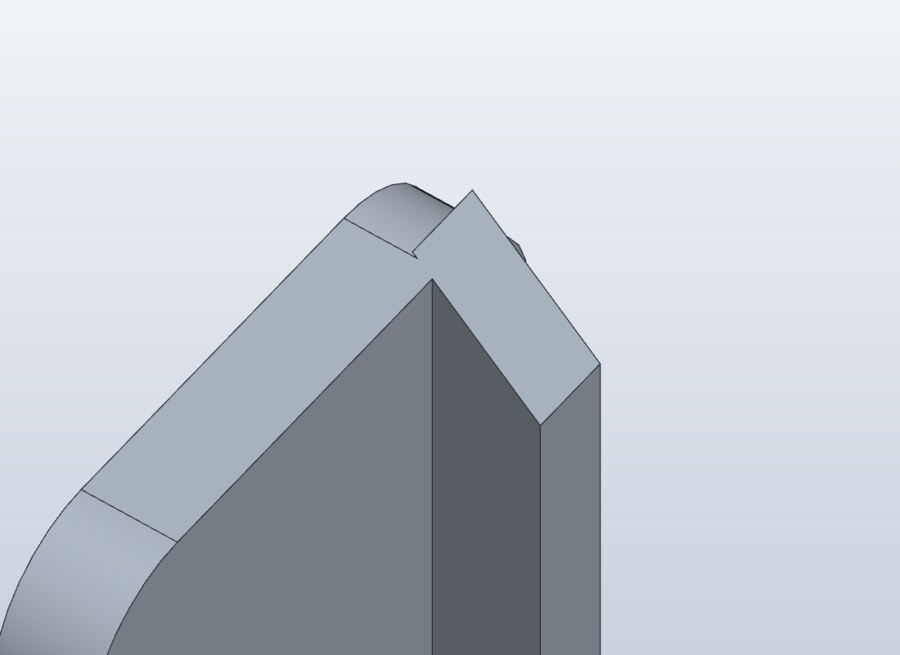 | 18828-slanted-foot-flush-with-joined-rounded-platea slanted foot (a parallelogram in XY with corners (-4.4254936281927515, -15.938417685876269), (-3.0565447957777483, -15.938417685876269), (-1.5555361814781503, -12.71949432476632), (-2.9244850138931535, -12.71949432476632), extruded from z 2.1 to 10.3) joined to a plate whose top is flush with the foot's top: a rounded rectangle x -5..5, z 0..10.3 with corner radius 2, extruded along y from -15.43842 to -16.43842 and joined with the same outline from -16.43842 to -17.03842 (so one prism 1.6 thick, its vertex tolerances grown to 2.3e-5 by the first join). The foot's top lies in the plate's top plane and crosses the line x = -3 where that plane meets the corner cylinder, and the foot's inner slanted side crosses that line at y = -15.817 inside the plate. The join failed in make_faceuse with 'the related vertex is not an end of the edge use'; the same plate made as one 1.6 thick extrude joined, and the mirrored foot on the right joined. | passes |
| no render | 1910-coaxial-cylinders-intersectintersection of two cylinders of one radius on one axis (z 0..30 and 22..46) whose round sides lie in each other over the shared 8 mm | passes |
| no render | 1927-delete-pocket-face-restores-plateDelete Face on the 0.5 mm deep O15 recess of a plate: the face around the gap must keep its surface | passes |
| no render | 1949-extrude-side-drawn-in-collinear-piecesa profile side drawn as two collinear lines extrudes into one flat face, not two with an edge between them | passes |
| no render | 1949-tapered-extrude-side-in-collinear-pieceswith a taper too, a side drawn in two collinear pieces is one face | passes |
| no render | 19699-draft-cylinder-under-a-turned-pad-touching-its-rimStress corpus S9323: a cylinder r 20, z 0 to 60 (seam at 0.6131 rad), joined with a 4.8 square pad 4.8 tall on its top, turned 45 degrees with its +x corner 0.00001 past the rim. The case replays SolidCraft's traced join of the two extruded records. At their 0.00002 tolerance the join leaves no sliver: the pad's corner is one vertex on the rim, which splits the cylinder's top rim into two arcs, both bordering the top plane. The side drafted 3 degrees about its base, pulled up, leaning in: the cone is r 20 - 60 tan 3 degrees at the top, so the whole pad stays above z = 60 and its underside outside the cone is uncovered. V = pi h (R^2 + R r + r^2) / 3 + 4.8^3, R = 20, r = 20 - 60 tan 3 degrees, h = 60. Faces: the cone, the base, the top (the disc r less the pad's footprint), the pad's underside past the cone, and the pad's top and four sides: 9. Edges: the cone's seam, its base circle and its top circle in three arcs (split at the seam and where two pad sides cross it), the pad's four bottom edges on the top with the two crossing ones' outer pieces on the underside, its four upright edges and its four top edges: 19. Vertices: the seam's two, the two crossings, the pad's eight: 12. | passes |
| no render | 1984-near-coaxial-pin-overlaps-bore-wallthe overlap of a pin 0.00056 mm off the axis of a bore of its own radius (r=3, 9.65 long): a thin crescent. The report's STEP round trip is left out; this is the geometry | passes |
| no render | 1984-rivet-with-flush-heads-a-hair-off-its-holea rivet (shank r=2, heads r=4 flat on both faces of a 1.5 mm sheet) 0.004 mm off the axis of its hole: overlap with the sheet is the shank's crescent; the heads touch the sheet faces over an area but add no volume | passes |
| no render | 2003-mirror-feature-join-flush-with-mirror-planemirror a feature with Join: the image meets its original along the mirror plane and the join was refused for its volume | passes |
| no render | 2008-coaxial-cylinders-join-one-walla join of coaxial cylinders of one radius whose walls overlap leaves one cylindrical wall in one face (it came out as a stack of faces, so a later chamfer on its top edge refused) | passes |
| no render | 20390-edge-notches-with-arcs-tangent-to-the-plates-sidea 220 x 220 x 15 plate less four notches 6 deep in its x sides, each notch's two R6 entry arcs tangent to the side: the round wall an entry arc sweeps meets the side plane a hair inside the wall (1.6e-10) and starts between the two crossings, so it touches the plane along its own end; one valid solid | passes |
| no render | 2055-countersink-holes-from-several-sketch-pointsa countersunk hole at two sketch points at once, in a design with several bodies: 'there is no body to cut or intersect' (one point works) | passes |
| no render | 2076-rectangular-pattern-of-cylinder-joina rectangular pattern of a cylinder join (pin-fin plate) scales quadratically in time | passes |
| no render | 20780-clipped-sphere-bore-opens-at-the-rimA sphere of radius 10 mm clipped at z = -6 and 7 has a lower rim of radius 8 mm. A coaxial cutter of radius r = 7.99999 mm extends from that rim to z = 0. At the 0.00001 mm coincidence tolerance, the kernel collapses the narrow annulus onto a shared rim. The sphere, top disc, bore wall and bore ceiling are the four faces of the open solid. A skin across the opening adds two faces while giving the same volume. Integrating the spherical sections and subtracting the cylinder gives pi * (100 * 13 - (7^3 - (-6)^3)/3 - 6*r^2) mm^3. | passes |
| no render | 21687-insert-intersect-chamfered-block-cornerintersect of a 0.8 mm insert with a block chamfered 0.3 mm x 45 deg along its bottom edges; one side of the insert lies on a chamfered facet and its corner 0.00015 mm past the block's corner, so its next side leaves the next facet by 5.6e-6 rad (1.1e-5 mm at most): the chamfer wedge along both facets is removed, not lost | passes |
| no render | 22809-draft-spline-extrusion-sidethe side of a prism on a closed curvature-continuous outline in z = 0, 20 tall: the outline is the uniform periodic cubic B-spline on the control points (30, 0), (20, 15), (0, 20), (-20, 15), (-30, 0), (-20, -15), (0, -20), (20, -15), given as one clamped cubic of its eight Bezier pieces, so the prism has one side face with a seam. The side is drafted 3 degrees about the bottom, pulled up, leaning in. It was refused, 'a drafted face is neither a plane nor a cone or cylinder' (#22809). | passes |
| no render | 22816-hole-through-a-variable-round-on-a-frustums-rima frustum (radii 2 and 1, height 3) with its top rim rounded by a variable radius, 0.14 at (1, 0, 3) rising linearly to 0.28 half way round and back, less a 0.2 mm hole 0.8 deep from the top at (0, -0.85) whose rim runs across the round. The case replays SolidCraft's traced round and cut from the revolved and extruded records; the cut failed ("the traced UV control polygon is not proved inside the surface domain") while its mirror hole at (0, 0.85) built | passes |
| no render | 23062-notch-through-thin-round-on-large-half-torusthe upper half of a torus (centre circle r 500, tube r 0.5) with both edges of its flat face rounded with 0.05, less a r 0.05 notch 0.25 deep centred on the flat face's outer rim at +Y: one valid solid. The check refused the cut on test 11 (Bad SpeedPt): a UV trim of the outer round, read in raw (u, v), slowed to 3.5e-4 against a tolerance of 4.4e-4, where on the surface it moves at 0.97 or more | passes |
| no render | 23492-grooved-block-less-a-half-ball-on-the-grooves-end-discissue 23492 case A3: the box (-6, -6, -8) to (36, 26, 0), cut by the disc of radius 3 swept along the cubic Bezier (0,0,0), (10,0,0), (20,20,0), (30,20,0), then by the half x <= 0 of the ball of radius 3 about the origin, then by the half x >= 0 of the ball of radius 3 about (30, 20, 0), whose flat face lies on the groove's end disc (the last cut was refused). Refused since 0.49.1 with 'the drop found no foot point': the drop of the shared edge onto the turned face starts where that face meets its axis, a singular point, and just past it the edge leaves the face, so the drop of the next point, bounded by the curve-on-surface distance, rightly finds no point within the bound; that was taken as an error. | passes |
| no render | 23492-half-ball-joined-to-a-half-disc-turned-about-its-diameterissue 23492 case A2: the half y <= 0 of the ball of radius 2 about (1, 0, 0), joined to the part x >= 0 of its great disc in the plane y = 0 (closed along the z axis), turned 120 deg about z from +x towards +y; the half ball's flat face holds the fan's start face. Refused since 0.49.1 with 'the drop found no foot point': the drop of the shared edge onto the turned face starts where that face meets its axis, a singular point, and just past it the edge leaves the face, so the drop of the next point, bounded by the curve-on-surface distance, rightly finds no point within the bound; that was taken as an error. | passes |
| no render | 23492-revolved-segment-joined-to-a-cylinder-on-its-end-discissue 23492 case A1: the disc of radius 20 about (y, z) = (0, 18) in the plane x = 0, cut off along the y axis (z >= 0), turned a quarter turn about the y axis (+z towards +x), joined to the cylinder of radius 20 about y = 0, z = 18 from x = -40 to x = 0, whose end disc holds the turn's start face. Refused since 0.49.1 with 'the drop found no foot point': the drop of the shared edge onto the turned face starts where that face meets its axis, a singular point, and just past it the edge leaves the face, so the drop of the next point, bounded by the curve-on-surface distance, rightly finds no point within the bound; that was taken as an error. | passes |
| no render | 2464-extrude-join-leaves-hidden-body-alonean Extrude Join onto a plate with a hidden coincident copy: the hidden body must not be joined in | passes |
| no render | 2524-circular-pattern-of-bore-cuta circular pattern (count 2, 360 deg, about Y) of a cut made off-axis: 'boolean Cut: no result' | passes |
| no render | 2537-box-minus-tilted-cylinder-cap-on-top-facea box minus a cylinder of radius 8 tilted 4.006 degrees from z, whose top end cap is centred on the box's top face plane z = 16.5 so the cap is bisected by that face, and whose seam ends on one of the two points where the cap circle crosses it: a vertex where the cylinder, its cap plane and the box's face all meet. The cut must give one closed solid; the same cut with the cap centre 1 um clear of the face passes | passes |
| no render | 2538-slant-edge-minus-tilted-notch-caps-on-facesa box clipped by a half space, less a quarter-round notch along the tilted edge that clipping leaves: the notch's tool is the cylinder of radius 8 about that very edge, tilted 4.006 degrees from z, its seam on the line where the cylinder meets the slanted face on the material side, and both its cap centres exactly on the box's z = 16.5 and z = -55 face planes. The cut must give one closed solid; the mirror image about x = 0, whose seam is on the line on the empty side, passes. This entry's slanted plane holds the axis exactly, which is what the issue's design means; built from the issue's own rounded rotation the plane misses the axis by 1.5e-06 mm and 4.5e-07 rad, and the same cut then fails face test 36 (tests/issue_2538_tilted_notch_on_a_slant_edge.rs holds that as known failing) | passes |
| no render | 2564-joined-side-run-wrapping-past-loop-startan extrude of an outline whose bottom side is drawn as two collinear pieces that wrap past the loop's first segment ((10,0)->(20,0) ... (0,0)->(10,0)): the bottom is one face | passes |
| no render | 2580-clip-round-small-hole-of-long-platea 16 mm box cut out round a small (r 1.8) hole of a 3 m long, 2 mm plate keeps the hole in both faces | passes |
| no render | 2583-taper-side-drawn-in-collinear-piecesa tapered extrude of a 20x10 rectangle whose bottom side is drawn as two collinear pieces: the sloped side is one face | passes |
| no render | 2601-taper-with-start-offseta tapered extrude whose start is offset along the sketch normal (the app says: not supported yet: taper with two-sided, symmetric or offset extents) | passes |
| no render | 2754-taper-extrude-line-arc-cornera tapered extrude of a profile in which an arc meets a line at a corner (a half disc) | passes |
| no render | 2755-mirror-copy-keeps-seed-targetsthe mirror copy of a primitive cut changes only the seed's targets, not a body the seed was told to leave alone | passes |
| no render | 2755-pattern-copies-keep-seed-targetscopies of a primitive cut made with a rectangular pattern change only the seed's targets, not a body the seed was told to leave alone | passes |
| no render | 2801-prism-edge-in-round-cornered-slab-end-facea join of a triangular prism and a thin slab with rounded corners (r 4.9) that share their bottom plane, the prism's edge in that plane lying in the slab's end face | passes |
| no render | 2810-taper-extrude-arcs-meeting-at-cornersa tapered extrude of a loop of arcs on three circles meeting at sharp corners (a circle with a lobe on each side); the walls must meet at the corners | passes |
| no render | 2826-cut-up-to-face-leaves-no-skina cut that ends exactly in a face of its target (the plate's top face) must open the hole, not leave a zero-thickness skin over it | passes |
| no render | 2896-join-arm-end-into-ring-walla join of a ring (R30/R24, 6 tall) and an arm with a convex R5 end whose tip runs 0.1 mm into the ring's outer wall (curved faces that nearly graze) | passes |
| no render | 2896-join-arm-end-near-ring-wall-gapa join of a ring and an arm whose R5 convex tip stops 0.01 mm short of the ring's outer wall: nothing overlaps, so nothing fuses | passes |
| no render | 2904-countersunk-hole-with-distant-bodya countersunk hole in a small plate, near a rounded corner, while an unrelated body sits 120 mm away: only the plate may change, and the countersink must be complete | passes |
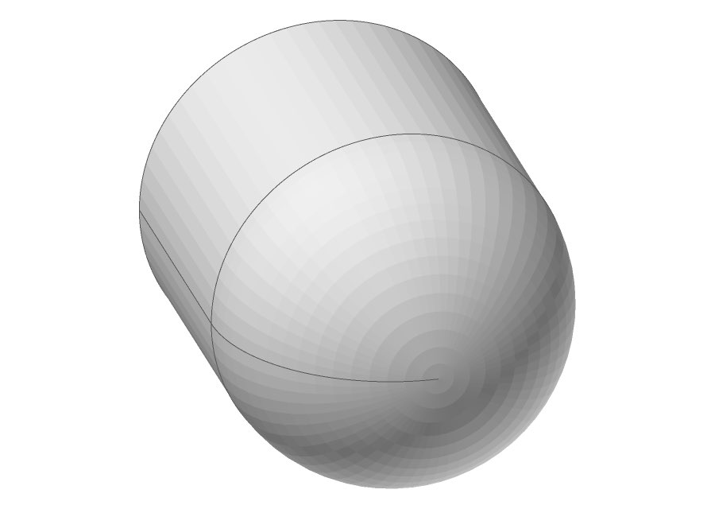 | 3011-revolved-dome-1e-8-off-joined-flush-to-a-cylindera dome made by solid.revolve (quarter disc r 10 about y, its arc passing through [7.0710678118654755, 7.0710678], about 1e-8 off the true circle (its y is rounded to 8 decimals; the exact point passes)) joined flush to a cylinder of the same radius (r 10, h 15, below y = 0, sharing the circular face y = 0): one solid. With the arc about 1e-8 off, the check refused the result ('Face Near missing Seam') until #13713 was fixed (#14348); the same case with the exact arc passes, and so does a primitive sphere joined to a cylinder (2851) | passes |
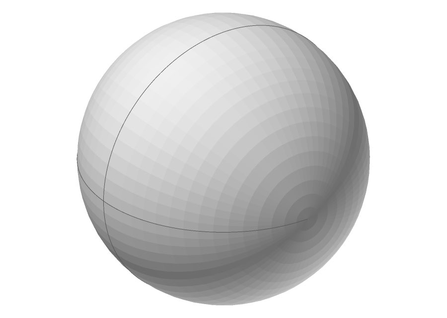 | 3011-revolved-dome-1e-8-off-joined-to-its-mirrora dome made by solid.revolve (quarter disc r 10 about y, its arc passing through [7.0710678118654755, 7.0710678], about 1e-8 off the true circle (its y is rounded to 8 decimals; the exact point passes)) joined to its own mirror across y = 0 (solid.mirror with combine): a sphere. With the arc about 1e-8 off, the check refused the result ('Face Near missing Seam') until #13713 was fixed (#14348); the same case with the exact arc passes, and so does a primitive sphere joined to a cylinder (2851) | passes |
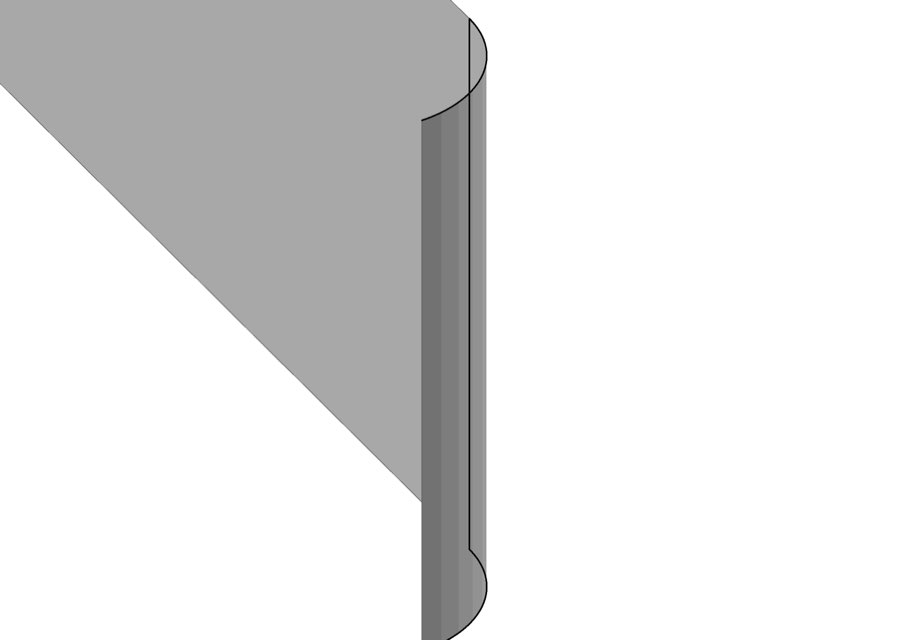 | 3012-filleted-boxes-1e-4-apart-cut-reversedtwo 40x30x10 boxes with R2 vertical corner fillets, the second shifted 1e-4 mm in x (a rounded-rectangle sketch extruded for B, a filleted box for A), cut B - A (B is the target): a sliver 1e-4 thick (SMLib refused it as 'not a closed solid' before solidcore#3074) The kernel returns one body of the right volume, but with 8 faces, 18 edges and 12 vertices instead of 10, 24 and 16: the two 1e-4 wide faces on y=0 and y=30 are absorbed into edge tolerances of 4e-5 and 5e-5, for a body tolerance of 1e-5. The case is listed in known_failing.json; the render draws the edges above 2e-5 in black. | known failing the two 1e-4 wide faces of the sliver (y=0 and y=30) are absorbed into the tolerance of their edges (4e-5 and 5e-5 for a body at 1e-5): 8 faces, 18 edges, 12 vertices instead of 10, 24, 16 |
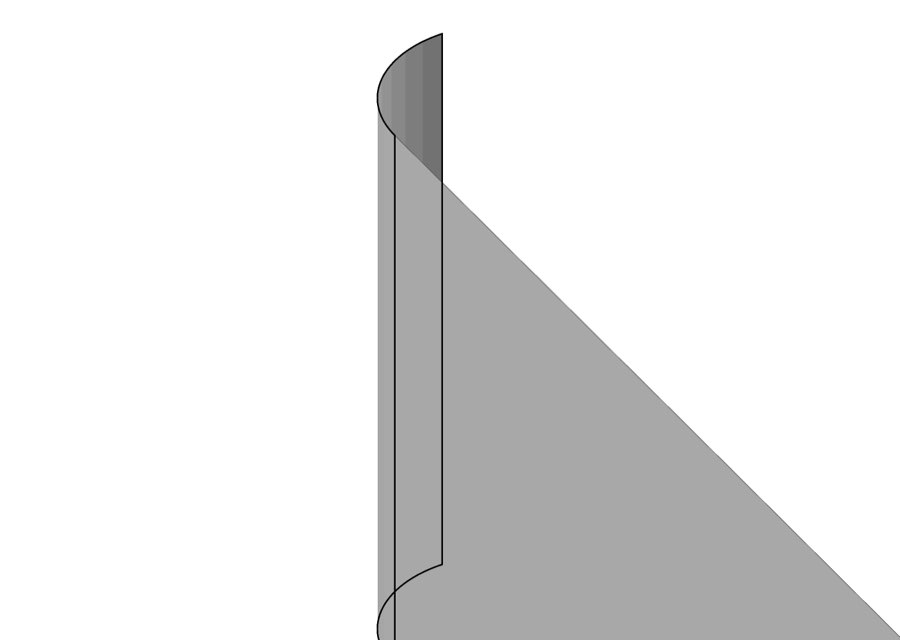 | 3012-filleted-boxes-1e-4-apart-cuttwo 40x30x10 boxes with R2 vertical corner fillets, the second shifted 1e-4 mm in x (a rounded-rectangle sketch extruded for B, a filleted box for A), cut A - B (A is the target): a sliver 1e-4 thick (the kernel refused it with upstream status 1001 before solidcore#3074) The kernel returns one body of the right volume, but with 8 faces, 18 edges and 12 vertices instead of 10, 24 and 16: the two 1e-4 wide faces on y=0 and y=30 are absorbed into edge tolerances of 4e-5 and 5e-5, for a body tolerance of 1e-5. The case is listed in known_failing.json; the render draws the edges above 2e-5 in black. | known failing the two 1e-4 wide faces of the sliver (y=0 and y=30) are absorbed into the tolerance of their edges (4e-5 and 5e-5 for a body at 1e-5): 8 faces, 18 edges, 12 vertices instead of 10, 24, 16 |
| no render | 3027-pin-seated-line-to-line-in-borea pin (r4) seated line to line in a bore (r4, exactly coaxial) of a bush: the two cylinder walls coincide | passes |
| no render | 307-tangent-hole-contacts-ring-against-gridfour pairs of through holes whose circles touch at exactly one point (ring holes at (+-25,0),(0,+-25) against grid holes at (+-15,0),(0,+-15)); the symmetric contacts must be treated alike and split no cylinder face | passes |
| no render | 308-blind-cut-ending-inside-a-cylindera hinge leaf (40x30x3) with a joined r4 knuckle cylinder along X and a O4 pin hole, then a 3.3 mm blind cut of x 12..28, y 29..40 ending inside the cylinder: the result grew a sphere and a freeform face | passes |
| no render | 3092-ring-on-perforated-platea ring (r 19.6/20.8, 20 tall) joined onto the top of an 80x80x1.2 plate with a 9x9 grid of 6.4 mm square holes: the ring's foot crosses many hole edges | passes |
| no render | 3175-cut-beside-sealed-voida cut over the bottom edge of a revolved cylinder that holds a sealed spherical void on its axis: the body must not come out empty or refused | passes |
| no render | 3243-rim-and-rounded-tooth-joina join of a cylindrical rim (r 15.27..16.65, to z=5) and a rounded tooth trimmed to the same two cylinders that overlaps it by 0.01 mm in Z | passes |
| no render | 3303-inward-cut-of-frustum-top-facecutting the complete circular top face of a widening conical frustum inward: the cylindrical tool touches the cone only at its rim | passes |
| no render | 3327-cut-ending-flush-with-side-walla cut whose end face lies exactly in a side wall of its target (a window notch): the cut must open the wall, with no skin left in it | passes |
| no render | 3378-circular-pattern-of-join-that-merged-targetsa circular pattern of a join whose two targets (rim and hub) were merged into one body by that join | passes |
| no render | 3379-circular-pattern-of-thin-spoke-on-ringa circular pattern (count 5) of a spoke thinner than the ring it joins (faces 0.5 mm inside the rim and hub faces) | passes |
| no render | 3383-combine-tool-into-rotated-occurrencea root body joined into a body inside a component whose occurrence is turned a quarter turn: the tool must stay where it is in the world | passes |
| no render | 3447-split-along-plane-of-a-facesplit body where the splitting plane contains an end face (with a boss on it and an R1 fillet on the face's edge) | passes |
| no render | 3455-join-of-64-separate-pegsone combine of 64 separate pegs that do not touch: 36 s on truck, growing 4-9x per doubling; must finish in seconds | passes |
| no render | 3456-deep-cut-through-drilled-taper-leaves-basea deep cut that removes everything above z=2 of a tapered body with nine through-bores, leaving the 2 mm drilled base | passes |
| no render | 3460-cut-by-lid-with-coincident-walls-and-half-moon-tabsCombine cut (keep tools) of an enclosure by its lid whose insert is flush with the inner walls and carries four small half-moon tabs that cross them; the cut must not return the target unchanged | passes |
| no render | 3485-boss-joined-on-rod-top-keeps-side-wholea boss joined on a rod's top face (the join runs the boss on into the rod); the rod's side must stay one face, not seamed at the boss's foot | passes |
| no render | 3497-collinear-cylinders-partial-height-intersectionintersection of two collinear R2 H12 cylinders offset by 0.75 along the axis (curved walls coincide over part of the height) | passes |
| no render | 3497-pin-overlapping-bore-by-20-micronsa pin r=3.02 intersected with a tube whose bore is r=3: a thin annulus (0.02 mm overlap on a curved wall) | passes |
| no render | 3526-intersect-keeps-every-lumpintersect of a two-lump target (two spheres joined while apart) with a box holding the bottom half of each | passes |
| no render | 3604-cut-with-g2-swept-tool-along-projected-edgecut of a box by a swept G2 corner-removal tool along a projected edge chain (left-rear corner; the symmetric front-left chain works) | passes |
| no render | 3612-circular-pattern-of-spoke-tangent-to-huba spoke whose inner face x=12 is exactly tangent to the hub cylinder r=12 (line contact), joined to the rim, patterned 5 times around the hub's axis | passes |
| no render | 3633-sphere-intersect-pyramid-apex-at-centrea sphere r=10 intersected with a square pyramid whose apex is the sphere's centre and whose sides lie in the planes of the sphere primitive's patch edges | passes |
| no render | 3652-mirror-of-a-mirror-featuremirror a Mirror feature (the first mirror's hole) about a second plane: 'Mirror1 cannot be patterned or mirrored yet' | passes |
| no render | 3665-join-extrude-column-on-floor-and-curved-wallsa join extrude of a column standing on a channel's flat floor and lying along both its curved walls (column circle tangent to both walls) | passes |
| no render | 3671-intersect-tool-in-top-face-beside-ribintersect with a tapered pocket tool whose top face lies in the block's top face, 0.5 mm short of a rib | passes |
| no render | 3702-board-in-cavity-of-filleted-rim-casea 0.2 mm board lying in the open cavity of a case with a filleted circular rim: cutting it from the case must leave the case unchanged (it was taken for wholly inside) | passes |
| no render | 3703-two-face-extrudes-join-keep-the-steptwo joined face extrudes on one box (top face, then the right side face): the stepped shape must stay | passes |
| no render | 3729-extrude-to-point-on-step-edgeextrude to a point lying exactly on the top edge of a step: must end at the plane z=20 through the point | passes |
| no render | 3782-emboss-on-cylinder-pick-on-far-halfemboss on a cylinder with the face pick on the half of the wall opposite the sketch | passes |
| no render | 3816-circular-pattern-of-body-about-offset-axiscircular pattern of a body about an axis {origin,dir} that does not pass through the world origin | passes |
| no render | 3830-split-cup-by-extended-spline-surfacesplit a thin-walled cup (shell of a d30 cylinder) with a surface body: an extruded spline surface, extended at both ends | passes |
| no render | 3850-cross-cut-touching-round-sidea O50 x 50 cylinder with a 25 mm square through-hole, then a cross cut by a O40 circle split into two halves by a line (both halves picked, merged into one round tool whose end face x=25 touches the cylinder's side along y=0): the result must be one shell, not a good shell plus a zero-area one | passes |
| no render | 3850-hole-through-wall-after-cross-cutthe O10 through-all hole across the wall of the body from the cross-cut case (the report's failing step: 'lumps: cannot mesh a complete shell boundary') | passes |
| no render | 3968-hole-as-wide-as-a-cones-topa hole of diameter 10 drilled into the top of a truncated cone whose top is also diameter 10 (the hole wall meets the cone at the top rim) | passes |
| no render | 4008-symmetric-revolve-cut-ends-in-side-facesymmetric 180 deg revolve cut about a vertical edge of a block, the tool's end faces lying in the block's side face | passes |
| no render | 4011-mirror-of-cut-under-walla blind hole mirrored to a spot where half its top disc lies under a wall's foot | passes |
| no render | 4058-walls-joined-flush-round-a-floora 10 mm ring (rounded corners) extruded 40 mm as a Join round a floor's outline: it touches the floor back to back on its flat sides and rounded corners | passes |
| no render | 4095-slab-cut-standing-off-a-bore-r10a slab cut whose +x face stands 6.73e-05 mm (0.90 x the coincidence tolerance 7.48e-05) off a through-bore's wall (R=10), beside the bore | passes |
| no render | 423-through-all-cut-must-not-reach-behind-sketch-planea one-sided Through All cut from a sketch plane at x=98 toward -x, with its wall 0.0022 mm from a face of a notch beyond the plane: the cut must remove nothing at x > 98 | passes |
| no render | 4286-split-body-and-join-pieces-backa body split by a plane, its two pieces joined back, flush on the split faces (the report's part was an imported vendor connector; synthetic: a block with a bore and a boss, both cut by the plane): the join never finished | passes |
| no render | 4294-oblique-through-all-cut-of-slotted-ringa symmetric through-all cut by a 45 deg wedge across the end of a slotted ring (r 22.5..40, a 3 mm slot, 75 mm long): truck left a stray planar sheet out to the sketch's boundary at x = -65, with no error | passes |
| no render | 4313-join-3x3-grid-of-overlapping-ringsnine identical rings (r 10..20, 5 thick) in a 3x3 grid 38 apart, each overlapping its edge neighbours, joined in one combine: ~90 s then 'boolean Union: no result' (one pair already failed) | passes |
| no render | 4322-join-rectangle-cornered-on-slanted-edgea 6x7 rectangle with one corner exactly on the slanted top edge of a triangular prism, joined 10 mm up: 'profile loop is not closed' on 0.17 | passes |
| no render | 4347-slab-joined-under-tapered-pyramid-basea 60x60 slab sketched on the base of a tapered square pyramid frustum and extruded 10 mm away from it as a join: 'join cannot preserve the original faces; check for zero-thickness edge contact' | passes |
| no render | 4431-tapered-text-cut-over-block-edgea line of text (22 letters, 7.81 mm high) on a block's top face, running over the block's edge, cut 1 mm deep with a -5 deg taper: 145 s in truck (the untapered cut takes 1 s) | passes |
| no render | 4468-box-minus-bore-measures-exacta 20x15x5 box minus an r3 through bore: truck's measure read 1.66e-4 of the removed volume too much (1358.6518 for 1358.6283) while the geometry was exact | passes |
| no render | 4505-join-coil-through-cylinder-walla coil (diameter 151, pitch 10, 80 high, 5 mm round section) whose section runs through a diameter-152 cylinder's wall, joined to it: truck ground for 125-296 s, then 'boolean Union: no result' | passes |
| no render | 451-cut-block-crossing-hollow-sphere-toola 12x8x8 block (x 8..20) crossing the inner sphere r=18.5 of a hollow spherical-shell tool: the cut keeps the part inside r=18.5 | passes |
| no render | 451-cut-block-inside-hollow-sphere-toola block wholly inside the void of a hollow spherical-shell tool (r 18.5 to 40): cutting leaves it untouched, the tool never reaches it | passes |
| no render | 4558-join-tool-grown-past-blocka 10 mm join on a block's top face whose sketch is then edited out past the block on every side (60 x 50 on a 40 x 30 top): truck refused the rebuilt join ('join cannot preserve the original faces') and dropped it | passes |
| no render | 4654-split-body-by-its-own-face-extendedSplit Body of an L-shaped body with one of its own faces as the tool (the column's side x = 15, its surface extended through the base): truck panicked ('split body: Option::unwrap() on None') | passes |
| no render | 4701-join-disc-on-tapered-ringa 3 mm disc (r23) joined on the top face of a ring extruded 14 mm with a 10 deg outward taper (r 18.5 growing, bore 13.75 shrinking): 202 s in truck before the right result | passes |
| no render | 4825-tapered-pocket-with-small-corner-radiusa 5 mm pocket cut from a hull's top face with a 30 deg taper (growing with depth) from a 282x176 outline with r2 corners: truck refused it ('the taper closes the profile'), as its run-on behind the start face narrowed past the corner radius | passes |
| no render | 4829-cut-from-flat-top-bounded-by-fillet-edgea cylinder r10 x 40 with its top edge filleted r2, cut 14 mm down from its flat top face (the R8 disc, bounded by the fillet's edge): ~30 s, then 'boolean Cut: no result' | passes |
| no render | 4877-pocket-on-tab-joined-to-chamfered-disca 0.6 mm pocket cut from the top of a tab joined to a disc with a chamfered bottom edge (the join fell back to truck's tool nudge, which lifted the tab's top by 5e-5 mm): the pocket never opened, it left a sealed void under a 0.00005 mm skin | passes |
| no render | 4879-cut-through-thickened-spline-revolvea symmetric through-all cut of a window across a thickened (2 mm) surface revolve of a control-point spline (100 deg about X): truck ran ~20 s to 'boolean Cut: no result' (or never finished) | passes |
| no render | 4927-slot-cut-through-chamfered-tube-walla 5 mm slot cut end to end through one wall of a tube (r 20..30 x 100) whose top rims are chamfered (2.5 outside, 4 inside): the cut hung (moving the chamfers after the cut worked) | passes |
| no render | 500-coaxial-cylinder-cut-from-thin-disca radius 20 cylinder cut out of a coaxial radius 40 disc spanning x -1..1 lost about 2.6% of the volume | passes |
| no render | 5024-drilled-hole-across-box-edgea drilled O8 hole, 10 deep with a 118 deg point, centred on the top edge of a 40x30x20 box (x = 0): half of it in the box, across the edge: 17-54 s in truck | passes |
| no render | 5041-countersink-beside-wall-stays-below-facea countersunk O6.4 hole (O13.7, 90 deg) through a plate 0.15 mm from a wall standing on it: the countersink tool reached ~0.7 mm above the entry face and notched the wall | passes |
| no render | 5126-join-menger-sponge-level-3a join of the 20 level-2 Menger sponges (45 mm, 5 mm cubes) of a level-3 sponge, touching face to face with the same hole pattern on both faces of each contact: truck failed depending on the tools' order ('coincident faces were left in place', 'shell not oriented and closed') | passes |
| no render | 5149-circular-pattern-of-40-fins-joined-to-platea 25x2x10 fin standing on a disc plate, circular-patterned 40 times about the plate's axis (joined): 'boolean Union: no result' past about 15 copies | passes |
| no render | 5291-join-pin-on-prism-face-beside-blind-borea pin (r2.1 x 11) joined on the side face of a triangular prism that has a blind bore running in from its slanted face: the join ground for ~90 s, then 'boolean Union: no result' | passes |
| no render | 5295-intersect-bar-with-two-mirrored-outlinesa bar intersected in one extrude with two mirrored outlines (slanted on their inner sides): truck deleted the body with only a warning; each outline alone worked | passes |
| no render | 5322-cut-with-a-5000-mm-toolan r2.5 hole cut through a 40x30x10 block's 30 mm side by a 5000 mm extrude: truck panicked ('tolerance must be no less than 1e-6') at 5000 mm (4999 worked) | passes |
| no render | 5353-through-hole-beside-a-blind-drill-tipa second plain O9 through hole in a 14 mm base plate, nowhere near a blind drilled O4.2 hole in the tower above: truck refused it, pointing at the blind hole's 118 deg tip ('could not be computed reliably') | passes |
| no render | 5413-join-rib-flush-on-channel-floora rib joined flush onto the floor of a channel (a box rounded r2.4 on all edges, its 45 wide cavity cut through its top and both ends), its ends buried in the side walls: truck's tool nudge kept both faces of the flush contact, a 0.077 um slit with 450 mm2 too much area | passes |
| no render | 5462-press-pull-inner-wall-of-rectangular-openingan inner wall of a rectangular opening through a block face-extruded 1 mm back into the material as a cut (what Press Pull runs on a flat face): 'boolean Cut: no result' | passes |
| no render | 559-through-hole-into-shelled-box-rima 1 mm through-all hole straight down into the 2 mm rim of a shelled box: 'implausible volume' / no result | passes |
| no render | 562-press-pull-floor-beside-roundsPress Pull of a floor whose neighbours are rounds (vertical corner fillets): 'a neighbouring edge is not straight' | passes |
| no render | 831-tapered-extrude-d-shape-arc-meets-linetapered extrude of a D shape (an arc meeting a line at a sharp corner): refused as 'tapered profiles where an arc meets another edge at a corner' | passes |
| no render | 831-tapered-extrude-text-glyphtapered extrude of a text glyph (Bezier outline): refused with a misleading 'mixing lines and arcs' error | passes |
| no render | cov-boundary-fill-crescent-inside-one-toolBoundary Fill of the cell inside one cylinder and outside the other: the crescent | passes |
| no render | cov-boundary-fill-lens-of-two-cylindersBoundary Fill of the cell inside both of two overlapping cylinders (r10, axes 10 apart): the lens | passes |
| no render | cov-boundary-fill-point-outside-every-tool-refuseda cell point outside every tool encloses nothing: refused | refused as expected the refusal names “outside every tool” |
| no render | cov-draft-two-adjacent-faces-meet-at-a-cornertwo adjacent sides of a block (front and right) drafted 10 deg from the base: the drafted faces meet along a new slanted edge | passes |
| no render | cov-pattern-path-bodies-turn-along-an-arca body patterned 3 times along a half circle r20 with orientation path: each copy turns with the tangent | passes |
| no render | cov-pattern-path-bosses-along-a-linea boss joined to a plate, patterned 5 times 20 mm apart along a sketch line | passes |
| no render | cov-pattern-path-past-the-end-refused6 instances 20 mm apart need 100 mm of an 80 mm path: refused | refused as expected the refusal names “run past the end of the path (80.000 mm long)” |
| no render | cov-press-pull-edge-rounds-itPress Pull on an edge (its fillet mode): the block's top front edge rounded r2 | passes |
| no render | cov-project-face-loop-then-extrudea cylinder's top face projected onto a sketch 10 mm above it and extruded: the projected circle is the profile | passes |
| no render | cov-project-sphere-silhouette-then-extrudea sphere's silhouette projected onto a plane below it and extruded: the outline is its equator circle, exactly | passes |
| no render | cov-split-face-by-a-sketch-circlea block's top face split by a sketch circle on it: a disc face and the face around it | passes |
| no render | cov-split-face-by-another-bodys-facea block's top face split by the side of a cylinder standing on it (the tool face's surface extended) | passes |
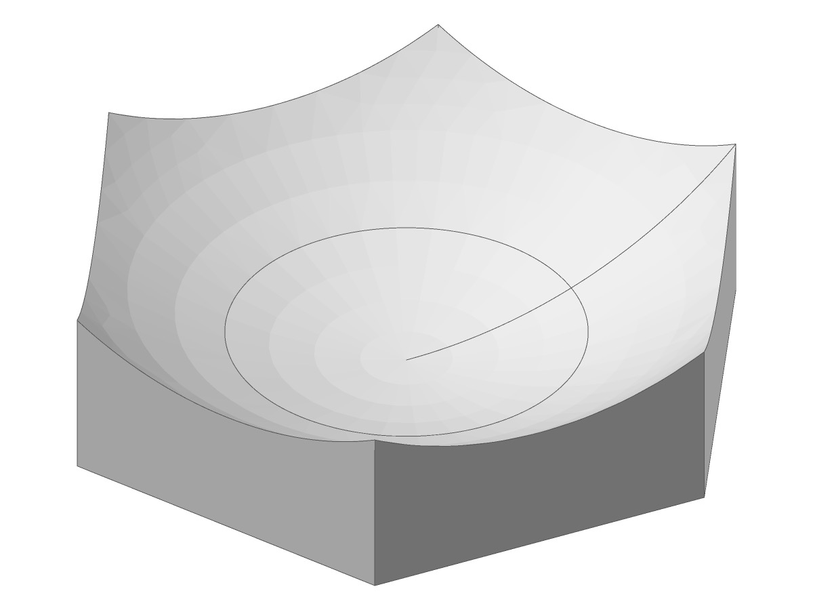 | fragmented-hemisphere-cut-at-hex-cornersA circumradius-50 regular hexagonal prism (z=0..50) is cut by a lower hemisphere of radius 69 centred at z = 72. The quarter-disc profile is split at radial distances 25 and 50. The radial-50 band meets the prism only at hex corners; no small circular tail is a distinct boundary. Expected roof z(r)=72-sqrt(69^2-r^2). The volume is the exact polar integral over six hexagonal wedges: V=(R+3)A-2*pi*R^3/3+4F, A=3*sqrt(3)s^2/2, d=sqrt(3)*s/2, a=sqrt(R^2-d^2), b=sqrt(R^2-s^2), phi=asin(s/(2a)), F=R^3*atan(R/(sqrt(3)*b))-(3*a^2*d/2+d^3)*phi-d^2*b/(2*sqrt(3)), with s = 50 and R = 69. The hemisphere axis is shifted +5e-11 mm in X to exercise a distinct clipping event at an almost coincident corner. This changes the exact volume from the centred formula by at most A*delta(50+delta)/sqrt(R^2-(50+delta)^2)<4e-7 mm^3, using the maximum derivative of the spherical roof. This bound is far below the grading tolerance; the positive shift is part of the input, not a boolean retry. Radius 69 reproduces status 1001 on SolidCraft commit f6d044089 at the reported radius offset 19. | passes |
| no render | pocket-grazing-a-slanted-facea prism with a pocket cut whose outline starts on a slanted outer face and leaves it at a shallow angle: one valid solid, not a refusal. The cut put a vertex 0.0056 mm from one edge's end; the tolerance update grew it to twice that, past 1000 times the B-rep's 0.00001 mm (SMLib Test #82), and the check refused the cut | passes |
fillets
337 cases from crates/solidcore/tests/kernel_cases/fillets/.
| Render | Case | Status |
|---|---|---|
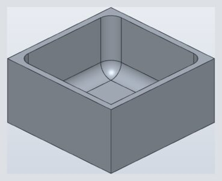 | 1008-fillet-tray-floor-and-three-of-four-cornersan R10 round on the four inside floor edges and three of the four inside vertical corners of an open tray, so one corner keeps a sharp vertical edge where two floor rounds meet (rebuilt from the report's edge picks: the original design is not in the report) | passes |
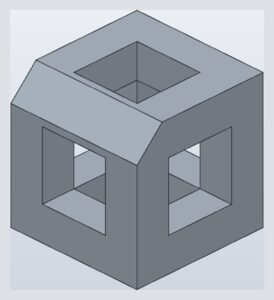 | 1080-chamfer-beside-openings-fitsa 4 mm chamfer on the top front edge of a cube with three square openings stays clear of the openings (they start 5 mm in) | passes |
1080-chamfer-equal-slope-basin-1-mm-rim-loop-0-5all four top rim edges of a basin whose walls all slope 10 over 20, its front rim 1 mm wide, chamfered 0.5, mitred at the rim's corners | passes | |
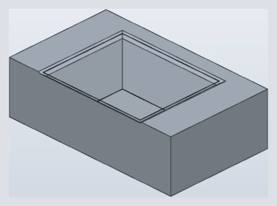 | 1080-chamfer-equal-slope-basin-1-mm-rim-loop-2all four top rim edges of a basin whose walls all slope 10 over 20, its front rim 1 mm wide, chamfered 2: the front chamfer's leg runs off the rim over the slab's front face (a cliff), so the loop builds as if the top went on, mitred at the rim's corners, and is cut by the front face | passes |
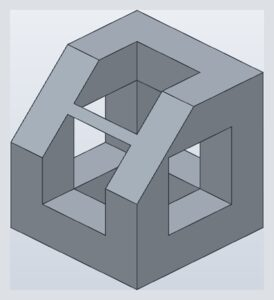 | 1080-chamfer-runs-into-openings-cut-by-thema 9 mm chamfer on the top front edge of a cube with square openings 5 mm in runs past the 5 mm between the edge and the openings: built as if the faces went on over the openings, then cut by them (cliff overflow); it never bridges an opening | passes |
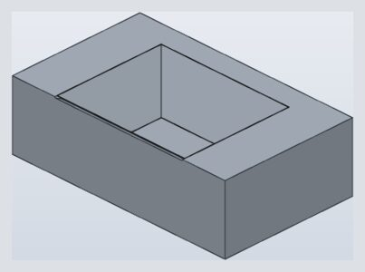 | 1080-chamfer-sloped-basin-1-mm-rim-2-past-the-rimthe 1 mm front rim of a sloped basin's top chamfered 2: its leg on the top runs off the rim over the slab's front face (a cliff), so it builds as if the top went on and is cut by the front face, which it lowers to z = 29.570689 where it crosses it | passes |
1080-chamfer-sloped-basin-1-mm-rim-as-wide-as-the-rimthe 1 mm front rim of a sloped basin's top chamfered 1, as wide as the rim: its leg on the top ends on the slab's front edge, using the rim's top up, and it builds | passes | |
1080-chamfer-sloped-basin-1-mm-rim-half-its-widththe 1 mm front rim of a sloped basin's top chamfered 0.5, half the rim's width: it fits | passes | |
1080-fillet-equal-slope-basin-1-mm-rim-loop-0-5all four top rim edges of a basin whose walls all slope 10 over 20, its front rim 1 mm wide, rounded R 0.5, mitred at the rim's corners | passes | |
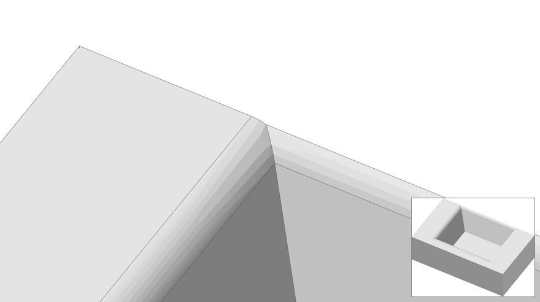 | 1080-fillet-equal-slope-basin-1-mm-rim-loop-4all four top rim edges of a basin whose walls all slope 10 over 20, its front rim 1 mm wide, rounded R 4, mitred at the rim's corners: past the rim the front round runs over the slab's front face and is cut from the slab builds to the analytic volume (rel 5e-9); the mitres' creases are G0 by the mitre ruling, so the continuity check names the rounds' contact lines | passes |
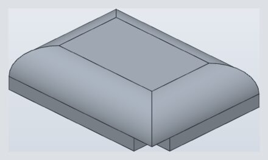 | 1080-fillet-notched-block-top-outline-r7a 40 x 30 x 10 block with a 5 x 5 x 3 notch at a bottom corner, its top outline rounded R7: the round uses up the 7 mm wall over the notch | passes |
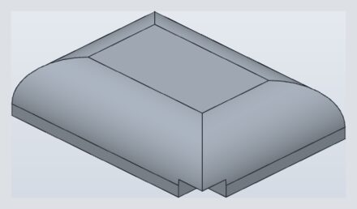 | 1080-fillet-notched-block-top-outline-r8a 40 x 30 x 10 block with a 5 x 5 x 3 notch at a bottom corner, its top outline rounded R8: the round runs past the 7 mm wall over the notch into the notch and is cut by it | passes |
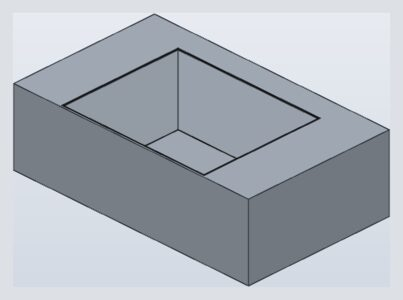 | 1080-fillet-sloped-basin-1-mm-rim-r0-5-4-edgesall four of the top rim edges of a sloped basin with a 1 mm front rim rounded R0.5, mitred at the rim's corners | passes |
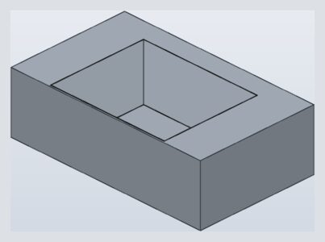 | 1080-fillet-sloped-basin-1-mm-rim-r0-5the 1 mm front rim of a sloped basin's top rounded R0.5: it fits on the rim | passes |
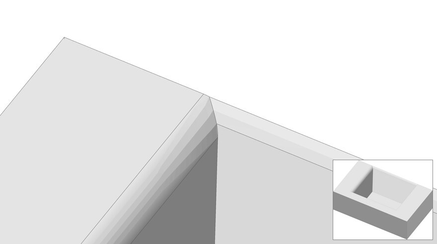 | 1080-fillet-sloped-basin-1-mm-rim-r4-2-edgesthe front and right of the top rim edges of a sloped basin with a 1 mm front rim rounded R4, mitred at the rim's corners: past the thin rim the front round runs over the slab's front face and is cut from the slab builds to the analytic volume (rel 6e-9); the mitres' creases are G0 by the mitre ruling, so the continuity check names the rounds' contact lines | passes |
1080-fillet-sloped-basin-1-mm-rim-r4-4-edgesall four of the top rim edges of a sloped basin with a 1 mm front rim rounded R4, mitred at the rim's corners: past the thin rim the front round runs over the slab's front face and is cut from the slab builds to the analytic volume (rel 3e-9); the mitres' creases are G0 by the mitre ruling, so the continuity check names the rounds' contact lines | passes | |
1080-fillet-sloped-basin-1-mm-rim-r4the 1 mm front rim of a sloped basin's top rounded R4: the round runs over the rim's top past the slab's front face (a cliff) and is cut from the slab | passes | |
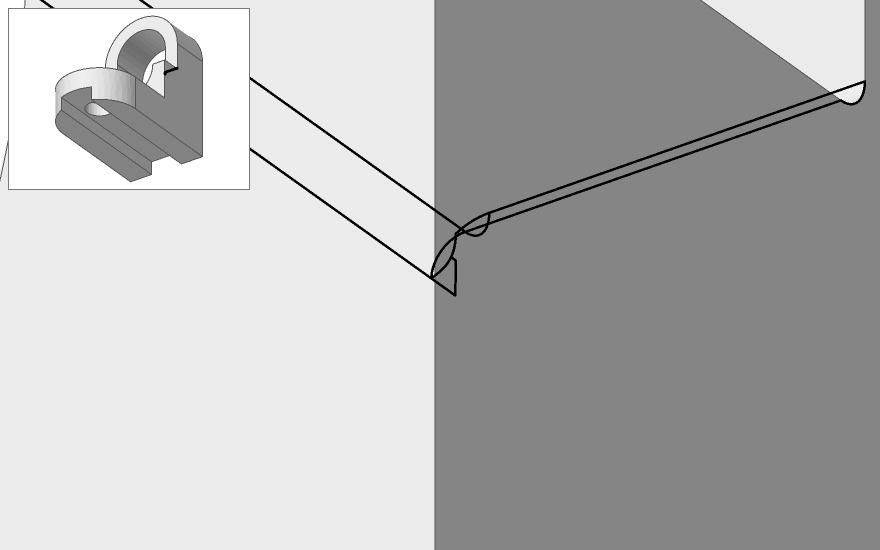 | 10876-fillet-ledge-convex-and-concave-edges-at-bore-r0-5the right ledge's two edges at its corner (12, 30, 33) rounded r 0.5 together: the convex edge where the ledge top meets the bore's round bottom (it runs on tangentially into the smooth edge between the bore's round bottom and its flat wall) and the concave edge where the ledge top meets the arch's front face, a mixed-convexity corner beside a curved face The two rounds meet at a corner of four edges where the convex round lies below the ledge top and the concave one above it, touching only at a point. The convex round goes first and the concave one rolls over its end on a torus; at the bore its end is capped across the seam between the bore's round bottom and its flat wall, in two faces split along the seam's line. | passes |
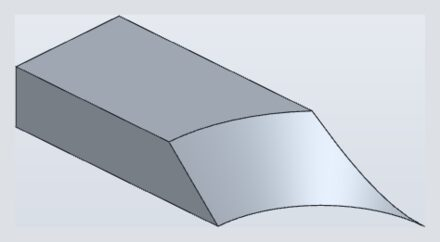 | 1113-chamfer-arc-top-edge-full-wall-heightthe top edge of #851's concave R21 wall chamfered 10, the wall's full height: its leg down the wall ends on the wall's bottom edge, using the wall up, and it builds | passes |
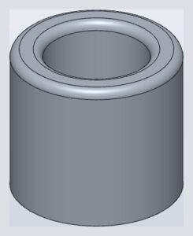 | 1191-fillet-both-rims-of-a-tube-topan R2 round on the outer and inner rim circles of a tube's top face (the report's ten picks on a ring-shaped top: the round failed after 0.10.1; rebuilt as a plain tube since the design is not in the report) | passes |
| no render | 11991-chamfer-cylinder-edge-ending-on-a-round-tangent-linethe chamfer twin of 11991-round-cylinder-edge-ending-on-a-round-tangent-line: a box 30 x 20 x 20 with its vertical edge at x = y = 0 rounded R5, joined with a half cylinder r2 along x (axis y = 0, z = 15, x 5..11) standing out of the front face y = 0; the cylinder's end x = 5 lies exactly on the line where the front face runs tangent into the R5 round. A 0.5 chamfer on the concave edge where the cylinder meets the front face (z = 13). Failed on 0.40.0-rc.2 with SMLib status 1001; builds on rc.3. | passes |
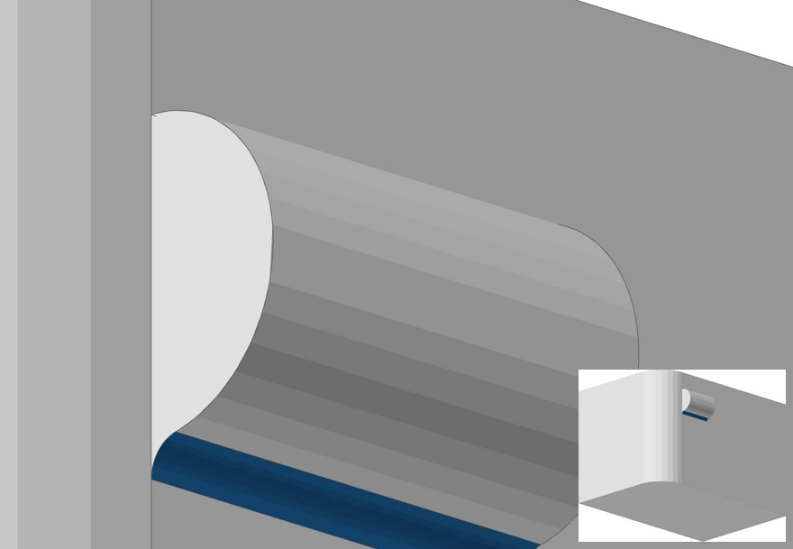 | 11991-round-cylinder-edge-ending-on-a-round-tangent-linea box 30 x 20 x 20 with its vertical edge at x = y = 0 rounded R5, joined with a half cylinder r2 along x (axis y = 0, z = 15, x 5..11) standing out of the front face y = 0; the cylinder's end x = 5 lies exactly on the line where the front face runs tangent into the R5 round. The concave edge where the cylinder meets the front face (z = 13) rounded 0.5 must give one closed solid, as it does at x = 5.001 or 6 the half cylinder's end sits on the line where the front face runs into the R5 round; the round of its foot runs the full 6 and ends on the end disc's plane, whose patch closes it against the R5 round | passes |
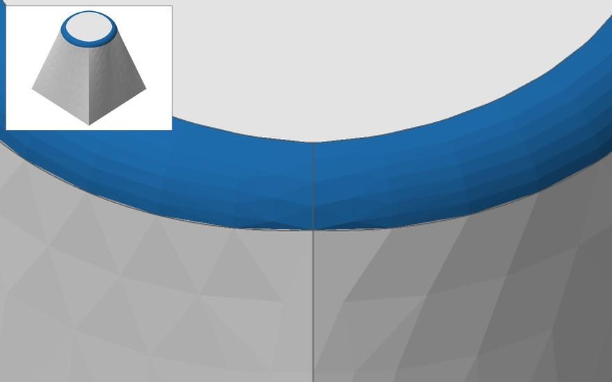 | 12034-round-loft-square-to-circle-circular-rima ruled loft (degree 1) from the square of side 30 at z = 0 (four lines) to the circle r10 at z = 30 (four quarter arcs centred on the square's sides' directions): six faces, the top a plane disc. Its circular top rim, the four arcs as one tangent chain, rounded R2 must give one closed solid the top disc's rim (highlighted) rounded R2: at each joint of its arcs the loft's side edge stands between the walls, tangent to them only at the joint, so the two rounds turn there, mitred on their crossing | passes |
| no render | 12060-chamfer-circular-shoulder-between-tangent-wallsA 17 mm high cylindrical boss of radius R = 3 mm shares the top of a 22 x 6 x 9 mm plate. The plate walls y = ±R both touch the boss at the bottom. An equal-distance 0.75 mm concave chamfer follows the whole circular shoulder. The chamfer runs out into both existing walls, which remain planar. | passes |
| no render | 12060-chamfer-closed-shoulder-at-tangent-seamA 17 mm high cylindrical boss of radius R = 3 mm shares the top of a 12 x 12 x 9 mm plate spanning -9 <= x <= 3 and |y| <= 6. Its only tangent wall is x = R, exactly at the cylinder seam, so the shoulder is one closed edge. The equal-distance 0.75 mm chamfer must run around the complete shoulder and terminate flush with that wall. | passes |
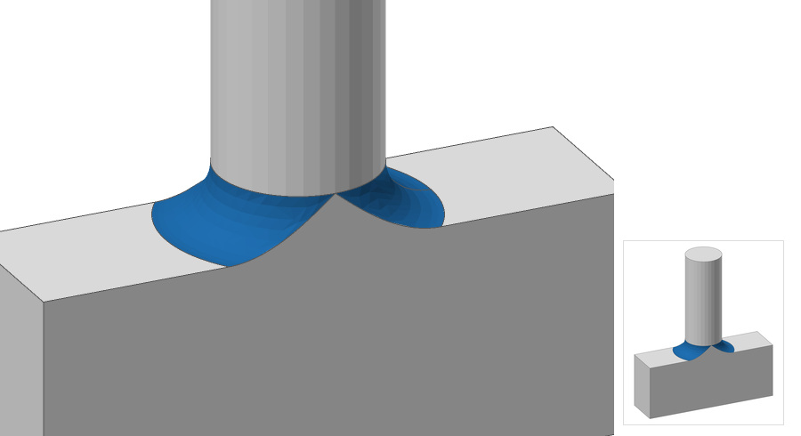 | 12060-round-circular-shoulder-between-tangent-wallsA cylindrical boss of radius 3 mm and height 17 mm sits on a 22 × 6 × 9 mm plate. Both plate side planes y = ±3 are tangent to its foot. The constant 2 mm round follows all three shoulder edges and ends flush with both planes. | passes |
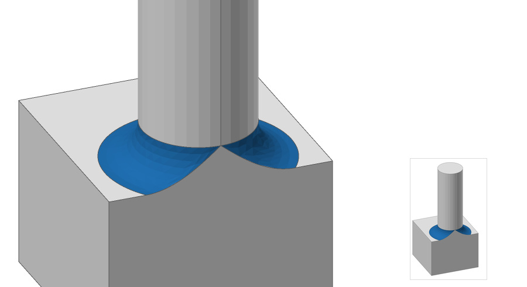 | 12060-round-closed-shoulder-at-tangent-seamA cylindrical boss of radius 3 mm and height 17 mm sits on a 12 × 12 × 9 mm plate spanning −9 ≤ x ≤ 3. The 2 mm round follows one closed edge whose seam is on the tangent plane x = 3. The round ends flush with that plane. | passes |
 | 1207-fillet-bar-top-edge-after-boss-arc-round-partial-chainafter the boss's partial base arc is rounded r2, the bar's top edge that runs into the round rounded r2 without its tangent chain | passes |
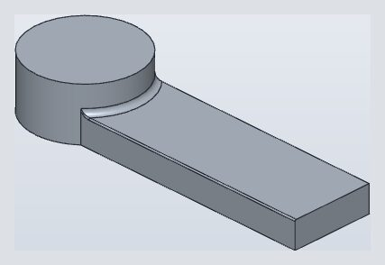 | 1207-fillet-bar-top-edge-after-boss-arc-round-r0-5after the boss's partial base arc is rounded r2, the bar's top edge that runs into the round rounded r0.5 | passes |
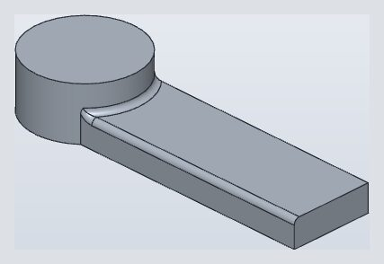 | 1207-fillet-bar-top-edge-after-boss-arc-roundafter the boss's partial base arc is rounded r2, the bar's top edge that runs into the round rounded r2 | passes |
1207-fillet-bar-top-edge-and-boss-arc-togetherthe bar's top edge and the partial base arc of a boss standing out over the bar's side, rounded r2 together: the corner patch where they meet must join the bar's round at least G1 (today a 15.6° crease) | passes | |
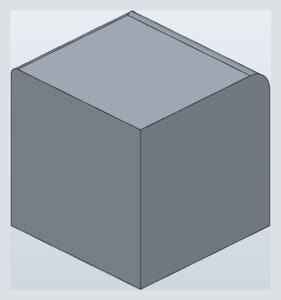 | 1207-fillet-box-end-edge-into-unblended-round-partial-chainan edge that runs on tangentially into a round left out of the blend (tangent chain off) is rounded on past the round's end arc until it leaves the material | passes |
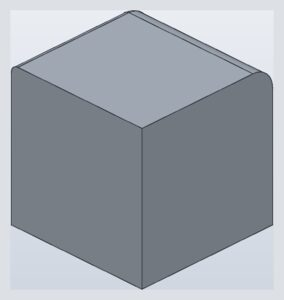 | 1207-fillet-box-end-edge-into-unblended-roundan edge that runs on tangentially into a round's end arc, its tangent chain rounded with it: the r1 round follows the end face's outline over the r3 round and down the back edge | passes |
1207-fillet-concave-arc-at-bossan R2 round on the concave arc where a bar top meets a boss that only partly sits on it | passes | |
1207-fillet-straight-edge-ending-on-bossan R2 round along the straight top edge of a bar that runs out against a cylindrical boss | passes | |
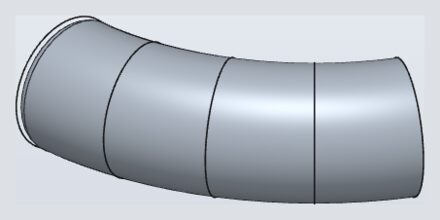 | 1213-round-end-circle-of-bent-tubean R3 round on the end circle of a lofted tube whose axis bends 60 degrees the tube's bent axis is a 60 degree torus section | passes |
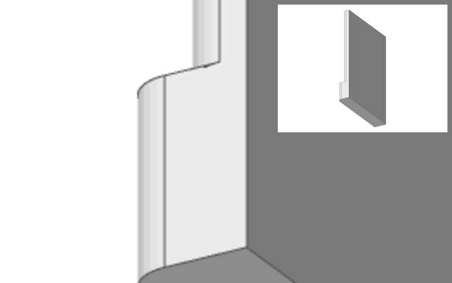 | 12342-round-wall-and-ledge-edges-r2-5an L body: a 4 mm wall (x 16..20, y -20..20, z -40..2) on a 7 mm base (x 16..23, z -50..-40), so the base stands 3 mm proud of the wall as a ledge at z = -40; the wall's outer vertical edge at x = 20, y = 20 and the ledge's at x = 23, y = 20, both convex edges between the back face y = 20 and the faces x = 20 and x = 23. Both edges rounded R2.5, a size that fits each: one closed solid (R3 the same), as each edge alone builds R2.5 fits each edge alone and the two together: the rounds end apart on the stepped back face | passes |
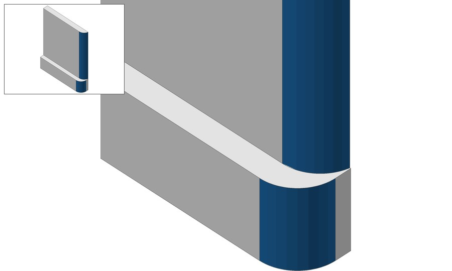 | 12342-round-wall-and-ledge-edges-r5-refusedan L body: a 4 mm wall (x 16..20, y -20..20, z -40..2) on a 7 mm base (x 16..23, z -50..-40), so the base stands 3 mm proud of the wall as a ledge at z = -40; the wall's outer vertical edge at x = 20, y = 20 and the ledge's at x = 23, y = 20, both convex edges between the back face y = 20 and the faces x = 20 and x = 23. Both edges rounded R5 (solidcraft#12342, case 2): the wall's round overflows the 4 mm wall and is trimmed at its crease with the wall's inner face; the ledge's runs past the 3 mm ledge under the wall, where the wall's round takes the material off above it. It failed with status 1001: of the wall's foot edge on the ledge's top, split by the ledge round's end arc after it was imprinted, the piece from the wall's rail to that arc was not taken for the imprint, and the trim took every face the wall's and the ledge's rounds R5 (highlighted): the wall's overflows the 4 mm wall and ends on a crease with its inner face x = 16; the ledge's runs past the 3 mm ledge under the wall's round | passes |
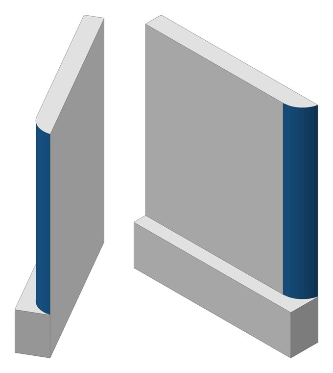 | 12342-round-wall-edge-r5-past-the-wall-refusedan L body: a 4 mm wall (x 16..20, y -20..20, z -40..2) on a 7 mm base (x 16..23, z -50..-40), so the base stands 3 mm proud of the wall as a ledge at z = -40; the wall's outer vertical edge at x = 20, y = 20 and the ledge's at x = 23, y = 20, both convex edges between the back face y = 20 and the faces x = 20 and x = 23. The wall's edge alone rounded R5, past the wall's 4 mm: the round overflows onto the wall's inner face and is trimmed at its crease there (solidcraft#12342; it failed with status 1001 at a corner whose extended edge ran off the back face's bounded plane) the wall's round R5 (highlighted) overflows the 4 mm wall: left, along the back face, its section ends on a crease with the wall's inner face x = 16; right, the whole part | passes |
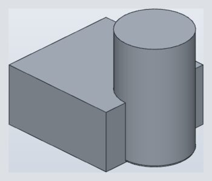 | 1262-fillet-boss-bottom-arca 0.8 mm round on the exposed half circle at the bottom of a cylindrical boss joined to a box side | passes |
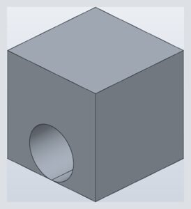 | 1390-chamfer-hole-rim-touching-bottoma 3 mm chamfer on the rim of a hole tangent to the bottom face is refused because the adjacent face narrows to a point where the rim touches the bottom edge (never material added below the part) | refused as expected the refusal names “narrows to a point” |
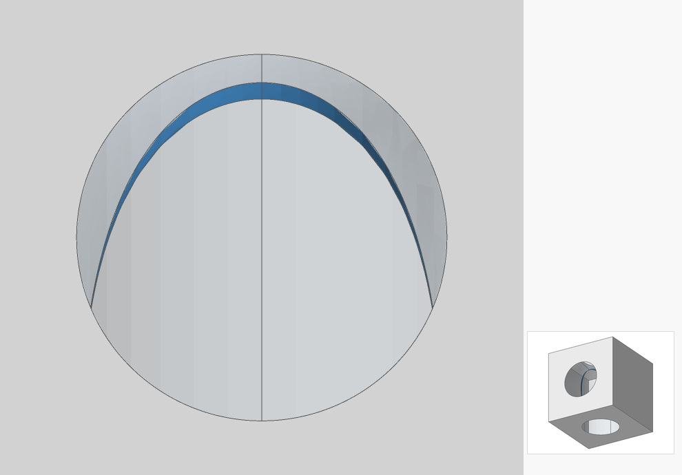 | 14283-chamfer-tangent-bore-edgesApply a 1 mm equal-distance chamfer to both curves where the cylindrical bore meets the revolved cut. The two rails share a point on the periodic seam and reach tangential ends. The pre-blend body is the only input record. | passes |
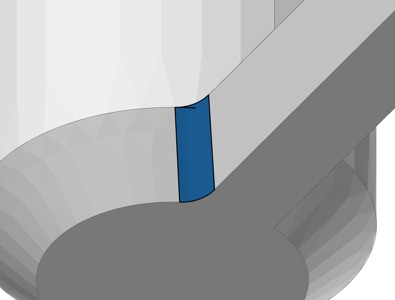 | 14755-round-between-cone-and-plane-chamfersa cylinder r22.5 from z = 0 to 30 about the z axis, joined with a bar (0 <= x <= 110, |y| <= 9, 0 <= z <= 7.5); the cylinder's bottom rim chamfered 7.5 (the cone rho = 15 + z up to z = 7.5), then the bar's two bottom long edges chamfered 7.5 up the wall at 30 degrees to it (the planes |y| = 9 - (7.5 - z)/sqrt 3). The concave edge where the cone meets the plane chamfer of the y < 0 side, from (14.2546, -4.6699, 0) to (20.6216, -9, 7.5), rounded R5 must give one closed solid, as it does at R4.5 and R8: the round ends on the bottom face's plane and on the bar's top face's plane, both at a slant to its sections the cone is kept as a B-spline arc round its axis; the section at the edge's lower end is solved on the cone itself, so the round reaches both its rails' ends on the bottom face's plane | passes |
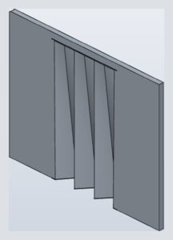 | 1488-fillet-slab-end-after-nudged-loft-joinan R1 fillet on the end edge of a 3.5 mm slab after a pleated loft was joined flush with its inner face (the join needs a tool retry; later fillets must still work) | passes |
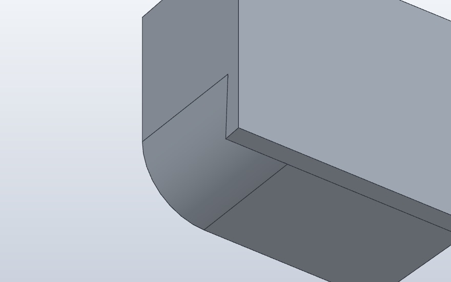 | 15437-fillet-round-ends-at-crease-beside-drafted-sidea round R2.6 on the long piece of a block's bottom side edge, ending at the 3 deg crease where the bottom changes plane, the side face beside it drafted 3 deg in plan; the short piece across the crease left sharp (an End at a smooth vertex beside a drafted face) the round ends at the crease vertex, its cap the plane through the vertex that holds the crease (the bottom's rail reaches its face's end there first), turned from square to the edge by the drafted side | passes |
15505-chamfer-end-cap-between-two-faces-of-one-cylindera 1 mm chamfer on the concave edge between a cone (z 1.5..3) and a plane through the Z axis; the edge's outer end lies on the wall where two faces of one cylinder (r 20.4 about Z) meet, at a seam across the chamfer's end. The chamfer must end on the cylinder, without a face of its own there the chamfer's outer end (highlighted), where the wall's two faces of one cylinder meet: the end lies on the cylinder, so no end face is made | passes | |
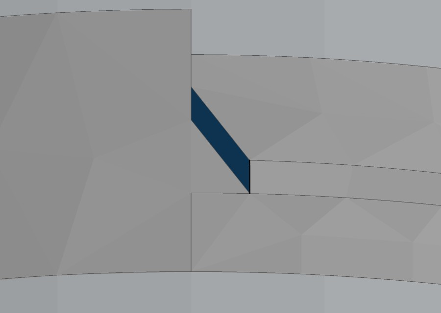 | 15505-chamfer-end-cap-on-one-cylinder-facethe same 1 mm chamfer where the wall at its outer end is a single face of the cylinder r 20.4 about Z: the chamfer must end on that face the chamfer's outer end (highlighted) on the one cylinder face of the wall | passes |
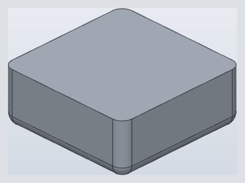 | 1557-fillet-vertical-corners-after-bottom-roundsvertical corner fillets R2 on a 25x25x10 box whose four bottom edges are already rounded R2 (the round meets the earlier mitre) | passes |
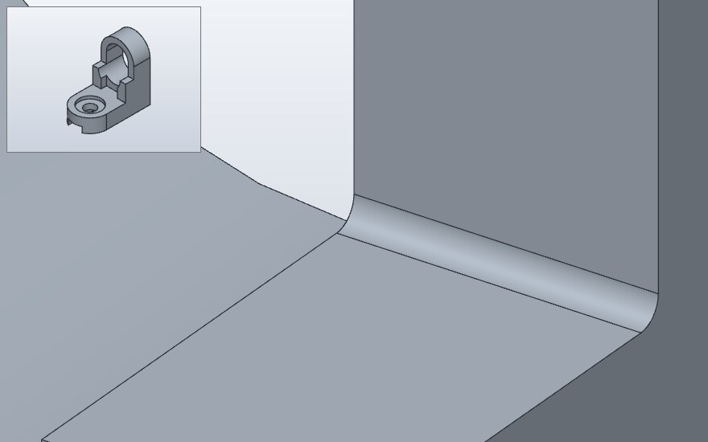 | 15768-fillet-ledge-concave-edge-beside-bore-mirror-r0-5the mirror image of the left ledge's concave edge: the right ledge's top meeting the arch's front face, x 12 to 18, rounded r 0.5; it builds as the left one must The mirror image of the left ledge's round: the same body by symmetry, so the same volume and counts. | passes |
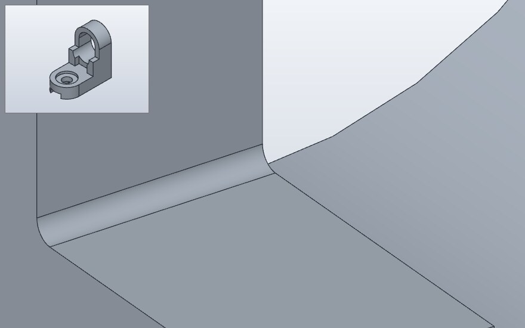 | 15768-fillet-ledge-concave-edge-beside-bore-r0-5the concave edge where the left ledge's top (z = 33) meets the arch's front face (y = 30), x -18 to -12, rounded r 0.5: the round ends on the bore, whose flat wall and round bottom meet tangentially at the edge's end The round's end on the bore lies beside two faces that meet tangentially there (the bore's flat wall and its round bottom). Its cap is on the flat wall's plane, which holds both side edges, as in the mirror image; the end face was picked as whichever side came first round the vertex, which on this side was the round bottom, and the body came out open. | passes |
15858-chamfer-spline-loft-larger-end-rimthe same loft between two fit-point spline sections (radius 15 and 20); the rim of the larger end chamfered 2 must give one closed solid of 4 faces | passes | |
15858-round-circle-loft-larger-end-rimcontrol: the loft between two true circles (radius 15 and 20), a cone frustum; the rim of the larger end rounded R2 gives one closed solid of 4 faces | passes | |
15858-round-loft-circle-to-ellipse-rim-normal-jump-7e-11a loft (ruled, degree 1) between two closed fit-point splines through 12 points each, a circle of radius 15 at x = -30 and an ellipse of half-axes 20 and 19.998 at x = 30. Each spline is 12 cubic Bezier pieces that join with one tangent direction; the ellipse's pieces join at unequal speeds and its tangents at the joints are not the circle's, so the loft face's normal turns by 7e-11 rad across its knot lines at u = 0.95 (from the control points: (1-u) a0 T0 + u a1 T1 against (1-u) b0 T0 + u b1 T1). The ellipse's rim, one closed edge, rounded R2 must give one closed solid of 4 faces | passes | |
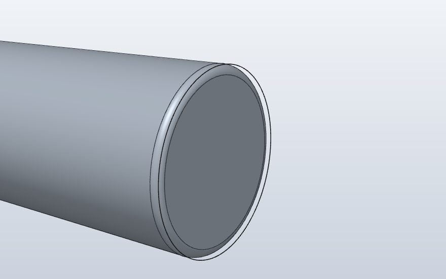 | 15858-round-loft-circle-to-ellipse-rim-normal-jump-7e-9a loft (ruled, degree 1) between two closed fit-point splines through 12 points each, a circle of radius 15 at x = -30 and an ellipse of half-axes 20 and 19.98 at x = 30. Each spline is 12 cubic Bezier pieces that join with one tangent direction; the ellipse's pieces join at unequal speeds and its tangents at the joints are not the circle's, so the loft face's normal turns by 7e-9 rad across its knot lines at u = 0.95 (from the control points: (1-u) a0 T0 + u a1 T1 against (1-u) b0 T0 + u b1 T1). The ellipse's rim, one closed edge, rounded R2 must give one closed solid of 4 faces | passes |
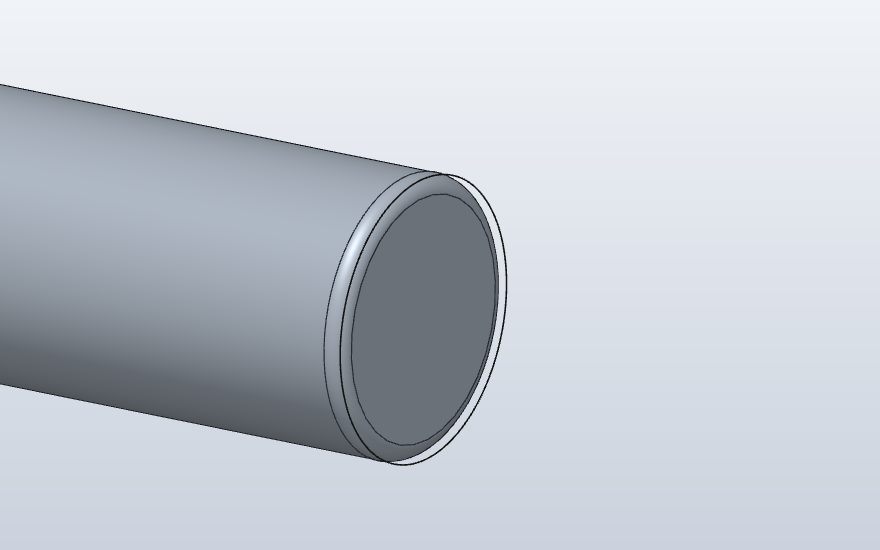 | 15858-round-spline-loft-equal-sections-rimcontrol: the same loft with both spline sections at radius 15, where the loft face's normal is the same on both sides of every knot line; the end rim rounded R2 gives one closed solid of 4 faces | passes |
15858-round-spline-loft-larger-end-rima loft (ruled, degree 1) between two closed fit-point splines through 12 points of a circle, radius 15 at x = -30 and radius 20 at x = 30, each spline given as 12 cubic Bezier pieces that join with one tangent direction and unequal speeds; the two sections' speed ratios at a joint differ, so the loft face's normal turns by 4.1e-10 rad across 8 of its 12 knot lines (worked out from the control points: (1-u) a0 T0 + u a1 T1 against (1-u) b0 T0 + u b1 T1). The rim of the larger end, one closed edge, rounded R2 must give one closed solid of 4 faces | passes | |
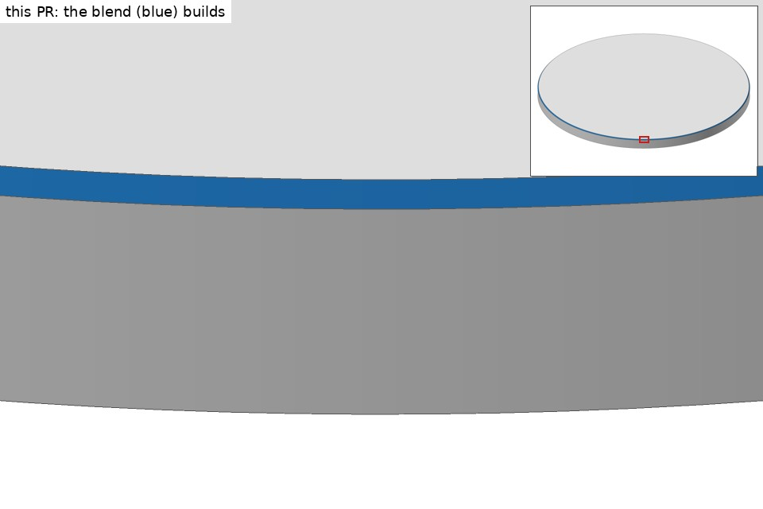 | 16019-chamfer-1-on-the-top-rim-of-a-cylinder-r125a 1 mm chamfer on the top rim of a cylinder r 125, h 12: narrower than about r / 40, it must build like a wider one | passes |
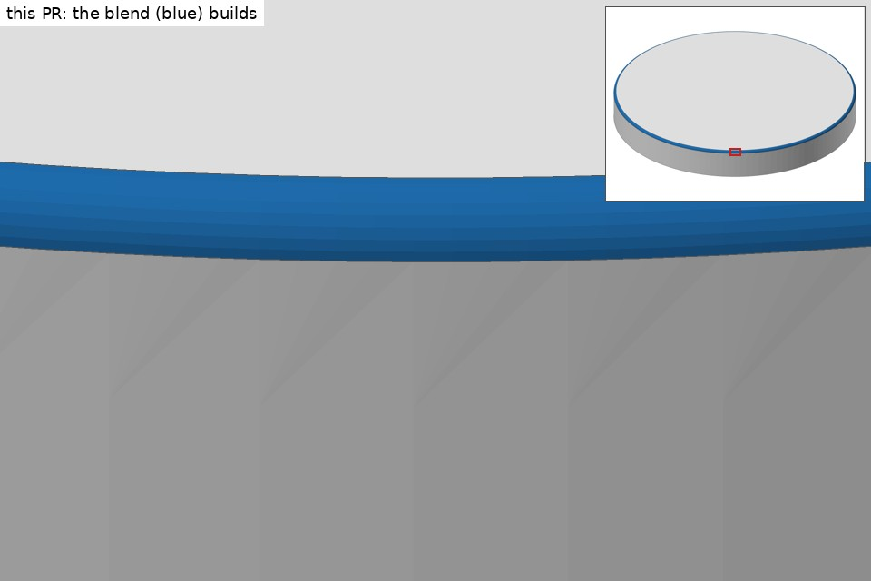 | 16019-fillet-1-on-the-top-rim-of-a-cylinder-r50a round of radius 1 on the top rim of a cylinder r 50, h 12: narrower than about r / 40, it must build like a wider one | passes |
| no render | 16654-fillet-drum-rim-beside-a-boss-flush-with-its-top-r0-5an R0.5 round on the top rim of a drum D100 x 40 (along z) that a boss R5.5 stands beside, its axis parallel to the drum's and 5 mm outside the drum's wall, from z = 28 up to the drum's top (the boss's top is the drum's top face carried on): the rim is the arc outside the boss, and the round's rail on the top face, a circle of radius 49.5, runs on across the boss's top where the rim has ended | passes |
| no render | 16654-fillet-drum-rim-under-a-box-standing-across-it-r4an R4 round on the rim of a drum R30 x 40 (along -y, the rim at y = -40) that a box stands across (x from -8 to 8, y from -60 to -20, z from 20 to 40): the round's rail on the end face, a circle of radius 26, leaves that face across one wall of the box, short of the rim's end there, and comes back across the other wall, at the rim's other end | passes |
| no render | 16654-fillet-drum-rim-under-a-tube-standing-across-it-r4an R4 round on the rim of a drum R30 x 40 (along -y, the rim at y = -40) that a tube R12 stands across, parallel to the drum's axis and centred on the rim (y from -20 to -60): the rim is the arc outside the tube, and the round's rail on the end face, a circle of radius 26, leaves that face across the tube's foot short of the rim's ends and comes back across it | passes |
| no render | 16654-fillet-equal-tube-tee-pinched-at-the-sides-r2an R2 round on the whole joint of a tee of two R15 tubes (one along y, one up z through its middle), whose faces touch tangentially at the joint's two side points (x = +-15, z = 0), where the round shrinks to nothing | passes |
| no render | 16654-fillet-tube-joint-across-a-chamfer-crease-r1a 1 mm round along a slanted tube's joint on a cylinder's side, where the joint runs on across the crease into a 10 mm top chamfer, builds as 1.5 mm does | passes |
| no render | 16654-fillet-tube-joint-through-its-cylinders-own-splits-r4a 4 mm round along the joint of two R15 cylinders whose axes cross at 60 degrees, where the tube's cylinder is split on its own surface through the joint's top point (a circle across it and its seam), builds instead of being refused as a corner no blend handles | passes |
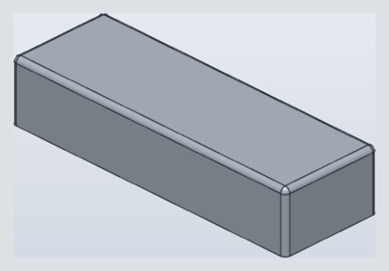 | 1667-fillet-rim-line-beside-quarter-turnsan R5 round of the top rim of a 297 mm long box whose corners are R5 (a 287 mm line beside 7.85 mm quarter turns) | passes |
1668-fillet-both-sides-of-thin-wall-r7R7 rounds of the outer top edge and the inside edge of a 2 mm wall in one fillet: the inside round holds the material the outer one runs over, so the wall stays closed | passes | |
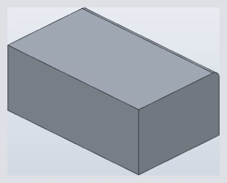 | 1668-fillet-both-sides-of-thin-wallan R5 round on an outer top edge and the matching inner (concave) edge of a 2 mm wall in one feature fits, as it does one after the other | passes |
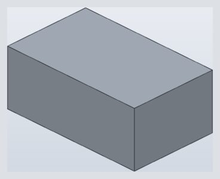 | 1668-fillet-outer-top-edge-of-thin-wall-r7-past-inside-corneran R7 round of the outer top edge of a 2 mm wall alone: past the sharp inside corner it would cut through the wall into the hollow, opening a slit along it, so it is refused, naming the largest radius that fits | refused as expected the refusal names “the largest radius that fits is 6.828 mm” |
| no render | 18823-chain-and-wall-window-s1p65-top5p1-d0p4-bands-apartissue 18823's part (a block with a 45 deg slope, a groove with r1 rounds and a slot slanted 65 deg in plan; see 18823-chamfer-slot-wall-edge-running-on-into-a-round) with a window 0.2 wide, 0.5 tall and 1.0 deep cut square into the slot's inner wall, centred 1.65 along the wall from its back corner (1.3115, -7.2811), its top edge at z = 5.1. A 0.4 chamfer on the wall's top edge, with its tangent chain, and on the window's top edge together. | passes |
| no render | 18823-chain-and-wall-window-s1p65-top5p15-d0p4-bands-apartissue 18823's part (a block with a 45 deg slope, a groove with r1 rounds and a slot slanted 65 deg in plan; see 18823-chamfer-slot-wall-edge-running-on-into-a-round) with a window 0.2 wide, 0.5 tall and 1.0 deep cut square into the slot's inner wall, centred 1.65 along the wall from its back corner (1.3115, -7.2811), its top edge at z = 5.15. A 0.4 chamfer on the wall's top edge, with its tangent chain, and on the window's top edge together. | passes |
| no render | 18823-chain-and-wall-window-s1p65-top5p2-d0p3881-bands-apartissue 18823's part (a block with a 45 deg slope, a groove with r1 rounds and a slot slanted 65 deg in plan; see 18823-chamfer-slot-wall-edge-running-on-into-a-round) with a window 0.2 wide, 0.5 tall and 1.0 deep cut square into the slot's inner wall, centred 1.65 along the wall from its back corner (1.3115, -7.2811), its top edge at z = 5.2. A 0.3881 chamfer on the wall's top edge, with its tangent chain, and on the window's top edge together. | passes |
| no render | 18823-chain-and-wall-window-s1p75-top5p05-d0p4-bands-apartissue 18823's part (a block with a 45 deg slope, a groove with r1 rounds and a slot slanted 65 deg in plan; see 18823-chamfer-slot-wall-edge-running-on-into-a-round) with a window 0.2 wide, 0.5 tall and 1.0 deep cut square into the slot's inner wall, centred 1.75 along the wall from its back corner (1.3115, -7.2811), its top edge at z = 5.05. A 0.4 chamfer on the wall's top edge, with its tangent chain, and on the window's top edge together. | passes |
| no render | 18823-chain-and-wall-window-s1p75-top5p1-d0p4-bands-overlap-refusedissue 18823's part (a block with a 45 deg slope, a groove with r1 rounds and a slot slanted 65 deg in plan; see 18823-chamfer-slot-wall-edge-running-on-into-a-round) with a window 0.2 wide, 0.5 tall and 1.0 deep cut square into the slot's inner wall, centred 1.75 along the wall from its back corner (1.3115, -7.2811), its top edge at z = 5.1. A 0.4 chamfer on the wall's top edge, with its tangent chain, and on the window's top edge together. | refused as expected |
| no render | 18823-chain-and-wall-window-s1p75-top5p15-d0p376-bands-apartissue 18823's part (a block with a 45 deg slope, a groove with r1 rounds and a slot slanted 65 deg in plan; see 18823-chamfer-slot-wall-edge-running-on-into-a-round) with a window 0.2 wide, 0.5 tall and 1.0 deep cut square into the slot's inner wall, centred 1.75 along the wall from its back corner (1.3115, -7.2811), its top edge at z = 5.15. A 0.376 chamfer on the wall's top edge, with its tangent chain, and on the window's top edge together. | passes |
| no render | 18823-chain-and-wall-window-s1p75-top5p2-d0p3557-bands-apartissue 18823's part (a block with a 45 deg slope, a groove with r1 rounds and a slot slanted 65 deg in plan; see 18823-chamfer-slot-wall-edge-running-on-into-a-round) with a window 0.2 wide, 0.5 tall and 1.0 deep cut square into the slot's inner wall, centred 1.75 along the wall from its back corner (1.3115, -7.2811), its top edge at z = 5.2. A 0.3557 chamfer on the wall's top edge, with its tangent chain, and on the window's top edge together. | passes |
| no render | 18823-chain-and-wall-window-s1p8-top5-d0p4-bands-apartissue 18823's part (a block with a 45 deg slope, a groove with r1 rounds and a slot slanted 65 deg in plan; see 18823-chamfer-slot-wall-edge-running-on-into-a-round) with a window 0.2 wide, 0.5 tall and 1.0 deep cut square into the slot's inner wall, centred 1.8 along the wall from its back corner (1.3115, -7.2811), its top edge at z = 5.0. A 0.4 chamfer on the wall's top edge, with its tangent chain, and on the window's top edge together. | passes |
| no render | 18823-chain-and-wall-window-s1p8-top5p05-d0p4-bands-overlap-refusedissue 18823's part (a block with a 45 deg slope, a groove with r1 rounds and a slot slanted 65 deg in plan; see 18823-chamfer-slot-wall-edge-running-on-into-a-round) with a window 0.2 wide, 0.5 tall and 1.0 deep cut square into the slot's inner wall, centred 1.8 along the wall from its back corner (1.3115, -7.2811), its top edge at z = 5.05. A 0.4 chamfer on the wall's top edge, with its tangent chain, and on the window's top edge together. | refused as expected |
| no render | 18823-chain-and-wall-window-s1p85-top4p95-d0p4-bands-apartissue 18823's part (a block with a 45 deg slope, a groove with r1 rounds and a slot slanted 65 deg in plan; see 18823-chamfer-slot-wall-edge-running-on-into-a-round) with a window 0.2 wide, 0.5 tall and 1.0 deep cut square into the slot's inner wall, centred 1.85 along the wall from its back corner (1.3115, -7.2811), its top edge at z = 4.95. A 0.4 chamfer on the wall's top edge, with its tangent chain, and on the window's top edge together. | passes |
| no render | 18823-chain-and-wall-window-s1p85-top5p1-d0p3616-bands-apartissue 18823's part (a block with a 45 deg slope, a groove with r1 rounds and a slot slanted 65 deg in plan; see 18823-chamfer-slot-wall-edge-running-on-into-a-round) with a window 0.2 wide, 0.5 tall and 1.0 deep cut square into the slot's inner wall, centred 1.85 along the wall from its back corner (1.3115, -7.2811), its top edge at z = 5.1. A 0.3616 chamfer on the wall's top edge, with its tangent chain, and on the window's top edge together. | passes |
| no render | 18823-chain-and-wall-window-s1p9-top4p95-d0p4-bands-apartissue 18823's part (a block with a 45 deg slope, a groove with r1 rounds and a slot slanted 65 deg in plan; see 18823-chamfer-slot-wall-edge-running-on-into-a-round) with a window 0.2 wide, 0.5 tall and 1.0 deep cut square into the slot's inner wall, centred 1.9 along the wall from its back corner (1.3115, -7.2811), its top edge at z = 4.95. A 0.4 chamfer on the wall's top edge, with its tangent chain, and on the window's top edge together. | passes |
| no render | 18823-chain-and-wall-window-s1p9-top4p98-d0p4-bands-overlap-refusedissue 18823's part (a block with a 45 deg slope, a groove with r1 rounds and a slot slanted 65 deg in plan; see 18823-chamfer-slot-wall-edge-running-on-into-a-round) with a window 0.2 wide, 0.5 tall and 1.0 deep cut square into the slot's inner wall, centred 1.9 along the wall from its back corner (1.3115, -7.2811), its top edge at z = 4.98. A 0.4 chamfer on the wall's top edge, with its tangent chain, and on the window's top edge together. | refused as expected |
| no render | 18823-chain-and-wall-window-s1p95-top4p95-d0p4-bands-overlap-refusedissue 18823's part (a block with a 45 deg slope, a groove with r1 rounds and a slot slanted 65 deg in plan; see 18823-chamfer-slot-wall-edge-running-on-into-a-round) with a window 0.2 wide, 0.5 tall and 1.0 deep cut square into the slot's inner wall, centred 1.95 along the wall from its back corner (1.3115, -7.2811), its top edge at z = 4.95. A 0.4 chamfer on the wall's top edge, with its tangent chain, and on the window's top edge together. | refused as expected |
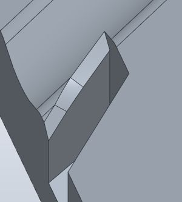 | 18823-chamfer-slot-wall-edge-running-on-into-a-rounda 20 mm block whose front half slopes up at 45 deg (profile (-10,0),(10,0),(10,15),(0,15),(-10,5) in (y,z), x -10..10); a groove down the middle of the slope (a cylinder r3 along the slope, its axis 2.5 above it) with both edges rounded r1; a slot with vertical walls, slanted 65 deg in plan (the parallelogram (3.2133,-11.3595),(5.0236,-11.3595),(3.1218,-7.2811),(1.3115,-7.2811), z 2 up), whose inner wall runs into the round and the groove. A 0.4 chamfer on the edge where the slot's inner wall meets the slope, with its tangent chain: that edge runs on tangentially into the wall's edges with the r1 round and with the groove. Refused on 0.44.0 as larger than its faces allow (largest 0.3703): the band check took the shared section where two of the chain's chamfers meet for the end of the first edge | passes |
190-fillet-disc-rim-past-its-2mm-wallan R2.5 round of the top rim of a disc R13 x 2: the round runs past the bottom of its 2 mm wall (a cliff) and is built as if the wall went on, cut by the bottom face | passes | |
190-fillet-rim-as-tall-as-wallan R2 round of the top edge of a disc 2 mm high (the round is as tall as the wall, so it meets the bottom face) | passes | |
193-paste-copies-the-filletsa block with two R2 top edges rounded, copied and pasted 40 mm over: the copy must carry its own fillets | passes | |
| no render | 19684-fillet-spline-rim-notched-at-its-seam-r0-12an R0.12 round on the top rim of a 2 mm extrusion of a closed periodic spline outline (fit through 8 points, its seam at (2, 0)), after a notch R0.145, 1 mm deep, is cut down from the top 0.00002 mm clear of the seam and a cross hole R0.24 along y runs under the top face: the notch takes the seam, so the rim is one spline edge most of the way round and the notch's arc, both between the same two vertices 0.29 mm apart. The round's trace runs round the closed outline from one end of the spline edge and its extension past the other end comes back onto its start; it keeps half of that run across the notch, measured from where the edge ends | passes |
1986-chamfer-arc-edge-of-joined-sectorsa 3 mm chamfer on the outer top arc of a 120 degree annular sector joined to a lower inner sector (the joined outer wall must not limit the chamfer) | passes | |
199-fillet-uses-up-end-facean R3 round on the four vertical edges of a 14x6x10 box: the two rounds on each 6 mm end face meet exactly (the face is used up) | passes | |
20421-round-ending-on-a-side-a-hair-inside-its-cylinders-tangent-planea cylinder of radius 12.5 and height 50 joined to a box 50 x 24.9999999 x 25 whose one side lies in the cylinder's tangent plane and whose other side is 1e-7 inside the tangent plane opposite, the join's seam there one line at the touch; a 2 mm round on the edge between the box's top and the cylinder, ending on both sides: one valid solid | passes | |
20450-two-chamfers-that-exactly-use-up-the-face-between-thema 10 x 40 x 8 block with a slot in each x side, its two +x rails 2 mm tall and cut back to x = 4.9, each rail's end face chamfered 1 mm on both long edges: the two chamfers of a rail meet exactly in the middle of its end face and use it up. The cuts leave one of those edges at z = 6.000000000000001, so one face is 2 mm tall only to the rounding of its own coordinates; one valid solid | passes | |
219-pattern-of-filleted-pocketsa plate with 6 pockets made by patterning one pocket and the R3.2 round of its four corner edges, the pocket height set by a parameter | passes | |
| no render | 22151-fillet-wing-cusps-tangent-chain-r2the right wing of a drafted plate (centre arc R25, wings R15 at x = +-45, tangent lines, extruded 20 at -2 deg) under a drafted boss whose foot circle is the centre arcs' top edge, its cone and the plate's centre-arc sides one face: its four top edges rounded r 2 as one tangent chain. Each straight edge runs tangentially into the boss's concave foot edge, so the top face narrows to zero width at two cusps, where the rounds meet as the blend corner's Roll-over (convex first, then the concave round with the lines' rounds' ends on the cone as one chain) | passes |
| no render | 22186-free-caps-on-a-through-openingA translated 70 by 52 by 49 mm rounded housing, cut through both openings; a single R2 leaves a free end patch at each opening. | passes |
| no render | 22186-inside-edge-at-rounded-pocket-openingA radius 2 mm along one concave edge of a 65 mm square pocket ending at the opening of a rounded 75 mm cube. | passes |
| no render | 22186-inside-round-in-a-hexagonal-socketA single R2 at the 120 degree inside corner of a regular hexagonal socket in a rounded hexagonal prism. | passes |
| no render | 22186-seven-inside-edges-at-a-pocket-openingR5 on four floor edges and three longitudinal edges of the 65 mm square pocket in the rounded block. | passes |
| no render | 22821-chamfer-concave-edge-ends-on-split-covea 2 mm chamfer on the concave edge between an upright's side and a 4 mm chamfer below it, both ends on a 5 mm cove split at the edge's height | passes |
| no render | 22821-round-concave-edge-ends-on-split-covea 3 mm round on the concave edge between an upright's side and a 4 mm chamfer below it, both ends on a 5 mm cove split at the edge's height | passes |
2341-pattern-of-chamfered-bossesa 2 x 2 grid made by a feature pattern of a boss and its two chamfers (a concave root chamfer and a convex tip chamfer) | passes | |
237-fillet-concave-edge-between-two-cylindersan R6 round on the vertical edge where two cylinder walls meet (the concave corner of two merged discs), the two walls meeting at an angle | passes | |
2498-fillet-tiny-end-edges-rounded-rectanglean R2 round of the top loop of a 26.4x8.6x8.4 rounded rectangle whose end edges are only 0.02 mm long (corner radius 4.29) | passes | |
2672-chamfer-one-pick-large-plateone pick on a stadium boss top rim chamfers the whole tangent loop, also when the part is more than 200 mm across | passes | |
2708-fillet-curvature-continuous-angled-endsa curvature-continuous (G2) fillet of size 5 on a straight edge that ends on two slanted planar faces | passes | |
2719-chamfer-as-wide-as-corner-rounda 1 mm chamfer round a bottom loop whose corners are R1 rounds: each corner cone closes to a point on the bottom face | passes | |
2752-fillet-rim-of-flat-cut-on-spherean R1 round round the rim of a radius-2 sphere cut flat at z=1 | passes | |
2797-chamfer-two-distances-circular-rima Two Distances chamfer (1 mm on the top face, 0.5 mm down the wall) on the circular rim between a plane and a cylinder | passes | |
2811-fillet-rib-rootsan R1.5 fillet of the 32 vertical root edges of 8 ribs between two walls of a grille tray (a performance case: the time must not blow up) | passes | |
2852-fillet-outer-round-concentric-with-inneran R18 round on the outside top edges of a 3 mm thick upside-down U, concentric with the R15 round of its inside edges | passes | |
2852-fillet-outer-round-r30-past-inner-round-refuseda 3 mm U shell (60 x 20 x 50) whose inside top edges are rounded R15: its outside edges rounded R30 would cross into the hollow and cut the top plate off the walls, so it is refused, naming the largest radius that fits | refused as expected the refusal names “the largest radius that fits is 25.2” | |
2893-chamfer-distance-and-angle-past-the-wall-refusedthe top rim of a cylinder r10 x 20 chamfered 2 across the top at 90.573 deg from it: refused at 90.573 degrees from the top the chamfer's line runs out through the wall: it meets the wall only below 90 degrees, pi less the wedge. The kernel refuses with the angle and that bound (BlendRefusal::ChamferAngleTooLarge). The picture is the operand the refusal leaves; the chamfer would run round its top rim. | refused as expected the refusal names “angle” | |
| no render | 2893-chamfer-two-distances-across-the-whole-top-is-a-conethe top rim of a cylinder r10 x 20 chamfered 10 across the top (the whole radius) and 3 down the wall: builds a cone to the centre | passes |
2893-chamfer-two-distances-elliptical-rima cylinder r5 tilted 26.6 deg from Z cut flat at z = 10, its elliptical rim chamfered 1 and 2: one closed valid solid the rim's two arcs are one chamfer, one pair of offsets measured at 86.4 deg, the narrowest wedge at which no station folds, so the sizes 1 and 2 hold only there: the wedge runs 63.4 to 116.6 deg round the rim, and the setbacks run 0.01 to 1.95 along the top and 1.73 to 2.61 down the wall, the chamfer all but gone on the top at the far tip. Setbacks that hold at every station are another definition (a follow-up) | passes | |
2893-chamfer-two-distances-past-the-bottomthe top rim of a cylinder r10 x 20 chamfered 2 across the top and 25 down a 20 mm wall: the leg down the wall runs 5 past the bottom rim, so it builds as if the wall went on and is cut by the bottom face, a cone frustum | passes | |
2893-chamfer-two-distances-past-the-top-refusedthe top rim of a cylinder r10 x 20 chamfered 12 across the top and 3 down the wall: refused | refused as expected the refusal names “larger than” | |
2903-edited-rim-chamfercentered70x50 extrusion at edited height33, four outer vertical R6 rounds before top-open inward shell2 (inner cornerR4), from typical/filleted-shelled-box; original height30 changes to33 while matrix blend size stays0.627; blend the complete eight-edge inner top rim from the first reported mirror, explicitly in the reproduced chain order. Direct original Body.record() JSON captured from public SolidCraft kernel APIs at application PR #12413 head 2e8847512baf43c91ab4e2c407750d6f896b6053 with solidcore9856ffee5. This is the geometry after rebuilding height33, not an engine timeline/reference-resolution replay and not an SMB re-export. V0=(70*50-4*A*6^2)*33-(66*46-4*A*4^2)*31, L=192+8*pi. There is no floor round. A=1-pi/4 and M=5/6-pi/4 are the unit round section area and first moment. Outward parallel contours have Jacobian1+kappa*u and total turning2*pi. For the top inner chamfer, subtract L*d^2/2+pi*d^3/3 (triangle area d^2/2 and moment d^3/6), at size0.627. Eight new strip faces, sixteen extra edges and eight extra vertices give counts(27, 64, 40); the existing annular top face remains annular. The whole inner top rim builds from the formerly refused corner. Projecting to another corner endpoint no longer reports a distant rail as overlapping its blend band. | passes | |
2903-edited-rim-roundcentered70x50 extrusion at edited height33, four outer vertical R6 rounds before top-open inward shell2 (inner cornerR4), from typical/filleted-shelled-box; original height30 changes to33 while matrix blend size stays0.627; blend the complete eight-edge inner top rim from the first reported mirror, explicitly in the reproduced chain order. Direct original Body.record() JSON captured from public SolidCraft kernel APIs at application PR #12413 head 2e8847512baf43c91ab4e2c407750d6f896b6053 with solidcore9856ffee5. This is the geometry after rebuilding height33, not an engine timeline/reference-resolution replay and not an SMB re-export. V0=(70*50-4*A*6^2)*33-(66*46-4*A*4^2)*31, L=192+8*pi. There is no floor round. A=1-pi/4 and M=5/6-pi/4 are the unit round section area and first moment. Outward parallel contours have Jacobian1+kappa*u and total turning2*pi. For the top inner round, subtract L*A*r^2+2*pi*M*r^3, at size0.627. Eight new strip faces, sixteen extra edges and eight extra vertices give counts(27, 64, 40); the existing annular top face remains annular. The whole inner top rim builds from the formerly refused corner. Projecting to another corner endpoint no longer reports a distant rail as overlapping its blend band. | passes | |
2903-original-rim-chamfer60x40x30 extrusion, top-open inward shell3, four outer vertical R6 rounds, four inner vertical R3 rounds, inner floor tangent-chain R1; blend the complete eight-edge inner top rim from the first reported mirror, explicitly in the reproduced chain order. Record re-exported through solidcraft_smlib::Brep::read(seed0-input.smb,true).to_native(); the SMB captured the exact pre-final operand built by public SolidCraft kernel APIs at application PR #12413 head 2e8847512baf43c91ab4e2c407750d6f896b6053 with solidcore9856ffee5. This re-exported representation itself reproduces the refusal; it is not a synthetic Ops reconstruction. V0=60*40*30-54*34*27-4*A*6^2*30+4*A*3^2*27+L*A-2*pi*M, L=152+6*pi. The floor adds L*A-2*pi*M on the inward side of the already rounded cavity contour. A=1-pi/4 and M=5/6-pi/4 are the unit round section area and first moment. Outward parallel contours have Jacobian1+kappa*u and total turning2*pi. For the top inner chamfer, subtract L*d^2/2+pi*d^3/3 (triangle area d^2/2 and moment d^3/6), at size0.47. Eight new strip faces, sixteen extra edges and eight extra vertices give counts(35, 80, 48); the existing annular top face remains annular. The whole inner top rim builds from the formerly refused corner. Projecting to another corner endpoint no longer reports a distant rail as overlapping its blend band. | passes | |
2903-original-rim-round60x40x30 extrusion, top-open inward shell3, four outer vertical R6 rounds, four inner vertical R3 rounds, inner floor tangent-chain R1; blend the complete eight-edge inner top rim from the first reported mirror, explicitly in the reproduced chain order. Record re-exported through solidcraft_smlib::Brep::read(seed0-input.smb,true).to_native(); the SMB captured the exact pre-final operand built by public SolidCraft kernel APIs at application PR #12413 head 2e8847512baf43c91ab4e2c407750d6f896b6053 with solidcore9856ffee5. This re-exported representation itself reproduces the refusal; it is not a synthetic Ops reconstruction. V0=60*40*30-54*34*27-4*A*6^2*30+4*A*3^2*27+L*A-2*pi*M, L=152+6*pi. The floor adds L*A-2*pi*M on the inward side of the already rounded cavity contour. A=1-pi/4 and M=5/6-pi/4 are the unit round section area and first moment. Outward parallel contours have Jacobian1+kappa*u and total turning2*pi. For the top inner round, subtract L*A*r^2+2*pi*M*r^3, at size0.47. Eight new strip faces, sixteen extra edges and eight extra vertices give counts(35, 80, 48); the existing annular top face remains annular. The whole inner top rim builds from the formerly refused corner. Projecting to another corner endpoint no longer reports a distant rail as overlapping its blend band. | passes | |
2907-chamfer-two-end-outlines-rounded-topa 1.5 mm chamfer of both end outlines (sides, top and the two top arcs) of a prism with rounded top corners, bottom edges left alone | passes | |
318-fillet-plate-top-outline-as-tall-as-walla 40 x 30 x 5 plate's whole top outline rounded R5, as tall as its walls: each round uses its wall up, the four mitred at the corners | passes | |
324-fillet-over-hole-cut-by-overlong-cylinder324-fillet-over-hole-overlap with the hole cut by a cylinder longer than the block (z -1 to 11), so the hole's wall is trimmed by both the top and the bottom face | passes | |
324-fillet-over-hole-overlapa 4 mm fillet on a top edge whose round overlaps the rim of a through hole (the hole breaks into the round) | passes | |
3276-chamfer-edge-of-1mm-protrusion-on-joined-lthree extrudes joined into an L-shaped body with a 1 mm protrusion, then a chamfer on the protrusion's outer edge (the report: the corners are no longer 90 degrees and the chamfer fails) | passes | |
334-fillet-top-outline-after-concave-roundsan R2 round on the whole top outline of two merged cylinders after their two concave vertical edges were rounded R5 | passes | |
3369-fillet-edge-ends-on-tangent-seaman R2 round on a straight edge whose ends sit on the tangent seam between a flat top and a rounded end | passes | |
3435-fillet-larger-than-top-ringa fillet of radius 6.9 on a cylinder rim whose flat top ring (round the joined boss) is only 4.3 mm wide must be refused, not grow the part | refused as expected the refusal names “larger than the faces beside its edges allow” | |
3655-chamfer-edge-order-boxa plain box with all 12 edges chamfered, the edges listed in an order that was refused | passes | |
3753-circular-pattern-of-hole-and-its-rim-chamfera circular pattern (6 copies about Y) of a through hole and the 1 mm chamfer on its rim (the report: the pattern is refused because the copied chamfer 'would grow the part'); rebuilt as a hole in a disc, the original design is not in the report | passes | |
3779-chamfer-all-spline-spansa 0.1 mm chamfer on all eight top-rim spans of a 20 x 20 pillow whose four sides are fit splines (two cubic spans each) | passes | |
3779-fillet-all-spline-spansa 0.1 mm fillet on all eight top-rim spans of a 20 x 20 pillow whose four sides are fit splines (two cubic spans each) | passes | |
3868-chamfer-concave-edge-adds-materiala chamfer of an inside (concave) edge fills the corner and adds material, one on the outside edge removes it | passes | |
4055-chamfer-bar-edge-over-joined-pina 3 mm chamfer on the bottom long edge of a bar joined on top of a pin, where the chamfer is wider than the 2 mm gap between that edge and the pin | passes | |
4101-chamfer-tapered-plug-cornersthe four edges of a block end face chamfered where the block sides are 1 degree off square: exact volume of the plane-clipped prism (the corner edges of about 0.0001 mm are real geometry) | passes | |
4141-fillet-corner-after-wedge-cut-beside-bsplinean R5 round on the corner edge left by a wedge cut through a body vertex next to a B-spline face | passes | |
4143-fillet-notch-rim-on-bspline-rampan R4 round on the rim of an R5 notch where its cylinder meets an extruded B-spline ramp, both ends running into a square wall | passes | |
4174-fillet-cylinder-base-arc-ending-at-block-edgethe concave arc where a cylinder (r10.5) stands on a block's top, its centre on the block's front edge so the arc runs out at the front face, filleted r2: refused ('each end of the edge must touch exactly one more face') | passes | |
4265-chamfers-meeting-on-a-face-as-tall-as-boththe top and bottom edges of a 5 mm tall face chamfered 2.5 mm each, so the two chamfers meet along the face's middle and use it up: truck refused it ('the blend is larger than the neighbouring faces'; the fillet worked) | passes | |
4332-two-distance-chamfer-of-spline-rima two-distance chamfer (1 mm across the top, 7 mm down the wall) round the top rim of a periodic fit-spline outline extruded 10: truck refused it ('loop edges must be lines or arcs'), though an equal chamfer of the same rim worked | passes | |
4365-fillet-top-outline-chain-ending-at-bossthe top outline of a 60x40 r10 rounded block filleted r2 along its tangent chain, where a boss (r10, 10 high) standing over a corner of the outline interrupts it: refused ('a vertex of the edge chain where other faces meet') | passes | |
4369-fillet-boss-base-arc-running-out-at-outer-wallthe concave arc where a boss (r10) stands on a rounded block, the boss overhanging the block's corner so the arc runs out at the outer wall, filleted r2: refused ('a vertex of the edge chain where other faces meet: only straight edges can be blended') | passes | |
4702-chamfer-slot-wall-edge-on-outer-cylindera disc (r16 x 5) with a radial slot cut 3.2 down (65..115 deg, r 10 out through the rim): the vertical edge where a slot wall meets the outer cylinder chamfered 0.4: refused ('both faces next to the edge must be planar') | passes | |
477-fillet-cube-corner-rounds-as-wide-as-faces-reduce-fitthe three edges at a 20 mm cube's corner rounded R20 with fit reduce: reduced to the largest that fits, just under 20 | passes | |
477-fillet-cube-corner-rounds-as-wide-as-faces-refusedthe three edges at a 20 mm cube's corner rounded R20, as wide as their faces: refused as too large, naming the largest radius that fits | refused as expected the refusal names “the largest radius that fits is” | |
4782-fillet-bar-edge-wider-than-both-facesthe long top edge of a 5x5 bar rounded r10, wider than both faces it rounds R10 consumes the original y=0 and z=5 supports of the 5x5 bar: their tangent seams no longer exist. The round crosses z=0 and y=5 with 120-degree outward-normal angles, as the end view shows. The rig grades each crossing seam and the sharp planar seam exactly once from their endpoints, normal dots, gap samples and independent tolerance cap. The remaining direct regression checks the unchanged operand and the round's procedural definition. No kernel geometry changed; the original G1 grading was inapplicable. | passes | |
4782-fillet-end-top-edge-half-the-wallthe top edge of a 10x10 box end rounded r5, half the wall | passes | |
4782-fillet-full-round-two-end-verticalsboth vertical edges of a 20 mm wide box end rounded r10, half the width: the rounds meet tangent and use up the end face (a full round) | passes | |
4782-fillet-two-end-verticals-past-a-full-round-reduce-fitboth vertical edges of a 15 mm wide box end rounded r10 with fit reduce: reduced to the full round, 7.5 | passes | |
4782-fillet-two-end-verticals-past-a-full-roundboth vertical edges of a 15 mm wide box end rounded r10, past the full round (7.5): refused naming the largest radius that fits, 7.5 | refused as expected the refusal names “the largest radius that fits is 7.5 mm” | |
485-fillet-d-prism-top-outline-arc-and-flatan R0.5 round on both top perimeter edges (the arc and the flat) of a D-shaped prism, the two edges meeting at sharp 90 degree corners | passes | |
4859-chamfer-inside-corner-of-thin-wall-ringan inside (concave) vertical corner of a 25x15 ring with a 2 mm wall, 10 high, chamfered 2 mm: truck refused it ('2 mm is too large for this chamfer: the result changes 108 mm3') | passes | |
4989-chamfer-top-edge-of-drafted-facethe top edge of a face drafted 10 deg (the front of a 40x30x20 block, neutral plane at its base), chamfered 2 mm: refused ('the blend is larger than the neighbouring faces; the largest radius that fits is 0.071 mm') | passes | |
5129-fillet-concave-edge-where-cylinder-meets-blockthe concave vertical edge where a taller cylinder (r8 x 15) meets a block's side (10 high), filleted r1: refused ('a vertex of the edge chain where other faces meet: both faces next to the edge must be planar'); it worked when both were the same height | passes | |
5157-chamfer-bottom-loop-of-box-with-rounded-cornersthe bottom loop of a 30x20x10 box whose vertical edges are rounded r4, chamfered 1 mm along its tangent chain: truck's corners bulged out instead of following the chamfer | passes | |
5158-fillet-adjacent-plate-edges-as-thick-as-platetwo adjacent top edges of a 2 mm plate (30x31, two O6.35 holes) filleted r2, the plate's own thickness; one hole comes within 1 mm of an edge: refused ('a fillet larger than the faces next to it; the largest radius that fits is 0.963 mm') | passes | |
5158-fillet-round-just-past-a-10mm-facea convex r10.01 round on an edge whose top face is 10 mm deep, 0.01 past it: it must build by subtraction (the round on the extended faces cut from the body), not be refused R10.01 is 0.01 deeper than the 10 mm top face, so the round uses the top face up: the bar keeps its front, back, bottom and ends, and the round runs from z = 9.99 on the front over to the back face. | passes | |
5181-two-distance-chamfer-runs-past-tapered-sidesa 220 x 11 two-distance chamfer along the bottom edge of a 23 mm plate 100 wide whose sides run straight for 85 mm and then taper to 61.4 at 222.5: it builds, the chamfer plane running on past the straight sides into the tapered ones, which it trims | passes | |
5236-fillet-cylinder-end-with-its-own-radiusthe end edge of a cylinder r10 filleted r10, making a hemispherical end: refused ('the blend is larger than a corner radius'); r 9.99 worked | passes | |
5300-fillet-tube-rim-as-wide-as-its-wallthe outer top edge of a tube with a 1 mm wall (r 9..10, 20 high) filleted 1 mm: the round spans the whole wall top and meets the inner wall at its edge; truck refused it | passes | |
556-fillet-edge-ending-on-curved-bossan R0.5 round on a single straight bottom edge of a box whose end runs out against a cylindrical boss wall | passes | |
5835-chamfer-sloped-basin-1-mm-rim-0-5-4-edgesall four of the top rim edges of a sloped basin whose walls slope unequally, its front rim 1 mm wide, chamfered 0.5: the chamfers meet in mitres at the rim's corners | passes | |
5835-chamfer-sloped-basin-1-mm-rim-2-two-edgesthe front and right top rim edges of a sloped basin with a 1 mm front rim chamfered 2: the front chamfer's leg runs off the rim over the slab's front face (a cliff), so they build as if the top went on, mitred at the rim's corner, and are cut by the front face | passes | |
5835-chamfer-sloped-basin-4-mm-rim-2-2-edgesthe front and right of the top rim edges of a sloped basin whose walls slope unequally, its front rim 4 mm wide, chamfered 2: the chamfers meet in mitres at the rim's corners | passes | |
783-fillet-pick-far-from-any-edge-refuseda fillet whose edge pick is 15 mm from the nearest edge must be refused, not applied to some other edge | refused as expected the refusal names “no edge at” | |
814-chamfer-hex-hole-cornersa 2 mm chamfer on the six vertical corners of a hexagonal hole: one bevel each, not a notch | passes | |
851-chamfer-arc-and-top-front-2on #851's knife-edge part (tessellation/1263): the arc's top edge and the top front edge together chamfered 2 | passes | |
851-chamfer-arc-top-edge-9-5the top edge of #851's concave R21 wall chamfered 9.5, just under its height | passes | |
851-chamfer-knife-edge-tip-2-box-less-cylinderthe knife edge where #851's concave R21 wall runs out tangent into the back face, chamfered 2, the part made as one box less the wall's cylinder: the plane through the contacts of the ball of radius 2 | passes | |
851-chamfer-knife-edge-tip-2-sketchedthe knife edge where #851's concave R21 wall runs out tangent into the back face, chamfered 2, the part drawn as one sketch and extruded (fillets/851's construction): the plane through the contacts of the ball of radius 2 | passes | |
851-chamfer-knife-edge-tip-5the knife edge where #851's concave R21 wall runs out tangent into the back face, chamfered 5: the plane through the contacts of the ball of radius 5 | passes | |
851-fillet-arc-and-uprighton #851's knife-edge part (tessellation/1263): the arc's top edge and the front upright at the arc, R2 together | passes | |
851-fillet-arc-then-top-fronton #851's knife-edge part (tessellation/1263): the arc's top edge R2, then the top front edge R2 as a fillet of its own the round along the arc round's end curve is the ball about (39.2538, -19, 8) touching front, top and wall, the shape and volume of the three edges rounded together (9524.343669 here, 9524.343665 together); on SMLib 5e8c9c1 it failed with status 1001. The edges drawn bold have tolerances above 1e-4 (up to 1.6e-4). | passes | |
851-fillet-arc-top-edge-9-5the top edge of #851's concave R21 wall rounded R 9.5, just under its height | passes | |
851-fillet-arc-top-edge-full-wall-heightthe top edge of #851's concave R21 wall rounded R10, its full height: the round uses the wall up, its contact the bottom arc | passes | |
851-fillet-knife-edge-tip-r2the knife edge where #851's concave R21 wall runs out tangent into the back face, rounded R2: the ball that fits 2 from both faces, 13 back from the tip | passes | |
851-fillet-three-edges-at-knife-edge-arc-cornerthree edges meeting at the front corner of a plate with a concave arc wall that runs out in a knife-edge tip: top front edge, arc top edge and front upright, R2 together | passes | |
851-fillet-top-front-and-arcon #851's knife-edge part (tessellation/1263): the top front edge and the arc's top edge, R2 together | passes | |
851-fillet-top-front-and-front-left-uprighton #851's knife-edge part (tessellation/1263): the top front edge and the front-left upright, R2 together | passes | |
851-fillet-top-front-and-uprighton #851's knife-edge part (tessellation/1263): the top front edge and the front upright at the arc, R2 together | passes | |
851-fillet-top-front-then-front-left-uprighton #851's knife-edge part (tessellation/1263): the top front edge R2, then the front-left upright R2 with its tangent chain: up the first round's end arc and along the left top edge | passes | |
851-fillet-top-front-then-uprighton #851's knife-edge part (tessellation/1263): the top front edge R2, then the front upright at the arc R2 as a fillet of its own the round along the first round's end curve is the ball about (39.2538, -19, 8) touching front, top and wall, the shape and volume of the three edges rounded together (9524.343665); on SMLib 5e8c9c1 it failed with status 1001. The edges drawn bold have tolerances above 1e-4 (up to 2.4e-4). | passes | |
854-fillet-revolved-disc-both-rims-full-rounda disc r15 x 5 revolved from a sketch, both rims rounded R2.5 in one fillet: a full round of its 5 mm wall (robustness seed 33) | passes | |
862-fillet-curvature-continuous-box-edgea curvature-continuous (G2) fillet of size 6 on one edge of a 20 mm cube | passes | |
896-fillet-smooth-seam-refuseda fillet picked on the seam where a rounded edge runs tangent into the flat top has no corner to round and is refused as an invalid pick | refused as expected the refusal names “is smooth” | |
 | 9-fillet-corner-curvature-with-reduce-fitthree r2 rounds at a box corner, curvature (g2) corner, fit reduce (the radius fits) | known failing solid.fillet builds corner: g2 with fit: exact only |
 | 9-fillet-corner-curvature-with-taper-fitthree r2 rounds at a box corner, curvature (g2) corner, fit taper (the radius fits) | known failing solid.fillet builds corner: g2 with fit: exact only |
9-fillet-corner-r5-curvature-default-setbackthree r5 rounds at a box corner with the curvature (g2) corner at its default setback 1.5 r: the corner patch meets the rounds and faces G2 clear of the vertices where the seams turn | passes | |
 | 9-fillet-corner-setback-1-5-not-past-r2-curvaturethree r2 rounds at a box corner, curvature (g2) corner, set back 1.5: not past where the rounds meet (r): refused | refused as expected the refusal names “the setback must be more than the radius (2 mm)” |
 | 9-fillet-corner-setback-1-5-not-past-r2-rollingthree r2 rounds at a box corner, rolling-ball corner, set back 1.5: not past where the rounds meet (r): refused | refused as expected the refusal names “the setback must be more than the radius (2 mm)” |
 | 9-fillet-corner-setback-2-not-past-r2-curvaturethree r2 rounds at a box corner, curvature (g2) corner, set back 2: not past where the rounds meet (r): refused | refused as expected the refusal names “the setback must be more than the radius (2 mm)” |
9-fillet-corner-setback-2-not-past-r2-rollingthree r2 rounds at a box corner, rolling-ball corner, set back 2: not past where the rounds meet (r): refused | refused as expected the refusal names “the setback must be more than the radius (2 mm)” | |
926-chamfer-top-edge-ending-on-boss-wall-above-itthe top edge x = 40, z = 20 of #556's box (40x40x20 joined with an R12 boss 40 high on its side) chamfered 0.8: it runs into the boss's wall, which rises above the box, and ends on it | passes | |
926-fillet-top-edge-ending-on-boss-wall-above-itthe top edge x = 40, z = 20 of #556's box (40x40x20 joined with an R12 boss 40 high on its side) rounded R 0.8: it runs into the boss's wall, which rises above the box, and ends on it | passes | |
| no render | chamfer-slot-back-wall-across-a-rounded-groove-0-2-fitsa block whose top slopes at 45 degrees, a shallow r3 groove down the slope with 1 mm rounds on its edges, and a square slot whose back wall (the plane y = -7.28) reaches from the flat slope across one round into the groove; the back wall's top edge, a tangent chain of a line, the round's curve and the groove's curve, chamfered 0.2: the 0.2 mm chamfer builds on main too, a control for the 0.4 mm chamfer, which main refuses | passes |
chamfer-slot-back-wall-across-a-rounded-groove-0-4a block whose top slopes at 45 degrees, a shallow r3 groove down the slope with 1 mm rounds on its edges, and a square slot whose back wall (the plane y = -7.28) reaches from the flat slope across one round into the groove; the back wall's top edge, a tangent chain of a line, the round's curve and the groove's curve, chamfered 0.4: the chamfer's ball (radius 0.966) nearly fills the 1 mm round, so the round's spine is an ellipse 0.07 across | passes | |
cov-chamfer-concave-edge-through-up-down-joined-squaresfour squares drawn edge to edge, three extruded 10 up and three 10 down and joined: the concave vertical edge at the centre of the down part chamfered 1, with its tangent chain, the up part's concave edge on the same line (action matrix (apps/solidcraft-cli/tests/action_matrix.rs): typical/up-down-join, Body1 F3:side:l12|F3:side:l5 edge.chamfer) | passes | |
cov-chamfer-outer-corner-edge-of-a-shelled-box-with-a-lipa vertical outer corner edge of an 80 x 50 x 30 box shelled 2 mm open at the top with a 1 x 2 lip raised on its rim, chamfered 3: wider than the wall but clear of the inside corner, its top end on the lip (action matrix (apps/solidcraft-cli/tests/action_matrix.rs): corpus/modern-plastic, Body1 F1:+y|F1:-x edge.chamfer) | passes | |
cov-fillet-arc-edge-on-an-oblique-cut-of-a-bara thin bar with a 3 mm concave arc in its profile, its end cut by a plane tilted 21 deg (examples/regressions/oblique_cut_of_cylinder): the edge where the arc's cylinder meets the cut (part of an ellipse) rounded R0.1 (action matrix (apps/solidcraft-cli/tests/action_matrix.rs): regressions/oblique_cut_of_cylinder, Tool F2:side:a1|F4:side:l1 edge.fillet) | passes | |
cov-fillet-exact-coaxial-cones-r2two coaxial frusta joined, R10 to 6 over z 0..8 and R6 to 1 over z 8..9: the convex circle between their cones rounded r2 | passes | |
cov-fillet-exact-cone-cylinder-sharing-a-ball-r1a cone (apex (0, 0, 10 sqrt 2), half-angle 45 deg) and a post R10 tilted 20 deg through the origin, both touching the ball R10 about the origin along circles that do not meet, joined: the concave edge where the cone leaves the post rounded r1 | passes | |
cov-fillet-exact-cylinders-touching-at-a-point-r1two pipes touching at one point (R10 about y = 0, z = -10 and R5 about x = 0, z = -5, both touching z = 0 at the origin from below), joined and cut at z = -2: the concave arc of their edge on the +y side, from (4, 6, -2) down through (0, 10, -10) to (-4, 6, -2), rounded r1 | passes | |
cov-fillet-exact-oblique-plane-cone-rim-r1-5a frustum R10 narrowing at 10 deg, cut by the plane z = 15 + 0.3 x: its elliptical top rim rounded r1.5 | passes | |
cov-fillet-exact-oblique-plane-cylinder-rim-r2a cylinder R10 cut by the plane z = 20 + x/2: its elliptical top rim rounded r2 | passes | |
cov-fillet-exact-sphere-coaxial-cone-r3a ball R10 and a frustum about z through its centre (R5 at z = 0 to R3 at z = 20) joined: the concave circle where the cone leaves the ball rounded r3 | passes | |
cov-fillet-exact-sphere-plane-rim-r2a ball R10 cut flat at z = 4: its rim rounded r2 | passes | |
cov-fillet-g2-corner-beside-a-cylinderthe corner of a half cylinder's top (the top's arc, its straight edge and the upright seam where the flat face meets the cylinder) filleted 2 as a curvature-continuous (G2) fillet | known failing step 6 (solid.fillet): the open setback corner is not a closed solid, as on SMLib d01d7b0 | |
cov-fillet-g2-five-edge-apex-cornerthe 5 slant edges of a 5-sided pyramid filleted 2 as a curvature-continuous (G2) fillet: a convex corner of 5 edges at the apex the default setback is shorter than where the rounds' contact lines meet (3.5056 mm from the apex); the corner should take a setback that works | known failing step 12 (solid.fillet): invalid input: the setback must be more than 3.5056 mm at the corner (-0.000, 0.000, 30.000): the rounds' contact lines meet 3 | |
cov-fillet-g2-four-edge-apex-cornerthe 4 slant edges of a 4-sided pyramid filleted 2 as a curvature-continuous (G2) fillet: a convex corner of 4 edges at the apex the default setback is shorter than where the rounds' contact lines meet (3.9027 mm from the apex); the corner should take a setback that works | known failing step 11 (solid.fillet): invalid input: the setback must be more than 3.9027 mm at the corner (0.000, 0.000, 30.000): the rounds' contact lines meet 3. | |
cov-fillet-g2-mixed-cornera step's corner (the concave step edge, the lower box's convex front top edge, the upper box's convex upright edge) filleted 2 as a curvature-continuous (G2) fillet the kernel's G2 setback fill at a corner of mixed convexity: finite spring curves on every face, the saddle's normal certified regular and to the material's side, the fill certified off the kept parts of the faces where a convex and a concave round meet | passes | |
cov-fillet-g2-oblique-three-edge-cornerthe three edges at a top corner of a block drafted 15 deg (an oblique convex corner) filleted 2 as a curvature-continuous (G2) fillet | known failing not run here: the corner is a blend_setback_open call, which the rig has not ported yet; it waits on that port and on the certified G2 corner fill | |
cov-fillet-g2-pocket-cornera pocket's corner (its two floor edges and the upright edge between them, all concave) filleted 2 as a curvature-continuous (G2) fillet the G2 corner patch meets the order-2 section's rounds only G1 at one face seam (its volume holds); the corner step rebuilds the patch | known failing continuity_order: G1 at one seam where the corner patch meets a contact face (g2 wanted), as on SMLib d01d7b0 (solidcore#2697) | |
cov-fillet-pocket-floor-round-corners-r3-chain-r1a pocket whose vertical corners are rounded R3 first, then its floor outline rounded R1 as one tangent chain: the round follows the corners round, a torus at each (no turn to choose) | passes | |
cov-fillet-section-chamfer-box-edge-3a box's top back edge chamfered 3: the chord between the faces' contact lines, a crease with each face | passes | |
cov-fillet-section-chamfer-pipe-on-plate-2the concave edge where a pipe dips into a plate chamfered 2: the chord between the contact lines on the plane and on the pipe | passes | |
cov-fillet-section-curvature-boss-root-r2a boss's root on a plate rounded curvature-continuous size 2: the order-2 section of the square corner turned about the boss's axis, a certified fit | passes | |
cov-fillet-section-curvature-box-edge-r3a box's top back edge rounded curvature-continuous size 3: the order-2 section meets each face with its curvature (0) and its third derivative (0), and not its fourth | passes | |
cov-fillet-section-curvature-pipe-on-plate-r2the concave edge where a pipe dips into a plate rounded curvature-continuous size 2: the order-2 section meets the plane G2 (curvature 0) and the pipe G3 (its curvature 1/10 and that curvature's rate, 0) The new view looks toward the pipe end at x = 60, showing the section and the smooth plane/pipe joins. The case grades continuity; shading alone does not prove it. The inset shows the whole part. | passes | |
cov-fillet-section-round-box-edge-r3a box's top back edge rounded r3: the ball's circle, tangent to each face with the curvature jumping by 1/3 | passes | |
cov-fillet-section-round-pipe-on-plate-r2the concave edge where a pipe dips into a plate rounded r2: the ball's circle (a cylinder along x), tangent to the plane and the pipe | passes | |
cov-fillet-tee-pipe-r8-into-pipe-r20-r3the saddle edge of a tee: a branch R8 standing on a pipe R20, rounded r3 | passes | |
cov-fillet-turn-mitre-boss-base-r1a square boss 10 x 10 x 5 on a plate, its base edges rounded R1, its vertical corners sharp: the default turn, Mitre: at each convex corner the two base rounds run on past it to the bisector plane and meet there | passes | |
cov-fillet-turn-mitre-pocket-floor-corners-r1a pocket 20 x 10 x 5 in a plate, its floor edges rounded R1 and its vertical corners left sharp: the default turn, Mitre: at each corner the two floor rounds run on to the corner's bisector plane and meet there | passes | |
cov-fillet-turn-swept-boss-base-r1the same boss's base rounds turned Swept: at each convex corner the section is revolved about the vertical corner edge through the corner's 90 degrees, a torus piece G1 to both rounds the boss's base rounded R1 all round: at each of its four corners the two straight rounds join through a quarter torus swept about the corner's vertical edge. | passes | |
cov-fillet-turn-swept-pocket-sharp-corner-refused-r1the same pocket's floor rounds asked to turn Swept at sharp concave corners: the ball cannot pass a concave corner rounded less than its radius, so it is refused, naming the corner radius that works the operand the refusal leaves: the pocket's vertical corner edges are sharp, so a swept turn at the floor corner (10, 20, 5) has no rounding to follow; that edge must first be rounded to at least radius 1. | refused as expected the refusal names “at least 1” | |
cov-fillet-variable-box-edge-1-to-5-on-its-conea variable round from r1 to r5 along a box's top back edge: the balls' envelope, a circular cone, not their great circles | passes | |
cov-junction-boss-tilt-00-root-roundcylinder R6 tilted 0 degrees joined into a plate, its root edge rounded 1.5 | passes | |
cov-junction-boss-tilt-20-root-roundcylinder R6 tilted 20 degrees joined into a plate, its root edge rounded 1.5 the wall rail would run over the bottom cap's rim, 0.17 above the plate on the -x side; SMLib failed it (status 1001) | refused as expected the refusal names “0.2625” | |
cov-junction-boss-tilt-40-root-roundcylinder R6 tilted 40 degrees joined into a plate, its root edge rounded 1.5 at each End the wall rail runs on past the seam's vertex to the bottom cap's rim, and the round ends flush with the cap's plane; SMLib refused it (status 1001) | passes | |
cov-junction-tee-equal-roundequal pipes R8 tee, rounded 1 the exact conic-pair round on one half ellipse: its two rails meet at the ellipses' crossings, where the pipes touch, and the round fades out there | passes | |
cov-junction-tee-oblique-roundpipe tee oblique: main R8, branch R5 offset 0 tilted 30, intersection rounded 1 | passes | |
cov-junction-tee-oblique-unequal-roundpipe tee oblique-unequal: main R8, branch R4 offset 1 tilted 45, intersection rounded 1 | passes | |
cov-junction-tee-offset-roundpipe tee offset: main R8, branch R5 offset 2 tilted 0, intersection rounded 1 | passes | |
cov-junction-tee-unequal-roundpipe tee unequal: main R8, branch R5 offset 0 tilted 0, intersection rounded 1 | passes | |
cov-junction-wedge-030-chamferprism over a 30 degree triangle, apex edge chamfer 2 | passes | |
cov-junction-wedge-030-roundprism over a 30 degree triangle, apex edge round 2 | passes | |
cov-junction-wedge-045-chamferprism over a 45 degree triangle, apex edge chamfer 2 | passes | |
cov-junction-wedge-045-roundprism over a 45 degree triangle, apex edge round 2 | passes | |
cov-junction-wedge-060-chamferprism over a 60 degree triangle, apex edge chamfer 2 | passes | |
cov-junction-wedge-060-roundprism over a 60 degree triangle, apex edge round 2 | passes | |
cov-junction-wedge-075-chamferprism over a 75 degree triangle, apex edge chamfer 2 | passes | |
cov-junction-wedge-075-roundprism over a 75 degree triangle, apex edge round 2 | passes | |
cov-junction-wedge-090-chamferprism over a 90 degree triangle, apex edge chamfer 2 | passes | |
cov-junction-wedge-090-roundprism over a 90 degree triangle, apex edge round 2 | passes | |
cov-junction-wedge-105-chamferprism over a 105 degree triangle, apex edge chamfer 2 | passes | |
cov-junction-wedge-105-roundprism over a 105 degree triangle, apex edge round 2 | passes | |
cov-junction-wedge-120-chamferprism over a 120 degree triangle, apex edge chamfer 2 | passes | |
cov-junction-wedge-120-roundprism over a 120 degree triangle, apex edge round 2 | passes | |
cov-junction-wedge-135-chamferprism over a 135 degree triangle, apex edge chamfer 2 | passes | |
cov-junction-wedge-135-roundprism over a 135 degree triangle, apex edge round 2 | passes | |
cov-junction-wedge-150-chamferprism over a 150 degree triangle, apex edge chamfer 2 | passes | |
cov-junction-wedge-150-roundprism over a 150 degree triangle, apex edge round 2 | passes | |
cov-junction-y-junction-120-roundthree pipes R4 at 120 degrees in a plane, their intersection edges rounded 1 a three-edge concave corner | known failing refused as on SMLib: the faces between the three intersection curves narrow to nothing at the two triple points, so the room check trips (the corner step) | |
every-block-cylinder-crease-block-top-edge-r2-curvaturea block's long top edge rounded curvature-continuous (Type: Curvature) size 2, running from its end face into the cylinder the block is joined to | passes | |
every-block-cylinder-crease-block-top-edge-r2-no-tangent-chaina block's long top edge rounded r2 (Tangent chain off), running from the block's end face into the cylinder the block is joined to | passes | |
every-block-cylinder-crease-concave-arc-r2the concave arc where a block's top meets the taller cylinder it is joined to, rounded r2, the block's sides meeting the wall at creases | passes | |
every-block-cylinder-crease-cylinder-top-rim-r2the top rim of a cylinder that a block is joined to, rounded r2 | passes | |
every-block-cylinder-crease-top-edge-after-arc-round-r1a block's concave arc at the cylinder it is joined to rounded r2, then the block's long top edge rounded r1, which ends on the arc's round | passes | |
every-block-cylinder-tangent-block-top-edge-r2-no-tangent-chainthe long top edge of a block as wide as the cylinder it is joined to, rounded r2 alone (Tangent chain off): it ends where it runs on tangentially into the concave arc at the wall | passes | |
every-block-cylinder-tangent-concave-arc-r2-no-tangent-chainthe concave half circle where a block as wide as the cylinder's diameter meets the cylinder's wall above its top, rounded r2 with its tangent chain: the half circle's pieces, ending where it runs on into the block's convex top-side edges | passes | |
every-block-cylinder-tangent-concave-arc-r2-partial-chainthe concave half circle where a block as wide as the cylinder's diameter meets the cylinder's wall above its top, rounded r2 alone (Tangent chain off) the arc where the block's top meets the cylinder, split by the cylinder's seam: one piece picked, the round runs on across the seam into the rest of the half circle (a seam is the surface's parameterisation, not a feature) and runs out to nothing at (0, +-10, 15), where the block's sides run tangent into the cylinder | passes | |
every-boss-root-round-r10-as-tall-as-bossthe root circle of a 10 mm tall boss rounded r10: the round uses up the boss's wall and meets its top face at its rim | passes | |
every-boss-root-round-r2the root circle of a cylindrical boss on a plate rounded r2 (a concave torus) | passes | |
every-boss-top-rim-r2the top rim of a cylindrical boss on a plate rounded r2 | passes | |
every-box-all-twelve-edges-r2all twelve edges of a box rounded r2 at once: the rounded box (twelve quarter cylinders, eight sphere octants) | passes | |
every-box-corner-three-edges-chamfer-2the three edges at one box corner chamfered 2 together: three planar chamfers meeting at one point | passes | |
every-box-corner-three-edges-r3-curvature-setback-3-5the three edges at one box corner rounded r3, Corners: Curvature set back 3.5, just past the radius: the smallest kind of setback that builds | passes | |
every-box-corner-three-edges-r3-curvature-setback-3-refusedthe three edges at one box corner rounded r3, Corners: Curvature set back exactly 3, the radius: refused, naming the least setback | refused as expected the refusal names “the setback must be more than the radius (3 mm)” | |
every-box-corner-three-edges-r3-tangentthe three edges at one corner of a box rounded r3 together, rolling-ball (Tangent) corner: three quarter-cylinder rounds and a sphere octant | passes | |
every-chamfer-box-edge-2a box's top front edge chamfered 2 | passes | |
every-chamfer-box-edge-two-distances-3-1-flippeda box's top front edge chamfered by two distances, flipped: 3 down the front and 1 along the top | passes | |
every-chamfer-box-edge-two-distances-3-1a box's top front edge chamfered by two distances: 3 along the top (the first face, the one facing up) and 1 down the front | passes | |
every-chamfer-pocket-rim-4-9-fitsa 5 mm deep pocket's rim edges chamfered 4.9: the legs stop 0.1 short of the floor, so it fits | passes | |
every-chamfer-pocket-rim-5-5-past-the-floora 5 mm deep pocket's rim edges chamfered 5.5: the legs run 0.5 past the walls' bottom, so it builds as if the walls went on below the floor, a groove 0.5 deep round the floor's edge | passes | |
every-chamfer-pocket-rim-5-full-deptha 5 mm deep pocket's rim edges chamfered 5: the legs use the whole walls, ending on the floor's edges, and it builds | passes | |
every-chamfer-pocket-rim-two-distances-2-1a rectangular pocket's rim edges chamfered by two distances: 2 along the top (facing up) and 1 down the walls | passes | |
 | every-fillet-after-fillet-curvature-front-then-side-r3-partial-chaina box's top front edge rounded curvature-continuous size 3, then the top side edge meeting it at the corner rounded the same way alone (Tangent chain off) | passes |
every-fillet-after-fillet-curvature-front-then-side-r3a box's top front edge rounded curvature-continuous size 3, then the top side edge meeting it at the corner rounded the same way with its tangent chain, which runs on round the first round's end curve: refused, the size 3 has no room there | refused as expected the refusal names “larger than the faces beside its edges allow” | |
every-fillet-after-fillet-front-r3-then-vertical-r2a box's top front edge rounded r3, then the vertical edge meeting it rounded r2: the smaller round runs on round the bigger round's end and along the top side edge | passes | |
every-fillet-after-fillet-front-then-vertical-r2a box's top front edge rounded r2, then the vertical edge meeting it at the corner rounded r2 (Tangent chain on) | passes | |
every-fillet-after-fillet-vertical-then-front-r2a box's vertical edge rounded r2, then the top front edge meeting it at the corner rounded r2 (Tangent chain on) | passes | |
every-hole-both-rims-chamfer-1both rims of a hole through a plate chamfered 1 in one chamfer | passes | |
every-hole-both-rims-r1both rims of a hole through a plate rounded r1 in one fillet | passes | |
every-hole-top-rim-chamfer-10-full-depththe top rim of a hole through a 10 mm plate chamfered 10: its leg uses the hole's whole wall, ending on the bottom rim, and it builds (a cone from the top to the bottom rim) | passes | |
every-hole-top-rim-chamfer-9-9-fitsthe top rim of a hole through a 10 mm plate chamfered 9.9: its leg down the hole's wall stops 0.1 short of the bottom, so it fits | passes | |
every-hole-top-rim-r1-curvaturethe top rim of a hole through a plate rounded curvature-continuous (Type: Curvature) size 1 | passes | |
 | every-hole-top-rim-r1the top rim of a hole through a plate rounded r1 | passes |
every-hole-top-rim-r10-as-deep-as-platethe top rim of a hole through a 10 mm plate rounded r10: the round uses up the hole's wall and meets the bottom face at the bottom rim | passes | |
every-hole-top-rim-r12-past-plate-bottomthe top rim of a hole through a 10 mm plate rounded r12: the round runs past the wall on its tangent side, so it is built by subtraction and trims the bottom face round the hole | passes | |
every-l-bracket-both-bends-r3-r8-concentrican L-bracket's inside bend rounded r3, then its outside bend r8 = 3 + its thickness: concentric rounds, a bend of even thickness | passes | |
every-l-bracket-front-inner-outline-after-bend-round-r1an L-bracket's inside bend rounded r3, then the front edge of its upright's inner face rounded r1: the round runs on along the bend round's front arc and the foot's front top edge | passes | |
every-l-bracket-inside-bend-r3-curvaturean L-bracket's inside bend rounded curvature-continuous (Type: Curvature) size 3 | passes | |
every-l-bracket-inside-bend-r3the inside bend of an L-bracket rounded r3 | passes | |
every-l-bracket-inside-bend-r35-uses-both-facesan L-bracket's inside bend rounded r35, exactly as long as both inside faces: the round uses them up and meets the legs' ends at their edges | passes | |
every-l-bracket-inside-bend-r36-refusedan L-bracket's inside bend rounded r36, past both inside faces (35 long): refused, naming the largest radius that fits | refused as expected the refusal names “the largest radius that fits is 35 mm” | |
every-l-bracket-outside-bend-r5the outside bend of an L-bracket rounded r5 | passes | |
every-pocket-floor-and-rim-edges-r2a rectangular pocket's floor edges and rim edges rounded r2 in one fillet (5 mm walls: 1 mm of flat wall left between them) | passes | |
every-pocket-floor-edges-r2the four floor edges of a rectangular pocket rounded r2 (concave), the pocket's vertical corners left sharp | passes | |
every-pocket-rim-edges-r2the four rim edges of a rectangular pocket rounded r2 (convex edges meeting at the pocket's concave corners) | passes | |
every-pocket-rim-edges-r5-as-deep-as-pocketa 5 mm deep pocket's rim edges rounded r5: the rounds use up the walls and meet the floor where the walls met it | passes | |
| no render | report-chamfer-inside-corner-ending-on-covesa 1 mm chamfer of the inside corner where an upright meets a ledge whose ends fall away into narrow coves runs the ledge's whole length | passes |
| no render | report-chamfer-slanted-side-front-upright-cornerreported in the app: a 1 mm chamfer on the short edge between a block's slanted front side and its 4 mm top chamfer, the edge ending at the corner where an upright standing on the block meets both; the slanted side's top edge runs on under the upright's front face (convex), so the chamfer's rail there crossed it past the upright's side: 'SMLib failed (status 1005)', a result not closed | passes |
| no render | report-chamfer-slanted-side-into-upright-cornerreported in the app: a 1 mm chamfer on the short edge between a block's overhanging slanted side and its 4 mm top chamfer, the edge ending at the corner where an upright standing on the block meets both: 'Fillet Corner Error: Unable to Make Topology' | passes |
| no render | report-chamfer-wider-than-a-round-the-edge-ends-onreported in the app: a 1.9 mm chamfer on the straight top edge at the end of a block whose slanted sides end at the top in a 5 mm cove (front) and a 5 mm round (back), each cut off by the top 0.894 mm above where it starts, so the chamfer is wider than the round and the cove it ends on: 'the chamfer is larger than the faces beside its edges allow; the largest distance that fits is 0.894 mm' | passes |
report-drafted-peg-front-and-concave-rounds-together-r2as report-peg-front-and-concave-rounds-together-r2 on the drafted peg, whose front face runs tangent into a cone the Mixed corner, where the seam's line runs on past the vertex as an edge of the cone, split along its generator through x = 40 | passes | |
report-drafted-peg-front-round-r2the drafted peg's front top edge rounded r2: the round runs into the cone its drafted front face runs tangent into; reported from the app (2026-10-30, test-peg part), drafted | passes | |
 | report-fillet-bar-top-edge-running-tangent-into-cylinderan r2 round of a bar's top edge whose side runs tangent into a cylinder: the round seemed to build but its body could not be measured or changed (SMLib refused the cylinder's wall coming back as a cylinder over more than a turn); reported from the app (2026-10-30, test-peg part) | passes |
report-fillet-concave-arc-and-front-top-edge-together-r5-solver-residuesas report-fillet-concave-arc-and-front-top-edge-together-solver-residues, at r5: the corner patch stands out of the bar's front face (known limit past r4); reported from the app (2026-10-30, test-peg part) the solver-residue peg (front face at y = 0.0579) at R5: the front top edge's round touches the front at z = 5, and it turns into the arc's round at x = 41.65. | passes | |
report-fillet-concave-arc-and-front-top-edge-together-r7-solver-residuesas report-fillet-concave-arc-and-front-top-edge-together-solver-residues, at r7: the corner patch stands out of the bar's front face (known limit past r4); reported from the app (2026-10-30, test-peg part) the solver-residue peg (front face at y = 0.0579) at R7: the front top edge's round reaches down the front to z = 3 and 7 back over the 16 mm top, and it turns into the arc's round at x = 41.65. | passes | |
report-fillet-concave-arc-and-front-top-edge-together-solver-residuesas report-fillet-concave-arc-bar-top-into-cylinder-solver-residues, the concave arc and the bar's front top edge rounded r2 together (Constant, Tangent chain on): the corner patch where the two rounds meet stood up to 0.037 out of the bar's front face, a lip beside the line where the front face runs tangent into the cylinder; reported from the app (2026-10-30, test-peg part) the peg as the app's sketch solver left it: its front face lies at y = 0.0579, not 0, and runs tangent into the cylinder at x = 41.65, where the two R2 rounds turn into each other; the front one touches the front at z = 8. | passes | |
report-fillet-concave-arc-bar-top-into-cylinder-solver-residuesas report-fillet-concave-arc-bar-top-into-cylinder, with the sketch solver's residues of the reported design: SMLib's Nx1 corner fails (status 1001); reported from the app (2026-10-30, test-peg part) | passes | |
report-fillet-concave-arc-bar-top-into-cylinderan r2 round of the concave arc where a bar's top meets a cylinder its sides run tangent into; reported from the app (2026-10-30, test-peg part) | passes | |
report-fillet-corner-after-round-running-into-cylinder-solver-residuesas report-fillet-corner-after-round-running-into-cylinder, with the sketch solver's residues of the reported design; reported from the app (2026-10-30, test-peg part) | passes | |
report-fillet-corner-after-round-running-into-cylinderafter the round of a bar's top edge running into a cylinder, r2 rounds of the three edges at the bar's other top corner (the vertical edge, the left top edge and the round's end arc): 'one of its freeform faces can't be used'; reported from the app (2026-10-30, test-peg part) | passes | |
report-fillet-curvature-three-edges-at-bar-corner-solver-residues-outside-setbackreport-fillet-curvature-three-edges-at-bar-corner-solver-residues less its setback cube: the three curvature rounds outside it, exactly; reported from the app (2026-10-30, test-peg part) | passes | |
report-fillet-curvature-three-edges-at-bar-corner-solver-residuesas report-fillet-curvature-three-edges-at-bar-corner, with the sketch solver's residues of the reported design; reported from the app (2026-10-30, test-peg part) the G2 corner patch meets the order-2 section's rounds only G1 at one face seam (its volume holds); the corner step rebuilds the patch | known failing continuity_order: G1 at one seam where the corner patch meets a contact face (g2 wanted), as on SMLib d01d7b0 (see KNOWN_FAILING) (solidcore#2697) | |
report-fillet-curvature-three-edges-at-bar-cornera curvature-continuous fillet (equivalent radius 2) of the three edges at a top corner of a bar whose far end runs tangent into a cylinder: it built with SMLib's own corner patch, tangent to the rounds only (a 35.8 / mm curvature jump), seen as a dome on the corner; the corner must be a G2 patch; reported from the app (2026-10-30, test-peg part) the G2 corner patch meets the order-2 section's rounds only G1 at one face seam (its volume holds); the corner step rebuilds the patch | known failing continuity_order: G1 at one seam where the corner patch meets a contact face (g2 wanted), as on SMLib d01d7b0 (see KNOWN_FAILING) (solidcore#2697) | |
report-fillet-edge-tangent-at-one-end-into-cylinderafter the round of a bar's top edge running into a cylinder, an r2 round of the edge where that round meets the cylinder's wall (tangent at its lower end only, a crease elsewhere) with its tangent chain (the concave arc of the top): it was refused as a smooth edge; reported from the app (2026-10-30, test-peg part) | passes | |
report-fillet-g2-corner-of-bar-running-into-cylinder-outside-setbackreport-fillet-g2-corner-of-bar-running-into-cylinder less its setback cube: the three rounds outside it, exactly; reported from the app (2026-10-30, test-peg part) | passes | |
report-fillet-g2-corner-of-bar-running-into-cylinderthree r2 rounds at a top corner of a bar whose far end runs tangent into a cylinder, with the curvature (g2) corner set back 3: SMLib refused the result coming back (a cylinder over more than a turn); reported from the app (2026-10-30, test-peg part) | passes | |
report-peg-concave-chamfer-d2the peg's concave arc where its top meets the cylinder alone chamfered 2: the chamfer's cone runs out over the front top edge at both ends, past the point where the front face runs tangent into the cylinder; reported from the app (2026-10-30, test-peg part) | passes | |
report-peg-concave-round-r3-then-front-round-r1-5as report-peg-concave-round-then-front-round-r2 with unequal radii: the concave arc r3, then the front top edge r1.5 | passes | |
report-peg-concave-round-then-front-round-r2the peg's concave arc where its top meets the cylinder rounded r2, then its front top edge r2: the second round's tangent chain runs on up the front face's edge with the first round, to the point where that edge is tangent to the cylinder and the round must fade to nothing; reported from the app (2026-10-30, test-peg part) | passes | |
report-peg-front-and-concave-chamfers-together-d2the peg's front top edge and its concave arc chamfered 2 together, the convex and the concave chamfer meeting where the front face runs tangent into the cylinder; reported from the app (2026-10-30, test-peg part) | known failing the rig's volume is the body whose Mixed chamfer face, the bilinear Coons patch, stood 7.2e-4 out of the front face y = 0; that face now stays behind the plane, 0.0777 mm^3 less, and the corner has no closed form to grade a volume against | |
 | report-peg-front-and-concave-rounds-together-r2the peg's front top edge (convex) and the concave arc where its top meets the cylinder, rounded r2 together: the two edges are tangent where they meet, at the point where the front face runs tangent into the cylinder, and the corner patch there stood out of the front face; reported from the app (2026-10-30, test-peg part) R2 on both edges: the front top edge's round touches the front at z = 8 and the top at y = 2; the arc's round touches the top 2 out from the cylinder and the wall up to z = 12. The two turn into each other at x = 40, where the front face runs tangent into the cylinder. | passes |
report-peg-front-and-concave-rounds-together-r5the peg's front top edge (convex) and the concave arc where its top meets the cylinder, rounded r5 together: the two edges are tangent where they meet, at the point where the front face runs tangent into the cylinder, and the corner patch there stood out of the front face; reported from the app (2026-10-30, test-peg part) R5, half the bar's height: the front top edge's round touches the front at z = 5 and the top at y = 5; the arc's round touches the top 5 out from the cylinder and the wall up to z = 15. They turn into each other at x = 40, as at R2, over a wider corner. | passes | |
report-peg-front-chamfer-d1-then-concave-chamfer-d2the peg's front top edge chamfered 1, then its concave arc chamfered 2: the second chamfer's chain runs on down the first chamfer's end on the cylinder, which leaves the front face tangentially; reported from the app (2026-10-30, test-peg part) | passes | |
report-peg-front-chamfer-d2the peg's front top edge alone chamfered 2 into the cylinder: the chamfer's end on the cylinder's wall leaves the front face's contact line tangentially (a zero-angle corner of the chamfer face) where the front face runs tangent into the cylinder; reported from the app (2026-10-30, test-peg part) | passes | |
report-peg-front-curvature-round-r2the peg's front top edge alone given a curvature-continuous round (equivalent radius 2) running into the cylinder: its section leaves the front face with zero curvature, so its end on the cylinder's wall is a semicubical cusp (x - 40 ~ (8 - z)^1.5) where the front face runs tangent into the cylinder; reported from the app (2026-10-30, test-peg part) | passes | |
report-peg-front-round-r1-5-then-concave-round-r3as report-peg-front-round-then-concave-round-r2 with unequal radii: the front top edge r1.5, then the concave arc r3 | passes | |
report-peg-front-round-then-concave-round-r2the peg's front top edge rounded r2, then the concave arc where its top meets the cylinder r2: the second round's tangent chain runs on down the first round's end on the cylinder, to the point where that end is tangent to the front face and the round must fade to nothing; reported from the app (2026-10-30, test-peg part) | passes | |
report-peg-step-front-and-concave-rounds-together-r2as report-peg-front-and-concave-rounds-together-r2, on the peg exported to STEP and read back the R2 case on the peg written to STEP and read back: the same rounds (the front one at z = 8 on the front and y = 2 on the top, the arc's up to z = 12 on the wall), turning into each other at x = 40. | passes | |
report-peg-step-front-round-r2the peg exported to STEP and read back, its front top edge then rounded r2 into the cylinder: the same round as on the native body; reported from the app (2026-10-30, test-peg part) | passes | |
| no render | report-round-branch-tube-under-flange-ledgean R1 round of the concave edge where a horizontal branch tube joins an upright housing whose top flange overhangs it by 1 mm, so the round's two ends run into the flange's underside (a cast cylinder body, reported from the app 2026-11-14): refused at every radius, as larger than its faces | passes |
| no render | report-round-inside-corner-ending-on-covesa 1 mm round of the inside corner where an upright meets a ledge whose ends fall away into narrow coves runs the ledge's whole length | passes |
| no render | report-round-wider-than-a-round-the-edge-ends-ona 1.9 mm round on the straight top edge at the end of a block whose slanted sides end at the top in a 5 mm cove (front) and a 5 mm round (back), each cut off by the top 0.894 mm above where it starts, so the round is wider than the round and the cove it ends on: 'the fillet is larger than the faces beside its edges allow; the largest radius that fits is 0.894 mm' | passes |
round-slot-back-wall-across-a-rounded-groove-r0-9the block, groove and slot of chamfer-slot-back-wall-across-a-rounded-groove-0-4, the back wall's top edge chain rounded 0.9 instead: the ball nearly fills the groove's 1 mm round, its centre there on an ellipse 0.2 mm across | passes | |
| no render | s3267-round-notched-top-loop-auto-turna 60 x 40 x 25 block with a 4.8 x 4.8 notch 12.5 deep centred on its top face's +Y edge, the top face's outer loop rounded r 2.8 with the default turn (auto): the rounds of the notch's two 2.4-long side edges are shorter than the radius, so a swept turn at the notch's inner upright edges leaves them no room beside the mitre at the rim (the rail trimmed past the swept section, 'Unable to Trim Rail Curve' in 0.50.0); auto builds the mitred blend there, as 0.49.0's default did | passes |
shell
52 cases from crates/solidcore/tests/kernel_cases/shell/.
| Render | Case | Status |
|---|---|---|
11774-shell-cone-apex-open-basea cone (r 15 at x = 0, apex at x = 40) shelled 2 with its base open: before tangency-labs/solidcraft#11774 was fixed the shell refused with status 1001, because the offset cone truncated at its new apex kept its parameter box at the box's other end, the rim's UV moved, and the executive could not pair the rim edge use with its offset copy the shell builds: the truncated offset cone's parameter box is anchored at the rim's end, so the rim pair matches and the mitre circle replaces the rim's raw offset curve | passes | |
| no render | 12-offset-one-split-face-pieceOffset Face on one piece of a split face moves only that piece, not the coplanar neighbour | passes |
14412-offset-face-adjacent-walls-outOffset Face moves two adjacent side walls of a 10 mm box out 1 mm, so each wall grows to meet the other | passes | |
14412-offset-face-cone-cap-growsOffset Face moves the top of a tapered cylinder out 2 mm, so the top grows along the cone | passes | |
| no render | 1494-shell-box-with-cylinder-on-edge-linea 47.5x45x30 box with a cylinder r7.5 joined on its side whose axis lies in the plane of the box's front face (y=0), shelled 1 mm open at the bottom | passes |
| no render | 1525-shell-box-with-rounds-chamfer-and-filleta 50x50x30 box with r10 vertical rounds, a 5 mm chamfer round the base and a 4 mm fillet where the chamfer meets the wall, shelled 2 mm open at the top | passes |
15513-thicken-three-span-loft-sheet-in-250the three-face loft sheet of 15513-thicken-three-span-loft-sheet-out-250 thickened 250 against its normals: refused as 'not a closed solid' too, at the other seam | passes | |
15513-thicken-three-span-loft-sheet-out-250a surface loft between two fit-point splines (four points each, 40 m long, 28 m apart in mm) is three faces, one per span; the two seams between them are tangent at their ends but bend by up to 0.006 and 0.018 degrees in between. Thickened 250 along its normals it was refused as 'not a closed solid': each face kept its own offset of the seam, up to 0.08 mm apart | passes | |
15513-thicken-two-span-loft-sheet-bent-seam-250a surface loft between two three-point fit splines that are not mirror images, so its two faces meet in a seam tangent at its ends that bends by up to 0.048 degrees in between. Thickened 250 along its normals it was refused as 'not a closed solid' (the two offsets of the seam up to 0.21 mm apart) | passes | |
| no render | 1972-shell-one-half-sphere-leaves-the-othera sphere split into two hemispheres; shelling the flat face of one must hollow that half only, the other half stays solid | passes |
| no render | 21299-shell-tapered-box-with-rounded-corners-and-loopan 80 x 50 rectangle extruded 10 with a 1 degree inward draft, its four slanted edges rounded R4, its top edge loop rounded R2, shelled 1.5 mm inward with the bottom face removed. The top round's pieces over the R4 rounds are rolling-ball rounds between the top plane and an inclined cylinder, whose spine is a plane conic, so they are kept as exact rounds of the conic class: their offset has no surface of its own kind, and re-certifying a definition against the offset surface refused every wall (the net has no NURBS form to check) | passes |
| no render | 22783-shell-closed-oblong-pad-at-half-its-widtha 60x40x25 block with a 4 x 8 x 4 mm pad joined on its top, shelled closed with a 2 mm wall (exactly half the pad's narrow width) | passes |
| no render | 22783-shell-closed-square-pad-at-half-its-widtha 60x40x25 block with a 4.8 mm cube pad joined on its top, shelled closed with a 2.4 mm wall (exactly half the pad) | passes |
| no render | 22784-shell-closed-square-pad-turned-45-off-centrea 60x40x25 block with a 4.8 mm cube pad joined on its top 3 mm off centre along x, turned 45 deg about its own vertical axis, shelled closed with a 3 mm wall (more than half the pad) | passes |
| no render | 22784-shell-closed-square-pad-turned-a-quarter-turna 60x40x25 block with a 4.8 mm cube pad joined on its top, turned 90 deg about its own vertical axis, shelled closed with a 3 mm wall (more than half the pad) | passes |
| no render | 22791-shell-pad-corner-on-its-faces-edgea 60 x 40 x 25 block and a 4.8 cube on its top turned 45 degrees, its +X corner 0.00001 inside the top's +X edge, joined (the join merges the corner into the edge, so the top's one loop passes through that vertex twice), then shelled closed with a 1 mm wall: the issue's script; refused before as 'a corner of a pad or hole touches the edge of its face'. The case replays the join from the two operands, as the joined body's pcurves at the merged vertex could not be stored as a record that reads back | passes |
| no render | 23077-thicken-sphere-patch-across-its-seam-r50a small patch of the R 50 face of a sphere-shell cap (polar angles 0 to 0.5 between radii 49 and 50, revolved a whole turn about Z, its seam in the XZ plane at x > 0), cut by a cylinder of radius 2.655 about the radial line at polar angle 0.25 in the seam's plane, so it lies across the seam: two faces and a piece of the seam. Thickened 0.03 out it was refused in SolidCraft's export ('pcurve: off the surface's range: OffRangeBeyondReach'): the wall merge's topology test grew one offset face's surface the whole way round on another parameterisation under its old domain; the same patch off the seam thickened | passes |
23077-thicken-sphere-patch-across-its-seama small patch of the R 52.5 face of a sphere-shell cap (polar angles 0 to 0.5 between radii 51.5 and 52.5, revolved a whole turn about Z, its seam in the XZ plane at x > 0), cut by a cylinder of radius 2.655 about the radial line at polar angle 0.25 in the seam's plane, so it lies across the seam: two faces and a piece of the seam. Thickened 0.03 out it was refused in SolidCraft's export ('pcurve: off the surface's range: OffRangeBeyondReach'): the wall merge's topology test grew one offset face's surface the whole way round on another parameterisation under its old domain; the same patch off the seam thickened | passes | |
| no render | 2531-shell-point-pick-after-parameter-edita shell opened by a point pick keeps opening only that face after a parameter edit moves the body under the stored point | passes |
| no render | 2939-offset-face-sphereOffset Face on a sphere's round face | passes |
| no render | 3103-shell-tapered-cylindera cone frustum (r20 at the base, r15 at the top, 30 tall) shelled 2 mm open at the top | passes |
| no render | 316-shell-open-beside-a-bottom-round-r2-4-larger-than-the-wall-stepsa 40 x 30 x 10 box, its bottom outline rounded R2.4, shelled 2 mm open at the bottom: where the round meets the open bottom the cavity's wall steps down along the bottom's normal (a step wall), so the round meets it at 90 degrees at the opening's edge and the opening is exactly the picked face | passes |
| no render | 316-shell-open-beside-a-bottom-round-r2-as-large-as-the-wall-stepsa 40 x 30 x 10 box, its bottom outline rounded R2, shelled 2 mm open at the bottom: where the round meets the open bottom the cavity's wall steps down along the bottom's normal (a step wall), so the round meets it at 90 degrees at the opening's edge and the opening is exactly the picked face | passes |
| no render | 316-shell-open-beside-a-bottom-round-smaller-than-the-walla 40 x 30 x 10 box, its bottom outline rounded R1.5, shelled 2 mm open at the bottom: the round is smaller than the wall, so a 0.5 mm rim is left | passes |
| no render | 3283-offset-face-cylinder-wallOffset Face on the outer cylindrical wall of a tube (the picker only accepted planar faces) | passes |
| no render | 3468-offset-face-boss-wall-next-to-filletOffset Face on a boss wall whose base has a 2 mm fillet: the boss grows to r 11 and the fillet follows | passes |
| no render | 3506-split-body-then-shell-both-halvesa box split in two at z=10, then each half shelled 2 mm open on the mating face | passes |
| no render | 3669-shell-lofted-square-frustuma loft between a 40 mm and a 20 mm square 80 mm apart, shelled 2 mm open at the small end | passes |
| no render | 391-deboss-text-on-flange-of-filleted-shelled-bodytext debossed 0.6 mm into the flat flange top of a filleted and shelled tapered housing, well away from the curved walls | passes |
| no render | 4009-closed-shell-internal-voidshell with no face removed: a closed hollow body with a sealed internal void | passes |
| no render | 4010-shell-open-at-through-hole-wallplate with a through hole shelled 2.5 mm with only the hole's wall removed | passes |
| no render | 4377-shell-cone-frustum-open-both-endsa cone frustum (r 10 at the bottom, 20 at the top, 38.1 high) shelled 0.125 with both its ends removed, leaving a conical tube: truck refused it ('a corner whose faces don't meet the same way after the move') | passes |
| no render | 4492-offset-top-face-of-block-with-rounded-top-edgesthe top face of a 40x30x10 block whose four top edges are rounded r3, offset 19 mm up: truck refused it ('a corner whose faces don't meet the same way after the move') | passes |
| no render | 4567-shell-spline-revolved-vasea vase revolved from a fit-point spline wall, shelled 2 mm from its flat top: truck refused any free-form wall ('offset: only bodies with planes, cylinders, cones, spheres and tori') | passes |
| no render | 4711-shell-block-with-hole-clipped-by-notcha 2 mm shell, open at the bottom, of a 60x40x10 block with an r3 through hole 4 mm from its front face, beside a 10x10 notch at that edge: the walls from the hole and from the front would meet along a line, so the right answer is a refusal that says so (truck took 75 s and failed ('boolean Cut: no result'); SMLib refused it, but as 'status 1027') | refused as expected the refusal names “shell: the 2 mm walls would meet along a line (between a hole and the side, for example), which leaves no solid there; use a thinner or thicker wall, or move the feature” |
| no render | 5182-delete-chamfered-hole-of-blocka chamfered O6 through hole in a block (synthetic: the report's part was an imported STEP), its wall and chamfer deleted: refused ('face 8 borders face 7, which is curved; only planar neighbours can extend') | passes |
| no render | 5326-thicken-l-sheet-into-its-inside-corneran open sheet of two planar walls at a right angle (30 and 20 mm, 20 deep) thickened 2 mm toward the inside of its corner: truck refused it ('thickening into an inside corner across a sharp edge'); the outside worked | passes |
| no render | 5368-delete-rounds-of-block-top-edgesthe four rounds of a block's top edges (r2, sharp vertical edges) deleted, so the planar top and sides extend to close the gap: refused ('only planar neighbours can extend to close the gap yet') | passes |
| no render | 545-shell-ring-cut-frame-open-at-an-outer-wallthe frame of examples/regressions/ring_cut_below_recess_thin_floor (a recess from the top, a ring cut from the bottom, a 0.5 mm floor between) shelled 0.5 mm open at the ring cut's outer wall (action matrix (apps/solidcraft-cli/tests/action_matrix.rs): regressions/ring_cut_below_recess_thin_floor, Frame/F6:side:l2 face.shell) | passes |
| no render | 566-shell-swept-bar-with-benda 8x5 bar swept along a line-arc-line path (quarter circle r30 between two 30 mm legs), shelled 0.5 mm open at its start | passes |
| no render | 616-shell-open-a-rib-side-face-of-a-lid#616's lid (a 2.4 mm plate with R3 corners, a 3 mm skirt, three openings and four 1.6 mm ribs, all boxes) shelled 0.5 mm with a rib's outer side face open (action matrix (apps/solidcraft-cli/tests/action_matrix.rs): corpus/issue-616-lid-ribs, Lid/F8:-x face.shell) | passes |
| no render | 745-offset-face-on-body-with-distant-freeform-bossOffset Face on a planar end of a body that has a spline-outlined boss far from the moved face | passes |
| no render | 745-offset-face-then-cut-boss-awaythe same end offset, then the boss and the box beyond x=24 cut away, which leaves an analytic body | passes |
| no render | cov-replace-face-step-onto-the-higher-facethe lower top of a stepped block replaced by the plane of the higher top: the step wall closes up and the tops become one face | passes |
| no render | cov-replace-face-top-onto-a-planea block's top face replaced by the plane z=15 | passes |
cov-shell-again-open-at-an-inner-wall-of-a-shelled-boxa 70 x 50 x 30 box with R6 vertical rounds shelled 2 mm open on top, shelled again 0.5 mm open at an inner wall: its 2 mm walls hollowed (action matrix (apps/solidcraft-cli/tests/action_matrix.rs): typical/filleted-shelled-box, Body1/F4:inner:F2:side:l1 face.shell) | passes | |
| no render | cov-shell-plate-with-a-hole-through-its-arc-sidea 42.5 x 20 x 27.5 plate closed by a half-round side (r10), a blind hole r5 drilled in through that side, shelled 2 mm open at the far end: the edge where the hole's wall meets the arc side is neither a line nor an arc | passes |
| no render | cov-shell-pocket-whose-floor-falls-to-a-draina slab 140 x 90 x 50 with a 30 mm pocket whose floor falls 1 deg from its edges to a central drain (four faces meet at each of the pocket floor's concave corners), shelled 3 mm open at the top | passes |
| no render | cov-shell-trough-whose-floor-falls-to-a-draina trough whose floor falls 1 deg from its edges to a central drain (four faces meet at each bottom corner and at the drain), a tab joined on one end, shelled 2 mm open at the top | passes |
| no render | cov-shell-up-down-joined-squares-open-at-a-side-wallfour squares drawn edge to edge, three extruded 10 up and three 10 down and joined, shelled 0.346 mm open at a side wall (action matrix (apps/solidcraft-cli/tests/action_matrix.rs): typical/up-down-join, Body1/F2:side:l1 face.shell) | passes |
| no render | report-shell-drafted-box-r36-corners-r10-loop-1mma 130 x 170 rectangle extruded 50 with an inward draft of atan(1/5) (11.31 degrees, the walls leaning in 10 over the 50), its four slanted edges rounded R36, its top edge loop rounded R10, shelled 1 mm inward with the bottom face removed. At each top corner the R10 round's rail meets the tangent edge between a side wall and an R36 round: a smooth vertex, every edge there a tangent sector, so every face's offset passes through the vertex's one image V + d n(V). Ended instead where a neighbour's offset grazes the edge's offset, the corner was found only to the square root of the crossing's residual, a few 1e-5 mm along the curve; the trims then ran a sliver past their corners and the validity check refused the result as a cusp ("Bad CurveCusp"), at 1 mm and 0.5 mm | passes |
| no render | transform-face-tiltTurn the top of a 10 mm cube 45 degrees about the X line at y=0, z=10, then lift it 2 mm. Its four side planes stay put and the roof becomes z=12+y. The 100 mm² base times the mean height of 17 mm gives 1700 mm³. | passes |
sweeps
101 cases from crates/solidcore/tests/kernel_cases/sweeps/.
| Render | Case | Status |
|---|---|---|
| no render | 1093-circular-pattern-of-a-lofted-join-bladea tapered lofted blade (6 x 3 root embedded 2 mm into a disk, 3 x 1.5 tip) joined to a disk and patterned 9 times round the axis as joins (31 minutes with eight retries, or "cavity ownership is ambiguous") | passes |
| no render | 1140-loft-hollow-tube-bands-halved-and-joinedtwo hollow lofted tube bands (outer r 30, bore r 18 on R100, 5 sections each, 45 degrees each), each cut in half through its axis plane z = 0 and the halves joined into one body ("no result" after ten minutes of fallbacks) | passes |
| no render | 1184-loft-ring-sections-keep-the-holea loft between two ring sections (outer r 20, inner r 12) 20 mm apart (the hole was dropped and a solid disc built) | passes |
| no render | 1269-sweep-parallel-orientation-oblique-cylindera circle of radius 5 on XY swept with orientation parallel along a path rising 20 mm while leaning 20 mm in x (the profile does not turn: a sheared cylinder) | passes |
| no render | 1269-sweep-twisted-square-ninety-degreesa 10 x 10 square swept 40 mm along a straight path while turning 90 degrees about the path | passes |
| no render | 1391-flange-flush-on-the-end-of-a-bent-tapered-loft-20dega half tube (6 mm wall, inner radius tapering 60 to 75 mm) lofted through 5 sections along an R300 bend of 20 degrees, with an 8 mm half-annulus flange (inner radius +3 into the wall, outer +25 beyond it) extruded from the end plane outward and joined: the flange face lies in the end plane ("Union: no result") | passes |
| no render | 1411-coil-intersected-with-a-cylinder-holding-ita 4-turn coil (centre diameter 40, wire 3 mm, pitch 8) intersected with a cylinder of radius 25 and height 40 that holds it (crash report: unclean exit in solid.coil) | passes |
| no render | 1490-loft-joined-into-a-window-of-a-wall-that-it-overhangsa wall 2.5 mm thick with a 30 x 20 window cut through it and a loft (34 x 24 growing to 38 x 28 over 3.5 mm) joined into the window so that its strips overhang the wall on both faces ("Union: no result" at some wall thicknesses) | passes |
| no render | 1666-loft-zigzag-to-flat-rectanglea ruled loft from an 18-vertex zig-zag section to a flat 52 x 3 rectangle with 18 vertices (8 of them collinear), whose twisted ruled faces were exported as crossing triangles | passes |
| no render | 1669-mirrored-window-and-loft-on-a-hollow-casea closed hollow box (60 x 60 x 40, 2.5 mm walls) with a window cut in one end wall and a loft joined into it, both mirrored about the middle plane x = 30 onto the far wall ("Union: no result" on the mirror only) | passes |
| no render | 1853-revolve-cut-half-a-slot-about-its-centrelinehalf a slot (r 3, centres 14 apart) revolved a full turn about its own centreline, which lies in the top face of a plate, as a cut (no result after about 10 s of retries) | passes |
| no render | 1856-disk-and-36-twisted-lofted-blades-joineda disk joined to 36 patterned twisted lofted blades (each a loft of 9 rectangle sections turning 7.5 degrees apart, rooted 2 mm inside the disk): hang of minutes | passes |
| no render | 1866-revolve-half-slot-profile-180half a slot (r 3, centres 14 apart; the segment before the axis edge comes back to the axis along an arc) revolved 180 deg about its centreline | passes |
| no render | 1866-revolve-half-slot-profile-90half a slot (r 3, centres 14 apart; the segment before the axis edge comes back to the axis along an arc) revolved 90 deg about its centreline | passes |
| no render | 2005-closed-sweep-twisted-cut-inside-a-torusan 8 x 8 square swept a full turn round a circle of radius 30 with a 180 degree twist, cut from a torus (R 30, r 8) that holds it (no result, or minutes) | passes |
| no render | 2005-closed-sweep-twisted-new-bodyan 8 x 8 square swept a full turn round a circle of radius 30 with a 90 degree twist, as a new body (the sweep that closes on itself) | passes |
| no render | 201-loft-one-guide-rail-cone-frustuma loft from a circle of radius 5 to a circle of radius 10, 20 mm above, guided by one straight rail through (5,0,0) and (10,0,20) | passes |
20499-revolve-two-sided-130-40a circle of radius 5, its centre 30 from the Z axis, revolved about Z two-sided by 130 and 40 degrees: a 170 degree sector of a torus with two flat caps (refused by the check as 'Bad Infinite Region': the ray that looks for the infinite region entered and left the torus face within one leaf of its cache, 2.5 and 2 degrees off the surface, and was given the exit as its first hit) The check refused this body as 'Bad Infinite Region' until the line/surface leaf solve was given its certified pass: the ray that looks for the infinite region enters and leaves the torus face within one leaf, 2.5 and 2 degrees off the surface, and the solve's guesses found only the exit. SolidCraft turns the swept body itself, so the entry's result is its own record. | passes | |
20499-revolve-two-sided-40-130a circle of radius 5, its centre 30 from the Z axis, revolved about Z two-sided by 40 and 130 degrees: a 170 degree sector of a torus with two flat caps (the mirror of 130 and 40, which built) The mirror of the two-sided 130 and 40 degrees: it built before, its ray reaching the aimed cap edge first. | passes | |
| no render | 2056-rib-grows-along-the-sketch-normal-to-the-parta rib drawn on a plane 20 mm in front of a block (parallel to XZ, a 40 mm line along X) with direction normal, growing toward the block | passes |
| no render | 2183-revolve-profile-crosses-the-axis-refuseda rectangle that straddles the revolve axis (x from -5 to 15 about the sketch y axis) | refused as expected the refusal names “the profile crosses the revolve axis” |
| no render | 2295-revolve-cut-torus-by-an-overlapping-ringa torus (R 10, r 5) cut by a disc of radius 5 centred at (15,0) in the XZ plane revolved about Z (the disc overlaps the torus tube) | passes |
| no render | 23057-sweep-circle-round-a-bend-tighter-than-it-squarea circle of radius 1 swept along a 2 long line and then a tangent arc of radius 0.6 turning 80 deg about (2, 0.6), its profile plane exactly square to the line (the control). The bend is tighter than the profile, so SolidCraft cuts the profile along the bend's axis, turns each side about it and joins them to the straight stretch. Tilted 1e-10, the near side's torus passes 6e-11 off the axis and the first union was refused ('the drop found no foot point'): the drop of a point just past the apex, on the part of the end circle that leaves that face, is rightly bounded to nothing, which was taken as an error. | passes |
23057-sweep-circle-round-a-bend-tighter-than-it-tilted-1e-10a circle of radius 1 swept along a 2 long line and then a tangent arc of radius 0.6 turning 80 deg about (2, 0.6), its profile plane tilted 1e-10 rad off square. The bend is tighter than the profile, so SolidCraft cuts the profile along the bend's axis, turns each side about it and joins them to the straight stretch. Tilted 1e-10, the near side's torus passes 6e-11 off the axis and the first union was refused ('the drop found no foot point'): the drop of a point just past the apex, on the part of the end circle that leaves that face, is rightly bounded to nothing, which was taken as an error. The union of the straight stretch and the near side's turn was refused ('the drop found no foot point') until the drop curve read a drop proved empty within its bound as the curve leaving the face: just past the apex circled here, where the torus face meets the bend's axis, the stretch's end circle runs onto the part beyond the axis, which that face does not reach (4.3e-3 away), so that start starts nothing, as it already did for the square profile. The result has the square profile's face, edge and vertex counts and volume, but one plane/torus edge (the end cap's arc) carries tolerance 9.8e-3, 981 times the body's, under the pointer check's ratio of 1000; the near side's revolve already carries it, and the -1e-10 tilt builds with it on main. | passes | |
| no render | 23057-sweep-circle-round-a-bend-tighter-than-it-tilted-1e-9a circle of radius 1 swept along a 2 long line and then a tangent arc of radius 0.6 turning 80 deg about (2, 0.6), its profile plane tilted 1e-9 rad off square. The bend is tighter than the profile, so SolidCraft cuts the profile along the bend's axis, turns each side about it and joins them to the straight stretch. Tilted 1e-10, the near side's torus passes 6e-11 off the axis and the first union was refused ('the drop found no foot point'): the drop of a point just past the apex, on the part of the end circle that leaves that face, is rightly bounded to nothing, which was taken as an error. | passes |
| no render | 23057-sweep-circle-round-a-bend-tighter-than-it-tilted-minus-1e-10a circle of radius 1 swept along a 2 long line and then a tangent arc of radius 0.6 turning 80 deg about (2, 0.6), its profile plane tilted -1e-10 rad off square. The bend is tighter than the profile, so SolidCraft cuts the profile along the bend's axis, turns each side about it and joins them to the straight stretch. Tilted 1e-10, the near side's torus passes 6e-11 off the axis and the first union was refused ('the drop found no foot point'): the drop of a point just past the apex, on the part of the end circle that leaves that face, is rightly bounded to nothing, which was taken as an error. | passes |
| no render | 2435-loft-rectangular-ring-sectionsa loft between two rectangular ring sections (a rectangle with a rectangular hole), 24 mm apart, tapering outer 40 x 30 to 28 x 20 and hole 20 x 14 to 12 x 6 | passes |
| no render | 2516-revolve-about-a-named-construction-axisa rectangle revolved about a construction axis picked by name ("unknown sketch line Axis1") | passes |
| no render | 2540-extrude-near-straight-spline-recognised-as-a-huge-cylindera triangular profile whose 0.892 mm span is a cubic B-spline 7.1e-7 mm off its chord, extruded 44 mm along the sketch normal as a new body: the solid the profile describes. solidcore#2540 reports this extrude refused, from a cylinder of radius 216985 mm recognised on the swept face; what this kernel's own sweep and recogniser do with the case is measured in plan/findings/sweep.api_brep--2540-near-straight-spline-is-not-a-cylinder.md | passes |
| no render | 2552-thread-groove-cut-by-a-square-coil-in-a-borea square-wire coil (diameter 10, section 0.9 inside, pitch 1.5, height 10) cut as a helical groove into the wall of a bore of radius 4.1 in a 30 x 30 x 12 block (crash report: unclean exit in solid.coil) | passes |
| no render | 2570-loft-circle-to-a-non-star-shaped-comba loft between a circle and a 20-edge comb outline (not star-shaped from its centroid: the teeth turn the vertex directions back on themselves), 40 mm apart (the circle was wound about ten times, the app froze) | passes |
| no render | 2607-revolve-axis-outside-the-sketch-plane-refuseda profile on the XZ plane revolved about the world Y axis, which does not lie in the sketch plane | refused as expected the refusal names “the Y axis does not lie in the sketch plane” |
| no render | 2667-revolve-half-disc-spherea half disc of radius 6 on the axis revolved a full turn (mutation survivor: half_disc area factor) | passes |
| no render | 2667-revolve-half-disc-three-quartersthe same half disc revolved 270 degrees (mutation survivor: full_circle test of the sweep angle) | passes |
| no render | 2667-sweep-hostile-end-scale-refuseda sweep with an end scale of 500 (the engine allows 0.01 to 100): the option check (SweepControl::check) must refuse it | refused as expected the refusal names “ scale (the end scale) must be between 0.01 and 100” |
| no render | 271-loft-cut-with-targets-keeps-the-bystandera loft cut limited by targets to one body while a second body lies inside the loft | passes |
| no render | 2820-pipe-cut-oblique-hole-through-a-blocka pipe of diameter 6 cut through a 40 x 40 x 20 block along a line leaning 30 degrees from the vertical | passes |
| no render | 2820-pipe-hollow-with-a-wall-along-a-benda hollow pipe (outer diameter 10, wall 2) along a path of two lines joined by a tangent R20 quarter arc | passes |
| no render | 2847-loft-rectangles-turning-through-half-a-turna loft through 19 identical 6 x 4 rectangles on planes turning about the Z axis every 10 degrees from 0 to 180 degrees, centred 30 mm from the axis (volume came out 6 % of the expected at 180 degrees, no error) | passes |
| no render | 2862-three-pipes-meeting-at-one-pointthree pipes of diameter 4.4 and length 20 along +X, +Y and +Z, all ending at the origin, joined (a non-planar tripod junction: kernel panics, then no result) | passes |
| no render | 2891-twisted-sweep-cut-through-a-tubea 20 x 20 square swept 250 mm along the axis of a tube (ID 20, OD 30, 250 long) with a 30 degree twist, cut from it (the twisted cut froze the app) | passes |
| no render | 2947-revolve-300-degrees-intersected-by-a-platea rectangle section revolved 300 degrees about Z, then intersected with a plate (slab |y| <= 5) crossing the ring at the start/end gap side and the far side (boolean gave up: "loop not inside any face piece") | passes |
| no render | 3006-second-sweep-from-a-plane-along-a-closed-patha circle of radius 3 on a plane at 0.5 of a closed circular path (R 30) swept round it, then a 5 x 5 square on a plane at 0.75 swept round the same path and joined (it did not follow the path) | passes |
| no render | 3088-coil-thread-joined-flush-with-a-cylindera 4-turn square coil (4 mm wire, pitch 9, outer diameter 30.8, section inside) joined round a cylinder of radius 15 and height 40, its ends flush with the cylinder end faces (hang of several minutes, crash report) | passes |
| no render | 3111-loft-rectangular-ring-to-circular-ringa loft from a rectangular ring (two nested rectangles) to a circular ring (two concentric circles) 30 mm above: a hollow transition piece | passes |
| no render | 3156-revolve-join-end-faces-flush-with-a-facea rectangle revolved plus and minus 90 degrees about an axis in a plate top face: both planar end faces lie in that face and the join needed a tool nudge | passes |
| no render | 3191-revolve-cut-leaves-a-conea triangle sharing the cylinder side and top rim revolved as a cut to leave a cone (the cut never completed) | passes |
| no render | 3326-loft-20mm-square-to-a-circlea loft from a 20 mm square to a circle of radius 10 offset 20 mm (the loft tool symbol): the loft geometry looked wrong | passes |
| no render | 3345-sweep-profile-mid-line-round-a-rounded-rectanglea 4 x 3 profile drawn at the middle of the bottom line of a closed 60 x 40 rounded-rectangle path (corner radius 8) and swept round the whole path (walls offset, fillets turned the wrong way) | passes |
| no render | 3412-loft-sections-in-one-plane-refuseda loft through two circles drawn on the same plane (no volume between them; it built a flat zero-volume body and reported success) | refused as expected the refusal names “loft sections 1 and 2 lie in the same plane” |
| no render | 3505-extrude-the-flat-wall-of-a-sweep-with-a-cornerthe inner side wall of the vertical leg of a mitred swept bar extruded outward by 3 mm (the wall is a B-spline net in a plane, "the selected planar face no longer exists") | passes |
| no render | 3528-revolved-dome-cut-by-a-ball-on-its-seama ball of radius 4 centred on the dome of a revolved mushroom cap (azimuth 15 degrees, across an internal seam of the revolved faces), cut from it: removed nearly the whole ball | passes |
| no render | 3541-loft-two-circles-into-a-cone-flipped-planea loft from a circle of radius 8 to a circle of radius 20, 30 mm below it (sections given small first, the small one drawn on a plane turned over (normal pointing down)): "a horizontal narrowing is created" instead of a cone | passes |
| no render | 3541-loft-two-circles-into-a-cone-same-sensea loft from a circle of radius 8 to a circle of radius 20, 30 mm below it (sections given small first, the small one drawn on a plane facing the same way): "a horizontal narrowing is created" instead of a cone | passes |
| no render | 3832-coil-cut-with-negative-pitch-inside-a-cylindera 7-turn coil (centre diameter 80, wire 1 mm, pitch -2 so it winds downward) cut from a cylinder that holds it entirely (boolean Cut: no result) | passes |
| no render | 3862-coil-square-wire-outside-the-diametera clockwise 5-turn coil of 4 mm square wire placed outside a 40 mm diameter, pitch 8 (the section, position and direction parameters) | passes |
| no render | 3897-sweep-ring-along-a-short-arc-joined-to-a-collara ring profile (radii 79.815 and 78.285) swept along a 22.5 degree arc of radius 94.815 whose start is at the ring centre, joined to a ring-shaped collar under the profile (froze at "Computing") | passes |
| no render | 3936-loft-join-circle-to-rectangle-on-a-cylindera loft from the circle on top of a cylinder (r 10, height 15) to a 40 x 30 rectangle 30 mm above, joined to the cylinder (builds as a new body in 2 ms, the join never returns) | passes |
| no render | 396-loft-join-standing-on-a-box-facea conical loft standing on a box top face, joined to the box (one body reported, two touching shells in the result) | passes |
| no render | 4008-symmetric-revolve-cut-end-faces-in-the-side-facea 7 x 21 rectangle 2.6 mm from a block vertical edge revolved as a symmetric 180 degree cut about that edge: both end faces of the tool lie in the block left face (refused as "could not be computed reliably") | passes |
| no render | 4056-surface-loft-rails-straight-section-in-a-rail-plane-bow-to-sterna surface loft between a vertical line on XZ (bow) and a slanted line in the plane x = 100 (stern), bow to stern, guided by a keel rail lying in the bow sketch plane and a sheer rail at z = 20 (refused: "a guide rail crosses section 2's plane") | passes |
| no render | 4056-surface-loft-rails-straight-section-in-a-rail-plane-stern-to-bowa surface loft between a vertical line on XZ (bow) and a slanted line in the plane x = 100 (stern), stern to bow, guided by a keel rail lying in the bow sketch plane and a sheer rail at z = 20 (refused: "a guide rail crosses section 2's plane") | passes |
| no render | 4250-surface-revolve-keeps-each-flat-ring-one-facea surface revolve (360 deg) of a stepped open profile whose lines alternate square to and along the axis: truck split the flat rings into several faces at odd angles | passes |
| no render | 4280-circular-pattern-of-sweep-cut-groove-on-huba round groove (r2) swept as a cut along the curved profile of a revolved hub, then circular-patterned 6 times about the hub's axis: 'boolean Cut: no result' in the pattern | passes |
| no render | 4305-sweep-cut-groove-round-rounded-pocket-walla 0.6 x 1 groove swept as a cut round the wall of a rounded-rectangle pocket (lines and r5 arcs, at mid height): the sweep didn't follow the path | passes |
| no render | 443-loft-intersect-cone-meets-wall-below-topa cylinder (r 35, h 10) intersected with a conical loft (r 45 at z = -1 to r 33 at z = 11) that crosses its wall 1 mm below the top face (body came back unchanged) | passes |
| no render | 450-revolve-spherical-shell-sketched-off-the-origina half ring between two arcs (both radial lines on the axis) revolved a full turn from a sketch plane 10 mm above the origin (volume +34 %) | passes |
| no render | 4683-cut-mirrored-loft-with-tilted-last-sectiona box cut from a 6-section loft (spline crown and a flat bottom at z = -1) whose last section lies on a plane tilted 2 deg off its neighbours', mirrored into one body; the box crosses the tilted end and reaches below the bottom face: truck's result shell was missing a face ('no result') | passes |
| no render | 4689-revolve-profile-with-edge-on-axis-keeps-flat-faces-wholean L profile whose long leg lies on the revolve axis (the axis is the profile's own line), revolved 360 deg: the flat faces came out split into three 120 deg sectors | passes |
| no render | 4708-revolve-cut-slot-through-shelled-cup-walla slot revolve-cut through the wall of a shelled cup (r 22.5, 2 mm walls) over 30 deg: the revolve cut (and the same cut as a combine) did nothing (synthetic: the report's cup also had a chamfer and a fillet) | passes |
| no render | 487-cut-disc-by-revolved-adjacent-profilesa disc cut by the body made from two adjacent profiles revolved on the axis, around the disc flat end | passes |
| no render | 487-revolve-two-adjacent-profiles-on-the-axistwo rectangles sharing an edge, both resting on the axis, revolved together (zero-area faces along the axis) | passes |
| no render | 5037-sweep-wall-round-rounded-rectangle-rima box wall swept round a rounded-rectangle rim (lines and r5 arcs) from a profile standing square to the path at its start, joined to the floor: the sweep didn't follow the path (synthetic: the report's card box had a stepped profile) | passes |
| no render | 5195-revolve-cut-cove-replacing-a-chamfera cylinder whose 5 mm chamfered rim is revolve-cut to a concave cove: a quarter-circle arc through the chamfer's two ends, centred on the old corner, the region between it and the old corner (the chamfer's triangle and the lens) cut round 360 deg: 'boolean Cut: no result' | passes |
| no render | 5323-sweep-circle-along-polyline-turning-in-two-planesa circle r5 swept along a 3D polyline (30, 25, 20 mm) whose two corners turn in different planes: truck's solid was 0.64% short (5852.75 for 5890.49), with no warning | passes |
| no render | 5324-sweep-square-round-closed-path-from-mid-edgea 4x4 square, standing on the middle of the bottom edge of a closed 60x40 rectangle path, swept round the whole path (drawn from a corner): truck's solid was 59% too small and offset, with no error | passes |
| no render | 5325-sweep-cut-along-quarter-arc-from-facea sweep cut of a circle r5 on a 50x50x45 block's bottom face along a quarter arc r20 that leaves the face square to it and bends into the block: truck closed the entry hole with a disc and left a void shell behind it | passes |
| no render | 561-extrude-the-end-face-of-a-loftthe small end face of a square-to-square loft (40 mm side to 20 mm over 40 mm) extruded 10 mm (loft faces had no attachable source) | passes |
| no render | 561-extrude-the-end-face-of-a-sweepthe end cap of a mitred swept bar (8 x 5 section, 30 up then 40 across) extruded 6 mm further along the path | passes |
| no render | 561-extrude-the-start-face-of-a-coilthe start face of a 3-turn square-wire coil (4 mm wire, pitch 8, centre diameter 40) extruded 5 mm | passes |
| no render | 726-revolve-full-turn-planar-faces-wholea flanged hub profile (six edges, none on the axis) revolved a full turn: the planar faces must come out whole, not as three patches | passes |
| no render | 726-revolve-partial-turn-planar-faces-wholethe same flanged hub profile revolved 240 degrees: its planar faces (three annular sectors and two end faces) must come out whole | passes |
| no render | 757-surface-loft-ruled-strip-between-two-linesa surface loft between the line (0,0,0)-(10,0,0) and the line (0,0,20)-(10,6,20): a ruled (bilinear) strip | passes |
| no render | 757-surface-revolve-line-cone-frustum-sheeta line from (5,0) to (10,20) revolved a full turn into a surface body (a cone frustum wall, no caps) | passes |
| no render | 757-surface-sweep-slanted-line-round-a-quarter-arca slanted line (from (20,0,0) to (30,0,10)) swept as a surface round a quarter circle of radius 20 about Z | passes |
| no render | 771-sweep-end-scale-cone-frustuma circle of radius 5 swept 30 mm along a straight path with end scale 2 | passes |
| no render | 771-sweep-one-guide-rail-cone-frustuma circle of radius 5 swept 20 mm up a straight path with one guide rail from its point (5,0,0) to (10,0,20) | passes |
| no render | 793-coil-cut-by-a-box-above-a-planethe same coil trimmed flat by cutting away everything above z = 12.5 with a box (trimming a coil to length) | passes |
| no render | 793-coil-split-by-a-plane-across-its-axisa 6-turn coil (centre diameter 40, wire 2 mm, pitch 4) split by the plane z = 12.5 square to its axis ("boolean Intersect: no result") | passes |
| no render | 844-join-two-overlapping-swept-arc-wallstwo swept walls (12 mm thick, 60 mm high) along concentric half circles of radius 50 and 58 turned 90 degrees apart, overlapping in thickness by 4 mm over a quarter turn and sharing the planes z = 0 and z = 60 (join gave an error, minutes, or an open body) | passes |
| no render | 881-loft-zigzag-pleat-vertex-pairinga ruled loft between two 18-vertex zig-zag sections with the same start vertex and winding, whose first-vertex direction is ambiguous from the section centroid | passes |
| no render | 96-loft-cut-box-sections-pad-firsta loft cut through a 100 x 60 x 30 block from its whole 100 x 60 outline at z = 20 (edges flush with the side faces) down to a 10 x 10 pad in a corner at z = 11, sections given pad first (the cut panicked for one order) | passes |
| no render | 96-loft-cut-box-sections-top-firsta loft cut through a 100 x 60 x 30 block from its whole 100 x 60 outline at z = 20 (edges flush with the side faces) down to a 10 x 10 pad in a corner at z = 11, sections given top first (the cut panicked for one order) | passes |
| no render | 96-shallow-loft-cut-starting-in-the-top-facea loft cut from a 556.68 x 99 rectangle on the top face of a 900 x 480 x 160 slab down 4 mm to an 80 x 80 square (a kernel panic in healing; the sides are about 0.9 degrees from horizontal) | passes |
| no render | 96-sweep-rectangle-round-a-mitred-corneran 8 x 5 rectangle swept along a path of a 30 mm vertical line and a 40 mm horizontal line meeting at a sharp corner (walls mitred) | passes |
| no render | 968-loft-hollow-elbow-60deg-5sectionsa bent tube (circles r 30 lofted through 5 sections along an R100 arc turning 60 degrees) with a bore (r 18, sections running 5 mm of arc past both ends) cut out of it: a hollow elbow ("no result" for some section counts, not their neighbours) | passes |
| no render | 968-loft-hollow-elbow-90deg-10sectionsa bent tube (circles r 30 lofted through 10 sections along an R100 arc turning 90 degrees) with a bore (r 18, sections running 5 mm of arc past both ends) cut out of it: a hollow elbow ("no result" for some section counts, not their neighbours) | passes |
| no render | cov-revolve-circle-touching-its-axis-a-quarter-turna circle r5 that touches the revolve axis, revolved 90 deg: a quarter of a horn torus, its tube pinched to a point on the axis | passes |
| no render | cov-rib-in-plane-gusset-in-a-corneran in-plane rib (the default direction): a diagonal line across the inside corner of an L bracket fills to the two faces | passes |
| no render | cov-web-normal-two-walls-reach-the-blocka web along the sketch normal: two 10 mm lines on a plane 20 mm in front of a block, each a wall grown to the block | passes |
| no render | cov-web-two-gussets-in-a-channela web of two lines, one wall each, across the two inside corners of a U channel | passes |